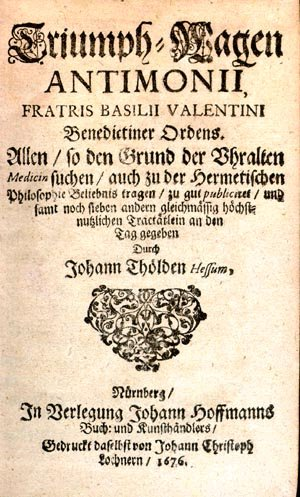
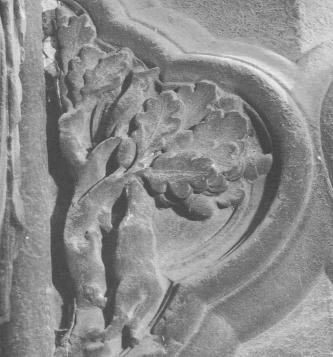
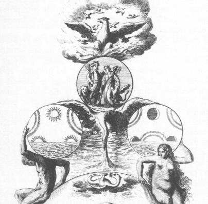
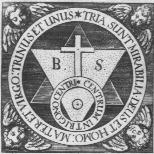
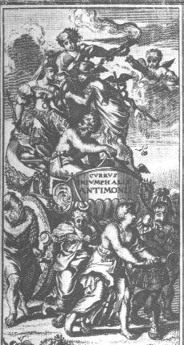
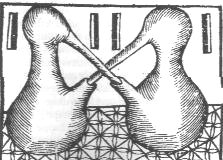
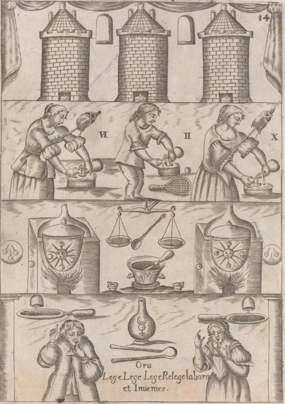

LE CHAR TRIOMPHAL DE L'ANTIMOINE de Frère Basile Valentin religieux de l'ordre de saint Benoît

frontispice de l'édition de 1676

revu le 19 juillet 2004
plan : 1. Présentation - 2. Sur les traces de Basile Valentin - 3. Le Currus triumphalis antimonii : AVANT-PROPOS DE L'AUTEUR - Premier point concernant l'invocation du saint Nom de Dieu - Deuxième point concernant la contemplation des choses - Troisième point concernant la vraie et sincère préparation des choses - Quatrième point concernant la méthode de se servir des bons médicaments - Cinquième et dernier point concernant l'utilité des bons médicaments - Sainte aspiration et prière de l'auteur au Seigneur notre Dieu - Analyse des grandes vertus de l'Antimoine - Sainte exclamation de l'auteur sur la folie et l'aveuglement des humains - Fin de la préface de l'auteur. CHAPITRE PREMIER TRAITÉ DE L'ANTIMOINE - CHAPITRE II DE LA DESCRIPTION DE L'ANTIMOINE - CHAPITRE III DE LA CALCINATION DE L’ANTIMOINE ET DE SA RÉDUCTION EN VERRE CLAIR ET NET - CHAPITRE IV DE LA PRÉPARATION DU VERRE D’ANTIMOINE ROUGE - CHAPITRE V DE LA PRÉPARATION DU VERRE BLANC D’ANTIMOINE - CHAPITRE VI DE LA SÉPARATION DU SOUFRE DU VERRE D'ANTIMOINE ET DE L'EXTRACTION DE SA TEINTURE - CHAPITRE VII DE LA MANIÈRE DE FAIRE DE L'HUILE D'ANTIMOINE - CHAPITRE VIII D'UNE AUTRE MANIÈRE DE FAIRE L'HUILE D'ANTIMOINE - CHAPITRE IX DE LA MANIÈRE DE FAIRE L'ARCANE DE L'ANTIMOINE - CHAPITRE X DE LA MANIÈRE DE FAIRE L'ÉLIXIR D'ANTIMOINE : Vertus de l'élixir d'antimoine et de ses admirables propriétés. CHAPITRE XI DE LA FIXATION DE L'ANTIMOINE - CHAPITRE XII DE L'EXTRACTION DES FLEURS D'ANTIMOINE - CHAPITRE XIII DES EXTRACTIONS ANTIMONIALES - CHAPITRE XIV DE L'EXTRACTION ANTIMONIALE POUR LA LÈPRE - CHAPITRE XV DE LA MANIÈRE DE PRÉPARER LE FOIE D'ANTIMOINE - CHAPITRE XVI D'UNE AUTRE EXTRACTION ANTIMONIALE PAR EAU CORROSIVE - CHAPITRE XVII DE LA MANIÈRE DE FAIRE L'ANTIMOINE DIAPHORÉTIQUE - CHAPITRE XVIII DE LA MANIÈRE DE FAIRE LE BAUME DU REGULE D'ANTIMOINE - CHAPITRE XIX DE LA PRÉPARATION DE L'HUILE OU SOUFRE D'ANTIMOINE - CHAPITRE XX D'UNE AUTRE PRÉPARATION D'HUILE OU SOUFRE D'ANTIMOINE COMME AUSSI LE VÉRITABLE SEL DE CE PRÉCIEUX MÉTAL - CHAPITRE XXI DE LA REVIVIFICATION DU MERCURE D'ANTIMOINE - CHAPITRE XXII DU BAUME D'ANTIMOINE - CHAPITRE XXIII DE L'HUILE D'ANTIMOINE AVEC LE MERCURE SUBLIMÉ - CHAPITRE XXIV DE L'HUILE POUR LES ULCÉRÉS - CHAPITRE XXV D'UN AUTRE BAUME VULNÉRAIRE - CHAPITRE XXVI D'UNE AUTRE PRÉPARATION D'HUILE D'ANTIMOINE SANS ADDITION CONTRE LA PESTE ET TOUTES SORTES DE FIÈVRES - CHAPITRE XXVII DE LA PRÉPARATION D'UNE AUTRE HUILE POUR LES POUMONS - CHAPITRE XXVIII D'UNE AUTRE HUILE EXCELLENTE AUX GANGRÈNES ET ULCÉRÉS - CHAPITRE XXIX D'UNE AUTRE HUILE POUR LES POUMONS ET MAUX D'ESTOMAC - CHAPITRE XXX D'UNE AUTRE PRÉPARATION DU SOUFRE DE L'ANTIMOINE EN HUILE - CHAPITRE XXXI DES REMARQUES PARTICULIÈRES ET NÉCESSAIRES SUR LES DIFFÉRENTES PRÉPARATIONS DE L'ANTIMOINE - CHAPITRE XXXII DE LA PRÉPARATION DU VINAIGRE PHILOSOPHIQUE - CHAPITRE XXXIII DU RECULE MARTIAL ÉTOILÉ - CHAPITRE XXXIV DU PLOMB DES PHILOSOPHES - CHAPITRE XXXV CONTENANT L'ABRÉGÉ ET SUPPLÉMENT DE L'AUTEUR - CHAPITRE XXXVI OÙ IL EST TRAITÉ EN PARTICULIER DU CHARIOT TRIOMPHAL DE L'ANTIMOINE ET DE LA COMPOSITION ET PRÉPARATION DE LA PIERRE DE FEU QUI S'EN FAIT : Première préparation de la pierre de feu - Deuxième préparation de la pierre de feu - Troisième et dernière préparation de la pierre de feu -
Note sur les couleurs dans le texte : nos commentaires - les extraits de traités sur l'antimoine - citations -
1. PrésentationPresque tous les auteurs s'accordent à placer Basile Valentin [B.V.] au début du XVe siècle, et vers l'année 1413. Ils ajoutent qu'il vivait en qualité de moine de l'ordre de Saint-Benoît, dans le couvent de Saint-Pierre, à Erfurth en Prusse. F. Hoefer nous dit que c'est Maurice Gudenus qui a, le premier, contribué à répandre cette opininion [Historia Erfordieusi ; Erfuti, 1675]. Il y a cependant de bonnes raisons de croire que non seulement il n'y a jamais eu de moine bénédictin de ce nom, mais que l'auteur pseudonyme des ouvrages de B.V. appartient en toute hypothèse à la fin du XVe siècle ou est peut-être d'une époque plus récente. Quoi qu'il en soit, le nom de B.V. ne se trouve ni sur la liste provinciale des bénédictins d'Erfurth, ni sur la liste générale de tous les religieux de cet ordre, déposée dans les archives de Rome [Motschmann, Erfodia litterata]. Deux faits semblent montrer que l'auteur en question n'est pas aussi ancien qu'on le pense ; c'est d'abord la préparation des caractères d'imprimerie avec un alliage d'antimoine, qui se trouve désignée dans un de se sprincipaux ouvrages [les premiers caractères d'imprimerie étaient en bois et ce ne fut que plusieurs années après qu'on se servit des caractères métalliques, Char Triomphal] ; c'est ensuite l'indication d'une maladie, la syphilis, désignée sous le nom de mal français ou de nouvelle maladie des militaires, que l'auteur conseille de combattre par les sels de mercure, d'antimoine et de plomb.
On raconte qu'une des colonnes de l'église d'Erfurth s'étant ouverte tout à coup, comme par miracle, on y avait trouvé les écrits de cet alchimiste : cette vieille anecdote est directement empruntée aux maîtres de l'Art sacré : Voici l'histoire telle que la rapporte F. Hoefer [Hist. chimie] :Démocrite le mystagogue est compté au nombre des artistes de l'Art sacré. [...] On a de lui un petit traité intitulé les Physiques et les Mystiques. Démocrite raconte que son maître [Ostanèse le Mède] étant mort avant que lui, son disciple, ait eu le temps de se perfectionner dans la science, il résolut de l'évoquer des enfers pour l'interroger sur les secrets de l'art sacré ; que, au moment où il était occupé à exécuter l'oeuvre magique de l'évocation, le maître, sorti de sa tombe, s'était présenté tout à coup et lui avait adressé ces paroles : « Voilà donc la récompense de tout ce que j'ai fait pour vous ! »Aucun des ouvrages de B.V., dont la plupart sont écrits dans l'ancien dialecte haut saxon, n'a été imprimé antérieurement au XVIIe siècle. Les éditions les plus anciennes datent de 1602 ou de 1604. La bibliothèque de l'Arsenal possède plusieurs manuscrits du XVIIe siècle [n° 162, 163, 164, 165], contenant la traduction française de quelques-uns de souvrages de B.V. C'est donc dans ces ouvrages que l'on trouve les premières notions un peu détaillées sur l'antimoine ainsi qu'une multitude de faits nouveaux dont quelques-uns ont été à tort réclamés comme des découvertes modernes. L'édition originale du Currus triumphalis antimonii est en allemand [F. Thoelden, Leips., 1604 et Kerkringii, Amstelod., 1671].Démocrite osa lui poser plusieurs questions et , entre autres, il lui demanda comment il fallait disposer et combiner entre elles les natures. Pour toute réponse, le maître répliqua : « Les livres sont dans le temple. » Toutes les recherches de Démocrite pour trouver ces livres furent vaines. quelque temps après, ce philosophe se rendit au temple pour assister à une grande fête. Etant à table avec ceux qui composaient l'assemblée, il vit une des colonnes du temple s'entr'ouvrir d'elle-même. Alors, Démocrite s'étant penché pour regarder dans l'ouverture de la colonne, y aperçut les livres indiqués par le maître.
Parallèlement à ces précsions, nous en donnerons donc qui tendraient, paraît-il, à faire accroire qu'il existait bien un moine nommé B.V. Jacques Sadoul, dans son Trésor des alchimistes, indique même qu'on se demandait si le monastère d'Erfurt existait. Cela du moins semble clair : on peut lire de la plume de Leibniz une lettre où il parle de B.V. :"Je sais ceci, que Jean Philippe, electeur de Mayence, a ordonné qu'il soit recherché à Erfurt en son pouvoir, chez les bénédictins de cette ville, mais en vain."
E. Canseliet a par ailleurs consulté l'oeuvre de Jean-Marie Guden, comte Palatin, Historia Erfurtensis, où ce professeur de droit, qui fut bourgmestre de la ville et recteur de son université, écrivait en 1675 :
"Basile Valentin -en l'année 1413- vécut dans le monastère de Saint-Pierre, admirable par son application à l'art de la médecine et des choses naturelles...En outre, il aurait atteint à l'espoir fallacieux de fabriquer de l'or, selon l'inopportune folie, dont il se montre moins coupable, parce que, depuis des siècles, non seulement elle trompe les amateurs de cette science, mais encore elle les dépouille de leurs facultés intellectuelles."
Peut-on vraiment considérer qu'il exista réellement un moine bénédictin de nom inconnu ? Qui prit le pseudonyme de B.V. ? Et qui écrivit tous les traités que nous lui connaissons ou qui sont supposés ? Rien ne semble moins sûr. Il reste que c'est à B.V. et non à Paracelse, semble-t-il, que l'on doit l'invention du Sel. Voici à cet égard un extrait de L'aurore de la Médecine de Jean-Baptiste Van Helmont qui écrivait en 1652 :
"Basile Valentin, moine bénédictin, décrivit ensuite plus clairement l'âme du métal, qu'il nomma soufre ou teinture ; le corps, donc le sel ; et enfin l'esprit qu'il appela mercure. Lesquels principes, de la sorte empruntés à Basile, Théophraste Paracelse, plus d'un siècle plus jeune que lui, par une application admirable, transporta ensuite à l'ensemble des corps."
Ce point semble controversé et la recherche des antériorités laisse parfois perplexe. De son vivant, Paracelse avait écrasé tant de pieds que ses ennemeis s'acharnèrent sur sa mémoire. C'est à ce moment qu'on prétendit qu'il était redevable à B.V. de l'idée du principe Sel. Cette calomnie [selon L. Girardin, Alchimie, 1972] fit si bien carrière qu'au XVIIIe siècle, Boerhave n'hésitait pas à déclarer qu'il « osait appeler B.V. le maître de tous les chimistes d'aujourd'hui, et de toutes les doctrines de Paracelse et de Van Helmont » [Institutiones et Experimenta Chemiae, Paris, 1724]. Quoi qu'il en soit, B.V. est cité par tous les alchimistes comme l'un des maîtres de l'art et il est connu pour bien d'autres traités que le Char triomphal :
- Haliographia [Bononiae, 1644] ;
- Macrocosme, ou Traité des minéraux ;
- De la préparation des médicaments [Francof. 1625] ;
- Traité des choses naturelles et surnaturelles [Ed. Thoelden, Eisleben, 1603 - la bibliothèque de l'Arsenal possède une traduction française manuscrite, n° 163, fol. 36] ;
- Révélation des mystères des teintures essentielles des sept métaux [idem] ;
- Révélation d'artifices secrets [Erfurth, 1624] ;
- De la distillation de l'esprit-de-vin [Erfurth, 1624] ;
- Du soufre, du vitriol, et de l'aimant des philosophes [Erf., 1624] ;
- Du soufre, du vitriol, et de l'aimant du vulgaire [ibid.] ; [ces quatre derniers titres ont paru dans le Dyas Chymica Tripartita attribué à Grasseus ou Grasshoff]
- Les Douze clefs de Philosophie [Manget, bibl. chim. curiosa, t. II] ;
- De magno lapide antiquissimorum [idem] ;
- Dernier testament [Basil. Valent. Chjemysche Schriffen, édit. Nic. Petraeus, Hambourg, 1717] ;
- autres écrits : La Pierre des anciens [Ed. Thoelden, Leips., 1603] - La première matière de la pierre philosophale [Manget, t. II] - l'Azoth des philosophes [Francof. 1613 ; Theat. chem., t. IV ; Bibl. Philosoph. chim., Paris, 1741] - l'Apocalypse chimique [Erfurt, 1624] - le Testament [Theat. chem., t. IV] - le Microcosme [Strasburg, 1681] - Dialogue du frère Albert avec un esprit [in P. Borei] - le Chemin de la vérité [Nuremb., 1718] - la Lumière de la nature [Ed. Reichard, Halle, 1608].La liste n'est pas close et Gmelin [Gesch. der Chem. t. I] cite d'autres manuscrits.
2. Sur les traces de Basile Valentin [texte en gras : extraits de B.V.]
De tous ces manuscrits, les alchimistes modernes ont en évoqué certains. Fulcanelli traite de l'Azoth dans les Mystères :
"Dans le traité de l'Azoth, attribué au célèbre moine d'Erfurth, Basile Valentin, et qui serait plutôt l'oeuvre de Senior Zadith, on remarque une figure sur bois représentant une nymphe où sirène couronnée, nageant sur la mer et faisant jaillir, de ses sens rebondis, deux jets de lait qui se mélangent avec les flots."
Ailleurs, c'est du Mercure dont il est question [Myst., p. 121] :
"Certains Adeptes, Basile Valentin est de ceux-là, l'ont nommé Vitriol vert, pour déceler sa nature chaude, ardente et saline ; d'autres, Emeraude des philosophes, rosée de mai, Herbe saturniennes, Pierre végétale, etc."
Puis, du poids des natures [Myst., p. 125] :
"Tous les philosophes n'ont guère été prolixes sur le secret du poids. Basile Valentin s'est contenté de dire qu'il fallait « bailler un cygne blanc à l'homme double igné » ce qui correspondrait au Sigillum Sapientum d'Huginus à Barma, où l'artiste tient une balance dont un plateau entraîne l'autre selon le rapport apparent de deux à un."
Ce sont les chaux métalliques qui sont ensuite évoquées [Myst., p. 129] :
"Les alchimistes font allusion à cette opération [la réincrudation] lorsqu'ils parlent de réanimer les corporifications, c'est-à-dire de rendre vivants les métaux morts. C'est l'Entrée au Palais fermé du Roy de Philalèthe, la première porte de Ripley et de Basile Valentin, qu'il faut savoir ouvrir."
C'est la voie sèche qui a été envisagée par B.V. selon Fulcanelli :
"...l'auteur paraît envisager la voie sèche lorsqu'il écrit que, « pour parvenir à cet Art, il n'est requis grand travail ni peine, et les dépenses sont petites, les instruments de peu de valeur. Car cet Art peut être appris en moins de douze heures, et de l'espace de huit jours mené à perfection, quand il a en soi son propre principe »." [Myst., p. 141]
Le début de la coagulation de l'eau mercurielle semble aussi ne pas avoir eu de secret pour B.V. :
"Contre le pied-droit du grand porche, nous retrouvons, en un qutre-feuiles engagé l'allégorie du coq et du renard, chère à Basile Valentin."

FIGURE I
allégorie du coq et du renard, cathédrale d'Amiens, porche centralLe Palais fermé du Roy est ensuite abordé avec l'idée de la forteresse alchimique, reprise et modifée par Kunrath en 1609. Le mythe de Tristan de Léonois est une nouvelle occasion de citer B.V. :
"Nous retrouvons ici l'hiéroglyphe de fabrication du Lion vert, -d'où le nom de Léonois ou Léonnais porté par Tristan, -laquelle est enseignée par Basile Valentin sous la lutte des deux champions, l'aigle et le dragon." [Myst., p. 180]
puis, l'alchimiste s'attache au manuscrit de G. Aurach [Le Très précieux Don de Dieu, Georges Aurach, Strasbourg, 1415] :
"...[il] montre un matras de verre, rempli à moitié d'une liqueur verte, et ajoute que tout l'art repose sur l'acquisition de ce seul Lion verd et que son nom même indique sa couleur. C'est le vitriol de Basile Valentin." [Myst., p. 185]
Le sujet grossier de l'oeuvre est ensuite évoqué :
"...les uns le nomment Magnesia lunarii ; d'autres, plus sincères, l'appellent Plomb des Sages, Saturnie végétable. Philalèthe, Basile Valentin, le Cosmopolite le disent Fils ou Enfant de Saturne..." [Myst., p. 197]
Enfin, Fulcanelli est-il envieux ou charitable quand il assure :
"...Ne vous fiez pas à ce que dit Basile Valentin dans ses douze Clefs, et gardez-vous de prendre ses paroles à la lettre lorsqu'il prétend que « celui qui a la matière trouvera bien un pot pour la cuire. »
Pourtant, l'Adepte considère certainement B.V. vomme un artiste louable :
"Parmi ceux-ci, il convient de citer au premier rang Basile Valentin, moine bénédictin [...], l'artiste le plus considérable peut-être que l'art hermétique ait jamais produit..." [DM, I, p. 100]
Aussi faut-il prendre enconsidération et bien peser chaque réflexion sur le moine bénédictin, celle-ci par exemple :
"...qu'enfin cette extraction [l'esprit enclos dans la matière première, ou vierge philosophique] doit se faire par un procédé analogue à celui qui permet de séparer la crème du lait, ce qu'enseignent d'ailleurs Basile Valentin, Tollius, Philalèthe et les personnages du Liber Mutus." [DM, I, p. 157]
évoquant par là des opérations par lesquelles on recueille le salpêtre à l'état de pureté ainsi que la crème de tartre. Un rensignement de la plus haute importance est ensuite fourni de la manière la plus « innocente » par Fulcanelli :
"...Basile Valentin -prestigieux Adepte qui ne méprisait point les essais spagyriques- établit toute la série des sels antimoniaux et réalise le colloïde d'or rubis..." [DM, I, p. 179]
avec en note cette remarque :
« En partant du trichlorure d'or pur, séparé de l'acide chloraurique et lentement précipité par un sel de zinc uni au carbonate potassique, dans une « certaine eau de pluye ». L'eau de pluie seule, recueillie à une époque donnée, en récipient de zinc, suffit à former le colloïde rubis, que l'on sépare des cristalloïdes par dialyse, ce que nous avons maintes fois expérimenté et toujours avec un égal succès. »
Fulcanelli évoque-t-il ici le pourpre de Cassius ? Nous le pensons et cela nous semble mériter un certain développement que l'on mettra en parallèle, plus loin, avec celui que nous ferons sur le verre d'antimoine. Le pourpre de Cassius est évoqué dans une section spéciale [le sceptre de Jupiter].
Reprenons les évocations sur Basile Valentin [B.V.] figurant dans les textes modernes. Nous évoquerons un passage des DM, I, p. 201 :Quant aux procédés archimiques connus sous l'expression de Petits Particuliers, ce sont, le plus souvent, des techniques aléatoires. Les meilleurs de ces processus partent des produits métalliques extraits selon les moyens que nous avons indiqués. On les rencontrera répandus à profusion dans quantité d'ouvrages de second ordre et de manuscrits de souffleurs. Nous nous bornerons, à titre documentaire, à reproduire le particulier que signale Basile Valentin [Douze clefs de Philosophie, Paris, Pierre Moët, 1659, livre I ; réed. Editions de Minuit, 1956], parce que, contrairement aux autres, il est soutenu par de valides et pertinentes raisons philosophiques. Le grand Adepte affirme, dans ce passage, que l'on peut obtenir une teinture particulière en unissant au mercure de l'argent au soufre du cuivre par l'entremise du sel de fer.Il s'agit ici de la préparation du Mercure à partir du sel fixe obtenu de Vénus [sel de potasse] et du vitriol de Mars [de fer, de cuivre ou de zinc]. Il est d'autant plus étrange de lire à la fin de cet extrait : « le sang chaud et colerique de Venus, et sa grande noirceur corrigée par le sel de Mars. » car c'est le contraire qu'on attend... La Lune, telle qu'elle est évoquée dans ce texte, se rattache au symbole du Mercure et non au Soufre blanc qui, en principe, est le Corps ou Toyson d'or. Par la voie spagyrique, il est délicat d'identifier les substances mises en présence : Mars tire son origine d'Ariès qui -selon Newton - symbolise l'antimoine parce que l'or est purifié par l'antimoine et que, par analogie le soleil est exalté dans le Bélier [point vernal ou g correspondant à l'équinoxe de Printemps]. Quant au Mercure, autrefois confondu avec Hermès, on lui avait attribué l'étain avant que ce métal ne soit placé sous la domination de Jupiter. C'était l'électrum [alliage d'or et d'argent] qui était placé sous la maîtrise de Jupiter [Hésiode, Théogonie, 371, 3;4]. Ces attributions reposent sur de vieilles traditions défigurées, relatives à l'adoration des planètes, à Babylone et en Chaldée, et à leurs relations avec les métaux, exprimées par un certain symbole, représentant les révolutions célestes et le passage des âmes à travers les astres. C'était un escalier, muni de 7 portes élevées, avec une 8ème au sommet.« La Lune, dit-il, a en soy un mercure fixe par lequel elle soustient plus longuement la violence du feu que les autres métaux imparfaicts ; et la victoire qu'elle remporte montre assez combien elle est fixe veu que le ravissant Saturne ne luy peut rien oster ou diminuer. La lascive Venus est bien colorée, et tout son corps n'est presque que teinture et couleur semblable à celle qu'a le Soleil, laquelle, à cause de son abondance, tire grandement sur le rouge. Mais d'autant que son corps est lepreux et malade, la teinture fixe n'y peut pas faire sa demeure, et le corps s'envolant, necessairement la teinture doit suyvre, car iceluy perissant, l'âme ne peut pas demeurer, son domicile estant consumé par le feu, n'apparoissant et ne luy estant laissé aucun siege et refuge, laquelle au contraire accompagnée demeure tout avec un corps fixe. Le sel fixe fournit au guerrier Mars un corps dur, fort, solide et robuste. d'où provient sa magnanimité et grand courage. C'est pourquoy il est grandement difficile de surmonter ce valeureux capitaine, car son corps est si dur qu'à grand'peine peut-on le blesser. Mais si quelqu'un mesle sa force et dureté avec la constance de la Lune et la beauté de Venus, et les accorde par un moyen spirituel, il pourra faire non point tant mal à propos une douce harmonie, par le moyen de laquelle le pauvre homme, s'estant servy a cest effet de quelques clefs de nostre Art apres avoir monté au haut de ceste eschelle et parvenu jusques à la fin de l'Oeuvre, pourra particulièrement gaigner sa vie. Car la nature phlegmatique et humide de la Lune peut estre eschauffée et desseichée par le sang chaud et colerique de Venus, et sa grande noirceur corrigée par le sel de Mars. »
à La première porte est de plomb ; elle est assignée à Saturne, la lenteur de cet astre étant exprimée par la pesanteur du métal.
à La seconde porte est d'étain; elle est assignée à Vénus, dont la lumière rappelle l'éclat et la mollesse de ce corps.
à La troisième porte est d'airain, assignée à Jupiter, à cause de la résistance du métal.
à La quatrième porte est de fer, assignée à Hermès, parce que ce métal est utile au commerce, et se prête à toute espèce de travail.
à La cinquième porte, assignée à Mars, est formée par un alliage de cuivre monétaire, inégal et mélangé.
à La sixième porte est d'argent, consacrée à la Lune;
à La septième porte est d'or, consacrée au soleil; ces deux métaux répondent aux couleurs des deux astres.
Les attributions des métaux aux planètes ne sont pas ici tout à fait. les mêmes que chez les Néoplatoniciens et les alchimistes. Elles semblent répondre à une tradition un peu différente ; dans certaines listes astrologiques, Jupiter est de même assigné à l'airain, et Mars au cuivre. [Introduction à la chimie des anciens, Métaux et planètes, M. Berthelot]Dans ses DM, Fulcanelli (p.399) évoque la matière première et ses rapports avec « l’étain grenaillé et la noix de galle ». C'est par cabale qu'il faut comprendre l'allusion. Car l'étain sous forme de grenaille est requis dans l'un des modes de préparation du sesquichlorure d'étain [Fuchs]. Ce sesquichlorure est l'un des deux composants du pourpre de Cassius. Ces remarques nous serviront plus tard. Un autre passage des DM, p. 214, permet de revenir sur le Soufre dont nous avons dit qu'il posait en fait, davantage de problème que le Mercure :
"Basile Valentin insiste sur la nécessité de donner à l'or une surabondance de soufre. « L'or ne teint pas, dit-il, s'il n'est auparavant teint lui-même. »...."
Fulcanelli, à cette occasion, entre dans des détails techniques :
"Cette transmission du soufre en excès retenu par l'or exalté s'effectue peu à peu sous l'action de la chaleur ; elle réclame de vingt-quatre à quarante heures, selon l'habileté de l'artisan et le volume des matières traitées."
Le délai fixé par Fulcanelli se rapproche de celui qui est préconisé par les chimistes dans la préparation de certains strass colorés. Mais l'expression d'or exalté est ambigue. S'agit-il d'oxyde d'or [sesquioxyde ?] ou s'agit-il d'or à l'état métallique et très divisé ? Voila qui nous rapprocherait du pourpre de Cassius. Poursuivons. Dans un autre passage, DM, I, p. 256, le parallèle se poursuit :
"Or, ce signe solaire est caractérisé par la coloration rouge, laquelle peut varier d'intensité, ainsi que le dit Basile Valentin : « Sa couleur tire du rouge incarnat sur le cramoisy, ou bien de couleur de rubis sur couleur de grenade ; quant à sa pesanteur, elle poise beaucoup plus qu'elle a de quantité. »" [Douze clefs, Moët, 1659]
Et sur la même page :
"Sa fusibilité [pierre philosophale] est telle, en effet, que tous les auteurs l'ont comparée à celle de la cire (64°C)..."
ce qui correspond à peu près à la température à laquelle le pourpre se décompose. Un pas de plus est franchi quand, p. 266, Fulcanelli semble livrer le secret formel - sinon factuel - de la pierre :
"C'est pourquoi Basile Valentin recommande de prendre l'esprit dans la racine métallique, et Bernard le Trévisan défend d'employer les métaux, les minéraux et leurs sels à la construction du corps..."
et la racine métallique ne peut, en toute logique, que désigner un oxyde. De ces oxydes, nous le rappelons, une section entière [humide radical] leur est consacrée dans leurs rapports zodiacaux [cf. zodiaque alchimique] et planétaires. Voici un autre extrait que Fulcanelli expose lors de l'examen de la cheminée de Louis D'Estissac :
"La baguette d'Hermès est véritablement [...] l'antique dragon de Basile Valentin, dont la langue et la queue se terminent en dard, ce qui nous ramène au serpent symbolique..."
C'est le mot dard qui mérite un petit développement de cabale : en grec, un dard se dit akontion, proche phonétiquement de AkontioV, le fils de Lycaon. Or, Lycaon est riche d'enseignement hermétique. Nous avons évoqué cette fable [Ovide, Met., I, 6] dans le commentaire de l'Oeuvre secret d'Hermès de Jean d'Espagnet. Lycaon fut transformé en loup par Zeus et selon une autre légende, il était le père de Callisto qui devint la constellation de l'Ourse et il n'est pas besoin d'insister sur l'étoile polaire dont le symbolisme est si important dans l'oeuvre, par sa valeur d'attraction, sur laquelle s'accordent tant d'alchimistes. Callisto, selon une autre légende, serait une nymphe du cortège d'Artémis mais dans les deux cas, le symbolisme reste le même et a trait au dissolvant. Le caractère « éternel » que doit avoir l'eau des Sages est attesté par le fait que la constellation de l'Ourse ne se couche jamais [Obéissant à une prière d'Héra, Poséidon leur interdit de se coucher à l'horizon de l'Océan]. En effet, Callisto fut transformée en ourse par Zeus pour que la nymphe échappe au courroux de Junon qui était jalouse. Arcas, fils des amours de Callisto et de Zeus, rencontra un jour sa mère sous sa forme d'ourse et s'apprétait à la percer de ses flèches. Zeus intervint alors, et, pour éviter ce crime, changea Arcas en ours et propulsa Callisto et son fils dans les cieux où ils prirent le nom de Petite Ourse et Grande Ourse. La signification de cette allégorie est assez simple : Zeus représente la rosée de mai, c'est-à-dire la forme élémentaire du Mercure des Sages qui est une Eau d'origine divine [revoyez les similitudes entre teioV et teion et vous contournerez la difficulté] ; on peut considérer Callisto et Arcas comme les deux composants du Mercure : Callisto est des parties d'Artémis et Arcas, des parties de Zeus, c'est-à-dire frère d'Apollon [né de Latone, séduite par Zeus]. Et le Mercure des Sages a cette qualité d'être une Eau permanente : feu aqueux et eau ignée à la fois. Plus loin, p. 386, Fulcanelli reprend un autre passage de B.V. :
"Or, Basile Valentin enseigne que « la pierre philosophale se fait de la même façon que les villageois font le beurre », par battage ou agitation de la crème, qui représente, dans cette similitude, notre mercure philosophique."
Nous renvoyons le lecteur à la section des Principes et à la section chimie et alchimie où nous analysons plus avant cette allégorie. Qu'il sache cependant que dans la préparation du Mercure, on voit à plusieurs reprises une pellicule apparaître à la surface du composé et, de façon générale, cela est le signe de sursaturation d'une solution saline indiquant l'imminence d'une formation cristalline. Les Adeptes voilent ce processus physique sous l'allégorie de Latone et de Délos. Quant à Latone, mère de diane et d'Apollon, elle est évoquée par fulcanelli, p. 388 [DM, I] :
" [le Mercure] C'est l'eau des deux champions de Basile Valentin, dont la fabrication est enseignée par la gravure de sa deuxième Clef. L'un de ceux-ci porte un aigle sur son épée [le corps fixe], l'autre cache derrière son dos un caducée [dissolvant]..."
Voici cette Deuxième Clef [Douze Clefs de philosophie].
FIGURE II
Deuxième Clef de Basile ValentinC'est la figuration du double Mercure. Ce double Mercure, Fulcanelli l'évoquera encore p. 392 des DM, I :
"Par la solution de l'or philosophique [...] on obtient le mercure philosophique composé du fixe et du volatil, non encore radicalement unis, mais susceptibles de coagulation."
avec cette note :
"Tu dois savoir que cette solution et séparation n'a été jamais décrite par aucun des anciens Sages Philosophes qui ont vécu avant moi et qui ont su ce Magistère. Et s'ils en ont parlé, ce n'a été que par énigmes et figures, et non à découvert." [Basile Valentin, Testamentum].
Ce n'est certes pas de l'or « vulgaire » dont parle Fulcanelli ; parle-t-il du soufre rouge ? Evoque-t-il de l'or métallique à un état de division extrême ? Le Lion vert garde son secret... Dans les DM, II, p. 44, l'allusion au Char triomphal et à l'antimoine devient plus pressante :
"Or, les cabalistes écrivent artimon et prononcent antémon ou antimon, vocable derrière lequel ils cachent le nom du sujet des sages [...] la racine de ce mot [anqemon signifie fleur], anqoV, exprime ... la plus noble partie des choses, tout ce qui possède de l'éclat et brille à l'instar du feu. On ne s'étonnera point, dès lors, que Basile Valentin, dans son Char triomphal de l'Antimoine, ait donné à la prime substance de l'oeuvre particulier qu'il y décrit la dénomination de pierre à feu."
Le mot antoV exprime, au vrai, plus que cela. Il évoque quelque chose, quelque substance qui croît ou pousse ; aussi l'or par l'éclat et le caractère brillant de la substance qui s'attache à ce terme ; mais il évoque surtout une efflorescence et nous ne serions pas surpris outre mesure d'y voir une indication sur la fleur d'un sel : le salpêtre. Car le salpêtre se dit en grec aloVanqoV. Si nous cherchons les mots grecs qui s'y rattachent par pure homophonie
[la règle la plus élémentaire de la cabale hermétique ; on peut parler d'homonymes mais l'homophonie nous semble un terme plus adapté : il caractérise des signes graphiques qui notent un même son et les Artistes y reconnaissent des isotopes spirituels. Que l'on nous comprenne bien : ainsi que le diait Fulcanelli, ce sont là jeux de mots et nous n'en disconvenons pas mais c'est au lecteur de se prêter à ce jeu : muni d'un fil d'Ariane, il ne pourra point se perdre dans le dédale figuré par le labyrinthe de Salomon],
nous trouvons aloV [qui renvoie à une ville de Thessalie], et surtout alwV : c'est d'abord du grain, du blé [qui contient l'idée de la croissance, de la germination] ; c'est ensuite un cercle autour du soleil ou de la lune [halo] et c'est le plus beau coup de cabale que nous ayons rencontré jusqu'à présent : le halo est le symbole de la fleur du sel ; le cercle centré d'un point, c'est aussi ce halo où le point représente le fixe, c'est-à-dire le Soufre. Quant au qualificatif de « pierre à feu », il indique avec assez d'insistance le salpêtre pour que nous ne puissions plus douter. Mais, est-ce là le véritable antimoine saturnin de Tollius ? Nous réserverons notre réponse sur ce point de science, en laissant au lecteur le soin de consulter la section prima materia où nous abordons les problèmes liés à l'origine du stibium. C'est le grimoire de Dampierre-sur-Boutonne qui va donner au maître l'occasion de nous en dire plus sur le feu de nature :
"Batsdorff décrit la lampe philosophique comme devant toujours être abondamment pourvue d'huile, et sa flamme alimentée par l'intermédiaire d'une mèche d'asbeste. Or, le grec asbestoV signifie inextinguible, de durée illimitée, infatigable, inépuisable, qualités attribuées à notre feu secret, lequel, dit Basile Valentin, « ne brûle pas et n'est pas brûlé."
Le mot asbestoV a d'autres acceptions sur lesquelles Fulcanelli est resté soigneusement muet : ce n'est rien d'autre que de la chaux vive, assimilable, par cabale, à la gloire éternelle. Ce feu secret, nous ne cessons de le répéter, est de la nature de la chaux et la chaux vive dans son combat avec l'eau a des caractères qui la rapprochent du feu igné ou du feu aqueux. La chaux joue un rôle fondamental dans les phénomènes d'oxydo-réduction et c'est avant tout un agent oxydant puisqu'elle cède son oxygène [on voit par là qu'il s'agit d'un agent de corruption]. Le symbolisme du cygne est évoqué ensuite, p. 194 :
"Basile Valentin assure que « l'on doit donner à manger un cygne blanc à l'homme double igné » et, ajoute-t-il, « le cygne roti sera pour la table du roi »."
C'est des deux Soufres dont il est question ici ; dans les textes, le cygne équivaut à la colombe. En grec, le cygne, kuknoV, est homophone de KuknoV qui désigne soit le fils de Poséidon tué par Achille, soit le fils d'Arès qui teint tête à Héraclès [notre artiste]. Nous passerons sur l'expression « chanter le chant du cygne », ce qui veut dire « être sur le point de mourir » ; son intérêt hermétique est limité : il s'agit de la phase de putréfaction où la Lune et le Soleil des philosophes disparaissent au sein du Mercure ; on l'appelle aussi la grande éclipse de Lulle et nous l'avons décrite tant de fois que nous en croyons acquise la portée exotérique du symbolisme. L'allusion au fils d'Arès vaut par contre des explications. Il peut s'agir de Lycaon, transformé en loup par Zeus ou Cycnos. Mais Cycnos est une figure protéiforme : le plus ancien des Cycnos apparaît pendant la guerre de Troie [dont Pernety pense qu'elle recèle des allégories hermétiques] ; Cycnos passait pour invulnérable et était fils de Poséidon ; son père le changea en cygne [Ovide, Met., II, 2] ; voici un extrait qui peut expliquer l'origine hermétique du symbolisme :
"Cycnus Fils de Stenée, et Roy de Ligurie - Vit ce changement d'Estre avec un oeil d'envie. - Il en fut le témoin, et par le sang, dit-on, - Du costé de sa Mère il touchoit Phaëton - "
Que le lecteur relise ce que nous disons de Phaéton dans l'humide radical métallique. Il verra qu'il est toujours question de char. Phaéton était appelé « celui qui brille » et il désigne le sujet des sages. Un autre Cycnos, roi des Ligures, pleura tant la mort de son ami Phaéton, foudroyé par Zeus, qu'Apollon, ému, le changea en cygne. Dans le symbolisme alchimique, le cygne semble incarner la lumière mâle, solaire et fécondante, c'est-à-dire l'Âme ou Soufre rouge. Le cygne contracte aussi des rapports avec l'oie [autre symbole utilisé par Fulcanelli] par l'intermédiaire des deux couples Zeus-cygne et Léda-oie. Dans ces conditions, on peut aussi se demander si le cygne ne peut pas représenter l'hermaphrodite des alchimistes. Sa blancheur immaculée nous rend perplexe car sa couleur devrait alors plutôt être le rubigo. Cette image du cygne se retrouve en iconographie dans la représentation de la succession des stades du processus alchimique.

FIGURE III
représentation emblématique du processus alchimique. [Détail d'une gravure tirée de l'Encyclopédie, vol. d'illustration n°3, 1763 ; d'après un bois gravé de l'Alchymia de Libavius, 1606]Selon Jung [Psychologie et alchimie, Buchet-Chastel, 1970 - cf. également Aurora consurgens, I - II - III], le cygne nage sur la mer hermétique et qui crache par son bec un liquide laiteux. Ce cygne cacherait :
"...l'élixir blanc, la craie blanche, l'arsenic des philosophes, ce qui est commun aux deux ferments. Il doit supporter du dos et des ailes la sphère supérieure."
Comme on le voit, de part et d'autre du cygne, aux ailes écartées, nous voyons les symboles du soleil et de la lune hermétiques, prêts à être plongés dans l'eau mercurielle. Les arcs-en-ciel symbolisent des irisations de la substance, en ce moment de l'oeuvre. Ces irisations contractent des rapports avec des chaux métalliques et finalement, les chaux métalliques dissoutes reposant ainsi dans les ailes du cygne indiquent plutôt qu'il est de nature mercurielle :
"Et notre Mercure philosophique est l'oiseau d'Hermès, à qui l'on donne aussi le nom d'Oie ou de Cygne, et quelquefois celui de Faysan." [Myst., p. 116]
Fulcanelli [DM, II, p. 313] parle ensuite du sel :
"Il nous apprend [le cadran d'Edimbourg] que le mercure est un sel -ce que nous savions déjà,- et que ce sel tire son origine du règne minéral. C'est d'ailleurs ce qu'affirment et répètent à l'envi Claveus, le Cosmopolite, Limojon de Saint-Didier, Basile Valentin, Huginus à Barma, Batsdorff, etc. lorsqu'ils enseignent que le sel des métaux est la pierre des philosophes."
Ce sel est le loup affamé et ravisseur qu'évoque B.V. dans ses Douze Clefs. L'examen des couleurs des vitriols pourra être de quelque secours à l'étudiant et il comprendra quelle est cette substance qui surnage le composé lors de la formation du régule d'antimoine ; il n'aura alors qu'à se rappeler de la légende des cierges verts que nous évoquons dans une autre section. Nous aurions bien d'autres choses à dire sur les allusions d'E. Canseliet sur B.V. dans ses Deux Logis alchimiques ou dans son Alchimie expliquée sur ses Textes classiques ; toutefois, ne voulant pas dépasser présentement des bornes que nous nous sommes imposés dans cette évocation du moine d'Erfurth, nous réservons pour de futures sections ces analyses complémentaires.
Comme on le voit, le nombre d'ouvrages écrit par le groupe voilé sous le pseudonyme probable de B.V. est important et le fait que des points de chimie exacts y soient expliqués n'est pas moins étonnant que l'hermétisme qui s'en dégage. Les monastères étaient le siège d'une intense activité alchimique ainsi qu'en témoignent, du XIIIe siècle jusqu'à la fin de leur existence en tant que foyers et relais de la transmission des sciences ésotériques, maints documents. Il paraît que tous les ordres participèrent à cet essor : templiers, bénédictins, chartreux, dominicains, franciscains, etc. Au moment où des ordres religieux modernes se constituèrent, comme la société de Jésus ou les Capucins dits Minimes, au XVIIe siècle, plusieurs de leurs meembres eurent la réputation de pratiquer l'Art sacerdotal, voire d'être parvenus à l'Adeptat [c'est-à-dire qu'ils avaient réussi à obtenir la pierre philosophale]. Jacques Van Lennep dans son remarquable Alchimie consacre un chapitre à l'énigmatique moine d'Erfurth dont nous donnons cet extrait :
En ce qui concerne Basile Valentin, deux tendances s'affrontent. Pour l'une, il aurait vécu au XVIe siècle, tandis que pour l'autre, il n'aurait jamais existé. Sans aucune preuve, l'on prétendit qu'il était né à Mayence en 1394. Selon ses dires, il aurait séjourné, jeune encore, en Belgique et en Angleterre. Il se serait rendu également à Saint-Jacques de Compostelle, accomplissant. comme son prédécesseur Flamel, ce pèlerinage alchimique. En 1413, ou vers 1493 selon les sources, il aurait vécu parmi les moines de Saint-Pierre d'Erfurt. Jean Maurice Guden, recteur de l'université d'Erfurt, accrédita cette légende dans l'histoire qu'il consacra en 1675 à cette ville. L'électeur de Mayence, Jean Philippe, qui était passionné par l'alchimie, fit procéder à une enquête dans le monastère bénédictin en vue de retrouver le nom de Basile Valentin dans les registres, mais sans obtenir aucun résultat. Il n'empêche que le célèbre alchimiste continua d'être qualifié de moine bénédictin dont les écrits avaient été découverts par miracle dans l'église d'Erfurt. Michael Maier qui, en 1618, assura qu'il était inutile de vanter les oeuvres de Valentin, qui étaient connues et appréciées de tous, ne permit pas d'en savoir plus sur le célèbre alchimiste.« Basile Valentin, moine bénédictin, philosophe accompli, de nationalité allemande, est né, dit-on, en Alsace. C'est là, ou bien dans la métropole de la Thuringe, selon certains, qu'il aurait réside et écrit ses ouvres, lesquelles viennent enfin d'être révélées au public ».
Sendivogius, autre célèbre adepte né vers le milieu du XVIe siècle, prétendit que Basile Valentin appartenait à la génération précédente:
« Ce grand philosophe natif de l'Alsace supérieure, notre compatriote allemand, Basile Valentin, qui vivait en ma patrie il y a environ cinquante ans ».
Quant à Samuel Reyher (1635-1714), qui était professeur de mathématique et de droit à l'université de Kiel et conseiller du duc de Saxe-Gotha, il rapporta que, d'après Morhof, Basile Valentin aurait vécu au monastère bénédictin de Walkenried près de Bad Lauterberg. Un fait étrange s'y serait également produit lorsque ce couvent fut abandonné et transformé en école. Un précepteur intrigué par des signes étranges inscrits sur un des murs, le perça et découvrit un coffret qui contenait de la poudre de projection. Persuadé de sa bonne fortune, il s'enfuit aussitôt pour préserver son trésor... [il s'agit d'une légende récurrente; déjà du temps de Zosime, de telles fables étaient rapportées...]
Pour Eugène Canseliet, Basile Valentin vécut certainement à la fin du XIVe et au début du XVe siècle. En effet, Guainerius Antonins, professeur à Pavie qui y mourut en 1440, citerait le moine comme étant son contemporain. Malheureusement, Canseliet ne fournit aucune référence pour étayer cette révélation qui, sans cet oubli bien curieux, serait capitale ! En admettant que l'alchimiste ait vécu au XVe siècle, comment expliquer que ses traités, si importants aux yeux des adeptes, soient restés inconnus jusqu'a l'extrême fin du siècle suivant ? Boerhaave se l'était déjà demandé. Les connaissances chimiques de Valentin sont en effet d'une importance telle pour l'époque à laquelle on les attribue, qu'elles n'auraient pu passer inaperçues dans un milieu où l'information circulait facilement. Cette importance incite notamment à se demander si cet alchimiste, considéré comme personnage authentique, influenca l'éminent Paracelse ou si, à l'inverse, celui qui utilisa ce nom par la suite, puisa dans les théories de ce dernier ? Andreas Libavius (1540-1616) se posa la question:« Basile Valentin aurait vécu il y a deux cents ans, mais son style n'est pas étranger à celui de Paracelse : par conséquent ou bien Paracelse l'a étudié, ou bien quelqu'un l'a surchargé de ses propres crachats paracelsites ».
Jean Baptiste Van Helmont (1577- 1644) était convaincu, quant à lui, que Paracelse avait emprunté sa théorie des trois principes (soufre, mercure et sel) à Valentin :
« Celui-ci dénomma l'âme (tel métal «soufre» ors «teinture» et le corps «sel» ; enfin il appeler l'esprit -- mercure ». Après avoir ainsi, emprunté ces choses à Basile, Théophraste Paracelse, d'un siècle son cadet, à la suite d'une admirable recherche, les érigea en principes universels des corps. Ainsi, il s'appropria la doctrine de Balise Valentin, après avoir supprimé le nom de son auteur ».
L'hypothèse contraire d'un auteur qui se serait inspiré de Paracelse en se cachant sous un pseudonyme, eut très vite ses partisans. Vincent Placcius qui savait que ni les registres des bénédictins d'Erfurt. ni ceux de Rome, ne portaient le nom du religieux, prétendit que, derrière celui-ci, se cachait un membre de la famille de Jean Thölde, secrétaire de l'ordre des rose-croix et auteur d'un traité sur les sels, Halographia. Il n'écarta pas cependant un personnage plus incertain, Albert de Solea. Pour le premier, ses arguments sont de poids. Jean Thölde fut en effet, dès 1599 principal éditeur des traités de Basile Valentin et dans son traité précité, il prétend s'être inspiré des manuscrits de son prédécesseur auquel il emprunte, en outre, de nombreux passages du Dernier Testament. D'autres arguments viennent appuyer cette hypothèse. Sudhoff possédait un exemplaire du Char triomphal de l'Antimoine que Thölde avait édite en 1604 et dans lequel par une dédicace manuscrite, il prétendait en être l'auteur ! Une note sur la page de garde de l'édition de 1624, conservée à l'université de Saint-Andrews le reconnaît également. Daniel Georges Morhof (1689-1691) porta la même accusation, précisant cependant qu'un de ses confrères, assesseur de la chambre de Spire, Eric Mauritius qui connaissait un manuscrit de Basile Valentin conservé à la bibliothèque de Vienne y avait relevé d'importants passages qui n'étaient pas repris dans les exemplaires imprimés. Il en déduisit que Thölde aurait pu adapter des écrits antérieurs. Morhof considérait que de Solea n'était qu'un autre pseudonyme du même éditeur. Stahl connaissait cependant un Büchlein von dem Bergwerk d'un Nicolas Solea ou Soleas, identique à la première partie du Dernier Testament. L'auteur de ce traité pourrait être un ecclésiastique alchimiste d'Altenstein en Thuringe qu'on trouve mentionné en 1566, Nicolaus Solia. Les suppositions ne s'arrêtèrent pas là. Plus récemment, on attribua la paternité des textes à un professeur d'anatomie de Leipzig, Joachim Tancke (Tancius) (1557-1609) qui conçut plusieurs traités alchimiques, publia Basile Valentin dans un de ses recueils et, enfin, préfaça l'édition de 1604 du Char précité. Quant à Monod-Herzen, il fit remarquer que l'édition de 1613 d'Azoth était au nom de Basilius Vincentinus, c'est-à-dire Basile de Vincence. Ce serait peut-être une piste à suivre...
Leibniz pensait aussi que Jean Thölde avait remanié des textes plus anciens en les signant d'un pseudonyme qui avait une valeur symbolique :« Je pense que son nom est fictif et qu'on le recherchera en vain dans les catalogues de nos moines: «Basile» signifie le «Roi», c'est-à-dire l'or; «Valentin», la santé. Et ainsi il apparaît que l'auteur a voulu indiquer les deux principaux effets de la merveilleuse Pierre que l'on met communément en avant : le perfectionnement du corps humain et celui des métaux ».
Cette opinion fut reprise par Jacques Tollius (mort en 1696). Professeur à l'université de Duisburg et inspecteur des mines de l'électeur de Brandebourg, il consacra une manière de commentaire au Char et inséra des passages des Douze clefs dans un autre de ses écrits :
« Le Mercure des Philosophes est Basileios, «royal», enfant du régule. Basileios, en effet, vient de Basileos et Valentinus de Valendo, c'est-à-dire la puissance qui... engendre, nourrit... renouvelle toutes choses ».
Très tôt, les textes attribués à Valentin furent analysés afin de les dater avec plus de certitude. Après Leibniz, un historien de la chimie, Hoefer [cf. supra] y releva des mentions du tabac, de l'Amérique, du «mal français» (la syphilis) et de caractères typographiques obtenus par alliage de métal et d'antimoine qui interdisaient de dater ces textes du début du XVe siècle. D'ailleurs, leur langue, un dialecte haut-saxon, est caractéristique de la fin du XVIe et du début du XVIIe siècle. Les textes imprimés attribués à Basile Valentin, paraissent donc, selon toute vraisemblance, avoir été influencés par Paracelse sans que cela puisse exclure, selon une habitude des alchimistes, des interpolations ou adaptations d'écrits antérieurs. Thölde pourrait être cet adaptateur. Peut-être consulta-t-il ou détint-il l'un ou l'autre manuscrit, comme cet exemplaire de 1582, le seul conservé, mais qui ne jette aucune lumière sur la question. On prétend que des écrits de la main même de l'adepte d'Erfurt, furent emportés en Suède par la reine Christine, sauf deux qui restèrent chez l'électeur de Mayence. L'un deux se trouvait encore, dans la deuxième moitié du XVIIe siècle, à la bibliothèque de Vienne où, nous l'avons vu, Mauritius en recopia des passages. Nous ne disposons malheureusement d'aucune information permettant de dater ces manuscrits.
[adapté de Jacques Van Lennep, Alchimie, Dervy, 1985].
3. Le Currus triumphalis antimoniiEt d'abord, quelques explications sur ce titre : le Char de triomphe de l'antimoine. Le char de triomphe représente l'allégorie suivante : il s'agissait de l'entrée solennelle à Rome du général victorieux qui montait au Capitole sur un char traîné de chevaux blancs, revêtu lui-même de la toga picta et de la tunica palmata, la tête ceinte de lauriers (tenue de Jupiter Capitolin). La tunica palmata fait référence par le mot tunica au cocon (coque, coquille) et palmata renvoie à la « victoire » et cabalistiquement au mont de la Victoire, c’est-à-dire au Mont-Joie dont Fulcanelli nous parle dans Les Myst, p.68 : c’est une allégorie dont le sujet est la rosée qui s’élève jusqu’au mont
de la Magnésie (Mont-Joie). Le char que l'on guide [kubernaw] se rapporte aussi à l'action de diriger un navire par le gouvernail et au pilote, analogue à celui de l'onde vive dont nous parle Fulcanelli. L'antimoine est de connaissance très ancienne ainsi que nous l'avons dit dans d'autres sections [lexique] et le sulfure d'antimoine était certainement connu des Anciens. Dioscoride l'appelait stimmi et en disait ceci :"Il est rayonné, friable, et se divise facilement en morceaux. Etant calciné avec du charbon et de la farine, à une chaleur suffisante, il prend l'aspect du plomb."
d'où, ensuite, les mentions de l'antimoine comme étant « des parties de Saturne » [Artephius]. M. Berthelot [Introduction à la chimie des anciens] et R. Jagnaux [histoire de la chimie] sont revenus à plusieurs reprises sur l'oriigne du mot antimoine. Les Anciens l'appelaient platuojqalmov [qui agrandit les yeux] et gunoukeion [utile aux femmes] parce qu'il était employé par les femmes d'Orient pour noircir et agrandir les sourcils. Pline lui donne le nom de stibium et dit qu'on le rencontre dans les mines d'argent. L'antimoine métallique était connu des Anciens. A propos du sulfure, on peut rappeler comme l'indique Dioscoride, que :
"On brûle ce minéral [sulfure d'antimoine] en le posant sur des charbons et en soufflant jusqu'à l'incandescence ; si l'on prolonge le grillage, il se change en plomb."
Pline et ses contemporains confondaient ici tous les métaux noirs et facilement fusibles avec le plomb. L'antimoine métallique a été décrit sous le nom de régule d'antimoine par Basile Valentin, vers la fin du XVe siècle, comme un corps déjà connu et pourtant, au XVIe siècle, on le confondait encore avec le bismuth. C'est de cette confusion qu'a tiré parti E. Canseliet dans ses Etudes de symbolisme, en commentant la gravure suivante.

FIGURE IV
Aureum seculum Redivivum, Hinricus Madathanus, 1625Cette gravure, frontispice du Traité de Mynsicht montre clairement que la matière doit fournir l'eau ignée et le feu aqueux. E. Canseliet analyse ainsi ces figures dans ses Deux Logis alchimiques :
"Les consonnes B. S. de chaque côté de la croix, sont les initiales des substantifs qui désignent les deux minéraux mercuriels ; l'un étant le bismuth, spécialement considéré dans l'Allemagne des procédés de transmutation directe, au XVIIe siècle, l'autre rassemblant à bon droit, sur son nom, ici moins vulgaire, la majorité des suffrages."
et ici, par nom moins vulgaire, E. Canseliet veut dire le stibium ou stibine, en jouant sur les initiales B. et S. qu'on peut lire S.B. [Sb], symbole de l'antimoine. F. Hoefer dit que dans son Currus triumphalis antimonii, B.V. est tellement enthousiasmé par son sujet qu'il traite l'antimoine comme l'une des sept merveilles du monde. Il promet richesse et santé avec cette substance et se lance dans une violente diatribe contre les médecins et les apothicaires de son temps. Il signale à diverses reprises les propriétés vénéneuses des préparations antimoniales et ajoute qu'en médecine, l'antimoine sert à purifier le corps humain, tout comme en chimie on l'emploie pour purifier l'or. On voit donc bien, ici, le parallèle qui est mené entre l'or d'une part, et l'effet sur la santé d'autre part, pour faire accroire l'effet souverain de cette médecine. Il n'en est rien bien sûr et l'antimoine fut même interdit rapidement en raison des efets dévastateurs qu'il exerçait sur l'économie humaine. B.V. semble connaître la composition de l'antimoine naturel [sulfure d'antimoine] quand il dit que ce minéral renferme beaucoup de soufre et qu'il peut changer de couleur. il connaissait les différentes chaux [oxydes] d'antimoine obtenus par calcination ou par déflagration de l'antimoine avec du nitre [salpêtre, azotate de potasse, nitrate de potasse, fleur de sel], ou avec un mélange de nitre et de tartre. Il connaissait aussi le verre d'antimoine., obtenu par fusion de l'antimoine naturel dans des vases de terre, le soufre doré et le kermès. Sait-on, à ce propos, que le verre d'antimoine est un produit de la plus haute importance ? Voyons d'abord cet extrait :
"On pulvérise l'antimoine [sulfure d'antimoine] ; on le fait ensuite bouillir pendant deux heures dansune lessive concentrée de cendres de chêne [carbonate de potasse] ; enfin on y ajoute du vinaigre et on filtre. L'antimoine devient ainsi d'un beau rouge."
Dans le Char triomphal, on trouve aussi l'indication du vin stibié et des traces de la préparation de l'émétique, dont l'invention est à tort attribuée à Hadrien de Mynsicht :
"L'huile ou le beurre d'antimoine dont il est question dans le même traité, se préparait directement en traitant par l'esprit de sel [acide chlorhydrique] ou en le chauffant avec du subimé corrosif [chlorure mercurique ; sublimé vénitien], du sel commun et de l'argile."
L'origine du mot antimoine est, selon M. Berthelot, des plus controversés. Ce nom est antérieur au personnage mythique [B.V.] auquel on attribue parfois à tort la découverte de ce corps. Le stimmi figure continuellement chez les vieux alchimistes grecs mais on n'y trouve pas le nom plus moderne d'antimoine. Cependant on rencontre le mot antemonion dans un traité d'orfévrerie que M. Berthelot a imprimé en tête de la cinquième partie de la collection des alchimistes grecs. Le sulfure d'antimoine y est employé pour affiner l'or et le séparer de l'argent. Ce texte nous est venu par un manuscrit de la fin du XVIe siècle et il est assurément plus ancien ; il est écrit en grec du Moyen âge. Les Syriens, les Babyloniens, les Arabes et les Hébreux faisaient un fréquent usage du sulfure d'antimoine comme objet de toilette et c'est bien certainement le plus ancien fard dont il soit fait mention dans l'histoire. Jean girardin dans sa Chimie minérale [Leçons de chimie élémentaire appliquée aux arts industriels : métalloïdes, G. Masson, Paris, 1878] nous dit que Job donne à l'une de ses filles le nom de vase d'antimoine ou de boite à mettre du fard. Isaïe, dans le dénombrement des parures des filles de Sion, n'oublie pas les aiguilles dont elles se servaient pour peindre leurs paupières, en les trempant dans la pousière noire du minéral en question, qu'elles étendaient même jusque sur les sourcils. Mais, Fulcanelli n'est pas de cet avis :
Kohl est, dit-on, l'oxysulfure d'antimoine pulvérisé, qu'emploient les musulmanes pour se teindre les sourcils en noir. Les femmes grecques se servaient du même produit, qu'on appelait Platuojqalmon c'est-à-dire grand oeil parce que l'usage de cet artifice leur faisait paraître les yeux plus larges (rac. platuV, large, et ojqalmoV, oeil). Voilà, pensera-t-on, de suggestives relations. Nous serions certainement du même avis, si nous ignorions qu'il n'entrait pas la moindre molécule de stibine dans le PLatyophthalmon des Grecs (sulfure de mercure sublimé), le Kohl des Arabes et le Cohol [Kohol] ou Cohel des Turcs. Les deux derniers, en effet, s'obtenaient par calcination d'un mélange d'étain grenaillé et de noix de galle. Telle est la composition chimique du Kohl des femmes orientales, dont les alchimistes anciens se sont servis comme terme de comparaison pour enseigner la préparation secrète de leur antimoine. C'est là l'oeil solaire que les Égyptiens nommaient oudja ; il figure encore, parmi les emblèmes maçonniques, entouré d'une gloire au centre d'un triangle. Ce symbole offre la même signification que la lettre G, septième de l'alphabet, initiale du nom vulgaire du Sujet des sages, figurée au milieu d'une étoile radiante. C'est cette matière qui est l'antimoine saturnin d'Artephius, le régule d'antimoine de Tollius, le véritable et seul stibium de Michel Maïer et de tous les Adeptes. Quant à la stibine minérale, elle ne possède aucune des qualités requises et, de quelque manière qu'on veuille la traiter, on n'en obtiendra jamais ni le dissolvant secret, ni le mercure philosophique. Et si Basile Valentin donne à celui-ci le surnom de pèlerin ou de voyageur (stibeuV), parce qu'il doit, nous dit-il, traverser six villes célestes avant de fixer sa résidence dans la septième ; si Philalèthe nous assure que lui seul est notre voie (stibia), ce ne sont pas là des raisons suffisantes pour invoquer que ces maîtres ont prétendu désigner l'antimoine vulgaire comme générateur du mercure philosophique. Cette substance est trop éloignée de la perfection, de la pureté et de la spiritualité que possède l'humide radical ou semence métallique, qu'on ne saurait d'ailleurs trouver sur terre, pour nous être vraiment utile. L'antimoine des sages, matière première extraite directement de la mine,
« n'est pas proprement minéral et moins encore métallique, ainsi que nous l'enseigne Philalèthe ; mais, sans participer de ces deux substances il tient le milieu entre l'une et l'autre. Il n'est pas néanmoins corporel, puisque entièrement volatil ; il n'est point esprit, puisqu'il se liquéfie dans le feu comme un métal. C'est donc un chaos qui tient lieu de mère à tous les métaux ».
C'est la fleur (anqemon) métallique et minérale, la première rose, noire en vérité, qui est demeurée ici-bas comme une parcelle du chaos élémentaire. [DM, I, Louis D'Estissac, pp. 399-400]
Ce cercle noir autour des yeux donnaient à ceux-ci une expression plus langoureuse, en même temps qu'il les faisait paraître plus grands. La mode en était si bien établie, que Jésabel, ayant appris l'arrivée de Jéhu à Samarie, se mit les yeux dans l'antimoine, comme disent les livres saints, c'est-à-dire les peignit avec du fard, avant de se montrer à cet usurpateur dont elle voulait apaiser la colère. Cet emploi du sulfure d'antimoine s'étendit et se perpétua partout. Les femmes grecques et romaines l'empruntèrent aux asiatiques ; et nous voyons Tertullien et Saint-Cyprien déclamer contre cette coutume encore usitée de leur temps en Afrique et qui s'est continuée jusqu'à nos jours [on vend encore au Maroc, par exemple, du Kohol, fabriqué selon les mêmes recettes que jadis]. C'est de cet usage que le sulfure d'antimoine reçut le nom d'alcofol [on ne voit pas le parti cabalistique que l'on peut tirer de ce mot ; on trouve Alcon en latin, père de l'Argonaute Phaléros et ouvrier travaillant le bronze comme autre acception], qu'il porta dès les premiers temps historiques. Le terme alcool, appliqué aujourd'hui en chimie au liquide spiritueux qui constitue l'eau-de-vie, fut d'abord donné au sulfure d'antimoine naturel, si l'on en croit [Girardin] Homerus Poppius Thallinus. Les Romains l'appelèrent ensuite stibium. La connaissance de ce minéral, dès les temps les plus anciens, n'a rien qui doive surprendre, car ses masses aiguillées, d'aspect si caractérisé, sont assez répandues dans les terrains cristallins et elles ont dû de bonne heure attirer l'attention des observateurs. La découverte par M. Grand d'un fragment de sulfure d'antimoine dans la caverne de Menton, au milieu d'instruments de silex, d'agates et de quartz hyalins, semblerait indiquer qu'il était déjà utilisé dès l'âge de pierre. L'antimoine ne paraît ni sous nom ancien ni moderne, dans les traités latins qui sont réputés traduits des alchimistes arabes et qui représentent les débuts de l'alchimie dans le monde latin, vers le XIIe ou XIIIe siècle. M. Berthelot assure qu'il n'a pu trouver trace de l'antimoine ni dans les traités attribués à Geber, ni dans ceux du pseudo-Aristote [De perfecto Magisterio], ni dans ceux d'Avicenne, reproduits soit dans le Theatrum chemicum, soit dans la Bibliotheca Chemica Curiosa de Manget. Le sulfure d'antimoine y semble désigné comme marcasite ou comme magnésie, qui doivent aussi désigner d'autres sulfures. Dans le Speculum naturale de Vincent de Beauvais [c. XIIIe siècle, liv. VIII, 69], l'antimoine figure sous le nom d'antimonium [ou encore antistini] et non de stibium ou de stimmi. Du Cange l'a rencontré dans Constantin l'Africain qui vivait vers l'an 1100.
C'est donc vers le XIe siècle que ce mot se trouve introduit en Occident, où il a dû supplanter l'ancienne dénomination grecque. Le mot antimonium se rattacherait, suivant Huet et Littré à une forme arabe, telle que athmoud ou othmoud, qui serait devenue directement antimoine ; ou bien, ithmid, dérivé de stimmi, avec addition de l'article al altéré dans sa forme. On trouve d'autres altérations dans les transcriptions latines de mots arabes relatées au Lexicon Alchemiae [Rulandus, 1612]. ainsi le mot tinkar [cité par Fulcanelli], qui désigne le borax des alchimistes latins, signifie soudure ou fondant vitreux et s'écrit aussi attinkar ou antikar. Pour d'autres développements sur l'antimoine, consultez : 1, 2, 3, 4, 5, 6, 7, 8, 9, 10, 11, 12, 13, 14, 15, 16, 17, 18, 19, 20. Le savant minéralogiste Fournet pense que du mot arabe Ailmad ou Atimad, et par corruption Atimodium, on a fait celui d'antimonium, qui a ensuite été francisé. D'autres font dériver antimoine de deux mots grecs, anti [contre, opposé] et monos [seul], qui signifieraient que ce métal ne se rencontre jamais isolé dans les minerais qui le contiennent. On peut risquer, pour finir, deux hypothèses hermétiques :
- anqoV monoV [la flos florum des alchimistes qui représente leur stella, cf. Atalanta fugiens : emblèmes XLIV, XXVII et sections tarot alchimique, retable d'Issenheim] ;
- antimimon pneuma [l'esprit qui contrefait, évoqué par deux fois par Jung in Psychologie et Alchimie, p. 17 où la notion de diabolus est implicite et p. 53 où le fils des Ténèbres est directement évoqué avec cette citation qui est tout un programme : « Dissipe les ténèbres épouvantables de notre esprit, donne une lumière à nos sens. »] Cet antimimon n'est évidemment pas sans évoquer l'antimonium des alchimistes - l'antimoine - qui ont immédiatement suivi Artephius quand il écrit : « antimonium est de parti saturnii... » [cf. Livre secret], cf. Aurora consurgens, II.
frontispice du Currus Triumphalis antimonii
Aucun corps, dit Fourcroy, n'a été plus étudié que l'antimoine, aucun n'a été l'objet d'un plus grand nombre de travaux, et il n'en est pas sur lequel on ait tant écrit. On pourrait former une bibliothèque des seuls traités dont il a été sujet. Les alchimistes l'ont regardé, dans tous les temps, comme la matière la plus appropriée au but de leurs recherches, ont fait d'immenses travaux sur ce minéral, et l'ont pour ainsi dire, tourmenté de toutes les manières. Tous les hommes qui se sont occupés de l'art de guérir et de la chimie ont eu, pendant longtemps, des opinions exagérées sur l'antimoine : ils y voyaient la médecine universelle. Les uns voulaient trouver de bons et grands remèdes dans les antimoinaux alors que les autres n'y voyaient qu'un poison et pensaient [à juste titre] qu'il fallait le bannir de la médecine : l'emploi de l'antimoine dans la thérapeutique avait donné lieu à tant d'abus qu'en 1566, sur une décision de la Faculté de Paris, le Parlement en proscrit l'usage ; Paumier, médecin de Caen et chimiste, fut repoussé du corps des médecins pour l'avoir employé en 1607. Ce ne fut qu'en 1624 qu'un nouvel arrêté mit fin à cette interdiction. Sala, au début du XVIIe siècle, insista sur les précautions infinies avec lesquelles il importe d'administrer les préparations antimoniales :
"Quiconque aime sa santé doit se tenir en garde contre ces médicaments. Indépendamment de l'arsenic qui se trouve naturellement, l'antimoine peut, en se combinant avec d'autres corps, acquérir des propriétés vénéneuses, de même que le mercure, qui en lui-même, n'est pas un poison, peut le devenir à l'état de sublimé [c'est faux ; le mercure est de toutes les façons possibles extrêmement toxique]."
L'antimoine est désignée dans les écrits des alchimistes sous des noms assez nombreux. Ainsi, Lemery dit :
"L'antimoine ne se dissout bien qu'avec l'eau régale, et c'est ce qui a fait croire à beaucoup d'alchimistes que ce minéral était un or imparfait ou le premier être de l'or. Ils l'ont nommétantôt lion rouge, tantôt le loup, parce qu'étant ouvert il devient rouge, et qu'il dévore tous les métaux, excepté l'or. ils l'ont nommé la racine de smétaux, à cause qu'on en trouve dans les mines métalliques ; d'autres fois Prothée, parce qu'il reçoit diverses formes et couleurs ; d'autres fois Plomb sacré, le Plomb des Philosophes, le Plomb des Sages, parce qu'ils ont cru qu'il avait du rapport à la anture de Saturne qui dévorait ses enfants, comme il dévore les métaux..."
Au XVIe siècle, on se servait déjà d'un alliage d'antimoine et de bismuth pour fondre les caractères d'imprimerie ; à ce sujet, Césalpin fait remarquer que l'antimoine rend fragile les métaux avec lesquels on l'allie. Lemery est le premier chimiste qui, vers la fin du XVIIe siècle, profitant de tous les travaux de ses prédécesseurs et y ajoutant beaucoup des siens, ait parlé raisonnablement des propriétés de ce métal. Son Traité sur l'antimoine contient un grand nombre d'expériences curieuses et de procédés exacts sur l'antimoine et son sulfure. En 1788, Mender a fait, dans une monographie, une histoire complète de l'antimoine, et a donné, pour la première fois, une analyse complète de ses mines. Presque tous les anciens chimistes se sont occupés de l'antimoine ; aussi le nombre des écrivains qui ont fait une étude particulière de ce métal est si grand que c'est en vain qu'on essayerait de présenter une liste complète de leurs noms. Geoffroy a inséré dans les volumes de l'Académie plusieurs mémoires relatifs à l'antimoine. En 1782, Bergman a publié une dissertation sur ses combinaisons sulfurées. Scheele, Macquer et Rouelle ont donné différents procédés pour la préparation des médicaments antimoniaux. Au XIXe siècle, Thénard, Proust et Berzélius sont les chimistes qui ont répandu le plus de lumières sur les propriétés de l'antimoine.
Le Char triomphal de l'Antimoine renferme quelques autres faits précieux pour l'histoire de la chimie :
à préparation de l'esprit de sel - cet acide était préparé au moyen du sel marin et du vitriol ; ce dernier corps réagit comme l'acide sulfurique ;
à extraction des métaux par voie humide - pour retirer le cuivre de la pyrite, B.V. fait d'abord transformer celle-ci en vitriol, c'est-à-dire en sulfate par l'humidité de l'air ; ensuite, il dissout le vitriol dans l'eau et plonge dans le liquide une lame de fer. Le cuivre se dépose ; selon Hoefer, ce procédé devait constituer pour les alchimistes une véritable transmutation.
à eau de vie - ce corps était préparé non seulement parla distillation du vin [sur laquelle nous revenons en détail dans la section du tartre vitriolé], mais encore par celle de la bière. Il était concentré par des distillations réitérées sur du tartre calciné.
Voici à présent un extrait de la Bibliotheca Chemica de Ferguson sur le Triumph Wagen Antimonii :
The 'Triumph.Wagen Antimonii,' of which the edition of 1624 is given under BASILIUS VALENTINUS (supra.vol.i., p. 78), was reprinted in 1676; Triumph. Wagen Antimonii, Fratris Basilii Valentini Benedictiner Ordens. Allen, so den Grund der Vhralten Medicin suchen, auch zu der Hermetischen Philosophie Beliebnis tragen, zu gut publiciret, und samt noch sieben andern gteichmässig höchstnutzlichen Tractätlein an den Tag gegeben durch Johann Thölden Hessum, Nürnberg, In Verlegung johann Hoffmanns Buch- und Kunsthändlers, Gedruckt daselbst von Johann Christoph Lochnern, 1678, 8°, pp. [16, including the frontispiece of the Triumphal Chariot] 427 [21]. It contains Tancke's preface without his name but Thölde's epistle is omitted, and the verses. The other tracts are the same as in the 1624 edition. The following references may be added to those already given:
- Van der Linden, De Scriptis Medicis libri duo, 1637, p. 83
- Borel, Bibliotheca chimica, 1654, p. 223,
- Leibnitz, ' Oedipus Chymicus aenigmatis Graeci & Germanici,' Miscellanea Berolinensia, Berolini, 1710, i. p. 17 (considers the name fictitious and as designed to express the two-fold virtue of the 'stone,' or of gold, Basilius signifying King, and Valentinus health).
- Stolle, Anleitung zur Historie der Gelahrheit. 1736, p. 565. ('Paracelsus was his pupil'; which is plainly impossible from their dates, even supposing Basilius Valentinus had been a real personage.)
- Job. Christoph. Mylius. Bibliotheca Anonymorum et Pseudonymorum detectorum, Hamb., 1740, 8°, p. 141. No. xxiix.; folio, p. 36. No. xxiix. (Bas. Valentinus a real person according to Wedel; but fictitious according to Leibnitz, which is confirmed by Motschmann's examination of what has come down about him).
- Zedler, Universal Lexicon, 1745, xlvi. col. 273.
- Semler, Unparteiische Samlungen zur Historie der Rosenkreuser, 1788, III. p. 154 (Basilius Valentinus at Walkenried).
- George Rudolph Boehmer, Systematisch Liter aerisches Handbuch der Naturgeschichte, 1789, iv. ii. pp. 67 (editions of the 'Currus triumphalis Antimonii'), 106.
- Taschenbuch für Alchemisten, ... Leipzig, 1700, p. 26 (thinks his works were compiled by Thölde himself).
- Gmelin, Geschichte der Chemie, 1797, i. pp. 136-157, 557 ; 1798, ii. p. 298.
- Chalmers, The General Biographical Dictionary, 1816, xxx..p. 196,
- Cap, Etudes Biographiques, Deuxième Série, 1864, pp. 361-394
- Hirsch, Biographisches Lexikon der hervorragenden Aerzte aller Zeiten und Völker, 1884, i. p. 322. Ed. Schubert & Karl Sudhoff, Paracelsus-Forschungen, 1887, les Heft, pp. 76-77.
- Schelenz, Geschichte der Pharmazie, 1904, pp. 336, 244 (works written by Thölde), 247, 256 note1 454, 479 (part repetition of p. 244).
Il est temps à présent de céder la parole à l'énigmatique Basile Valentin, moine bénédictin d'Erfurt [dans le corps du texte, nous donnons quelques précisions qui nous ont paru désirables pour l'éclaircissement du propos] :

FIGURE V
frontispice d'uné édition du Char triomphal de l'Antimoine
Avant que d'entrer plus particulièrement en la matière contenue en ce livre, j'ai trouvé nécessaire d'avertir le lecteur des points principaux à un vrai spagyrique [d'emblée, B.V. nous avertit qu'il faudra prendre, selon la cabale, son enseignement. Une grande partie du traité ne peut se comprendre qu'en faisant cette hypothèse ; dans le cas contraire on ne peut y voir que quelques expériences de chimie vulgaire et des propos délirants, comme n'ont pas manqué de le dire M. Berthelot et E. Chevreul.] craignant Dieu, lesquels il doit observer exactement et sur lesquels il doit établir le fondement de son art, afin que l'édifice ne vienne pas à être ébranlé par la furie des tempêtes. Ces considérations ne laisseront pas d'être utiles, car elles serviront à nos successeurs en la connaissance de la divine Bonté et à la louange de son saint Nom, et à suivre la loi de ses commandements. Mais l'état de mon ordre requiert un esprit tout différent de celui des autres personnes séculières.
En cette considération, j'ai trouvé cinq choses principales que tous les vrais philosophes et amateurs des sciences doivent observer.
— La première est l'invocation de l'assistance divine ; [ce que tout bon cabaliste doit traduire par : l'assistance du soufre, c'st-à-dire d'un sulfure ou d'un sulfate en raison d'une assonance phonétique entre Dieu - teioV- et le soufre teion]
— La seconde est la contemplation des choses [c'est-à-dire la Sagesse, cf. M.L. von Franz, Aurora consurgens, trad. la Fontaine de Pierre, 1982] ;
— La troisième est la vraie et sincère préparation (des choses) [la Vérité : il s'agissait d'un ornement en saphir que portait le grand prêtre égyptien. Dans les Douze Clefs de Philosophie, Basile écrit : « Mais
notre Pierre que j'ai eue par succession des anciens Philosophes, est faite et composée de deux choses, et d'une, en qui la troisième est cachée, et elle est la vérité »] ;— La quatrième est la méthode de s'en servir ;
— La cinquième est l'utilité qui en provient. Il faut qu'un vrai chimiste considère ces cinq points et qu'il les connaisse parfaitement. Car sans iceux, il ne peut jamais acquérir la gloire d'un vrai spagyrique. Nous discourons en particulier de ces choses pour en produire un œuvre en général parfait et utile à tous.
L'invocation de Dieu se doit faire par le moyen d'une dévotion (particulière et un zèle) céleste du plus profond de nos cœurs, avec une conscience nette et pure qui ne soit point chargée d'envie, de gloire et d'avarice, d'oppression du prochain et autres péchés énormes, desquels il faut avoir la conscience libre et déchargée. Car ne vous imaginez pas de pouvoir obtenir les grâces du Saint-Esprit et avoir les trésors de la santé corporelle, si vous n'êtes auparavant sain d'esprit. Car je vous dis en vérité que Dieu ne se laisse pas tromper mais qu'il veut être invoqué et reconnu pour le créateur de toutes les choses du monde par une reconnaissance et obéissance réciproque. Ce qui est bien juste et raisonnable ; car l'homme n'a rien du tout que ce qu'il plut à sa bonté infinie de lui donner. Il lui a donné le corps [Soufre blanc ; on l'appelle aussi la Toyson d'or
], la vie [animation du Mercure ou anima
qui résulte de la transformation d'un spiritus corruptus en sulphur], l'esprit [le Mercure lui-même
] et l'âme [Soufre rouge ou teinture
] immortelle. Et pour la conservation de tout cela, il nous a donné le vrai éternel Verbe divin, pour la nourriture de l'âme spirituelle et pour otage de la vie éternelle [il s'agit de l'animus
: Basile définit ainsi une quaternité définie par une trinité corps - esprit - âme classique à laquelle il adjoint la vie, cf. figure XXVIII de l'Aurora consurgens]. II a ordonné pour l'entretien du corps tout ce qui lui était nécessaire, de quoi n'auront jamais faute ceux qui le demandent avec une sincérité et pureté de conscience à celui qui a créé toutes choses visibles et invisibles, le firmament [envisagé au sens de Ciel chymique, cf. zodiaque alchimique et humide radical], les éléments (les planètes) et toutes les autres créatures. Car je suis assuré qu'aucun homme impie et méchant ne pourra jamais obtenir la vraie science de médecine ; beaucoup moins il goûtera la douceur de ce pain de vie éternelle.
C'est pourquoi, suivant ma doctrine, il faut premièrement que tous vos desseins et vos espérances soient fondés en la volonté du Créateur ; que vous demandiez sa bénédiction éternelle, afin que vos principes soient tirés de la crainte de Dieu et que, par son assistance, vous puissiez arriver au but de la sapience que vous désirez.
Ceux qui ont l'intention et le désir d'obtenir cette grâce qui est la plus grande et la plus belle du monde — savoir la connaissance de tous les biens des créatures que la bonté divine a donnés pour l'utilité de l'homme, et des vertus admirables qui résident es pierres, plantes, racines, semences, bêtes, minéraux, métaux et autres semblables —, il faut qu'ils éloignent de leur esprit toutes les pensées mondaines, supportent patiemment les adversités en attendant avec espérance en Dieu, le priant avec humilité qu'il leur octroie la fin de leurs désirs, ce qu'il fera infailliblement lorsqu'on y pensera le moins. Car c'est lui qui est le dieu d'Israël, qui a délivré son peuple des mains de Pharaon, qui accorde tout ce qu'on lui demande avec droiture et bonne intention [allusion à la traversée de la Mer Rouge : cf. l'énigme de IAMSUPH de la Clef X des Douze Clefs]. De sorte que la science ne se peut établir autrement que par l'invocation et l'assistance divine, laquelle ne se doit pas faire avec une mauvaise intention ou un cœur trompeur [allusion à la dépuration du sulphur], mais de même que fit le bon capitaine de Capharnaüm, d'une espérance ferme et d'une foi constante [qualités du mercure philosophique : l'aqua permanens], et comme la Cananéenne. Et lorsqu'on invoque l'aide divine, il faut avoir le désir de la charité chrétienne de communiquer après à son prochain ce qu'on espère obtenir par ses prières. Et, par ce moyen, on aura tout ce qu'on désire et une fin assurée de son espérance, tant de la santé que des richesses.
Après l'invocation de Dieu, s'ensuit la contemplation de toutes choses. C'est-à-dire qu'il faut considérer du commencement toutes les circonstances de chaque chose en particulier, et principalement connaître leurs opérations et vertus, et comment telles facultés leur sont communiquées; comment les astres coopèrent ; comment les éléments y concourent et comment elles sont formées de leurs trois principes; de même, comment toutes les choses corporelles se peuvent résoudre en leur première matière [l'humide radical métallique] ou première essence, ainsi que j'ai déjà dit en divers endroits de mes écrits, afin que de la dernière matière on en puisse faire la première et, pareillement, de la première en faire la dernière [allusion à la Turba : de un, faites deux, etc.].
Voilà ce qu'il faut considérer après l'invocation de Dieu, cette considération étant spirituelle et céleste (aussi bien que la première). Car la contemplation des choses pénètre par la pensée spirituelle de l'homme au plus profond des essences. Et toutes les pensées sont des effets de la spéculation de laquelle il y en a deux sortes. Les unes sont des choses possibles et les autres des choses impossibles. Celles des choses impossibles produisent des pensées inutiles et superficielles desquelles ne sortira jamais aucun effet possible ou aucune chose réelle, sinon des chimères, comme lorsque quelqu'un désire approfondir l'éternité du Seigneur, ce qui est non seulement impossible aux hommes, mais aussi une vanité et un péché contre le Saint-Esprit de vouloir pénétrer les mystères incompréhensibles de la divinité. L'autre contemplation de chaque chose consiste en la possibilité d'icelles. La théorie n'est autre chose que la contemplation de toutes les choses visibles et palpables et qui ont une formelle et temporelle essence ; comment on les peut perfectionner ou résoudre tout ce que chaque corps peut contenir en soi ou produire d'utile ; ce qu'il contient de bon ou de mauvais, poison ou médicament, et comment séparer ce qui est bon d'avec l'inutile et contraire à la santé de l'homme. Comment il faut faire l'anatomie de toutes les choses. Comment il les faut diviser, rompre et pulvériser auparavant, afin qu'on puisse séparer comme il faut les impuretés d'avec ce qui est pur et net. Laquelle séparation se peut faire en plusieurs manières : les unes sont communes à la pratique; d'autres inconnues et non vulgaires, comme lorsque vous calcinez, sublimez, réverbérez, circulez, putréfiez, digérez, distillez, cohobez et figez. Lesquelles opérations se font les unes après les autres, par degrés, en la pratique, et s'apprennent en travaillant; et par le moyen desquelles on peut connaître ce qui est fixé et ce qui ne l'est pas; ce qui devient blanc [vitriol vert calciné en blancheur ; nombreux sels de potasse ; alumine, etc. La couleur blanche succède selon la treadition à la couleur noire ; cette blancheur est purement virtuelle et correspond à une phase intermédiaire du 3ème oeuvre où les chaux métalliques dissoutes commencent à « germer » au sein du fondant, c'est-à-dire au moment où commence à se faire la cristallisation], noir [l'oeuvre au noir est réputé être le premier travail mais on distingue, au dire des artistes, plusieurs noirceurs dans l'oeuvre : la 1ère apparaît dans la séparation initiale du Caput d'avec le dragon ; la 2èmeapparaît lors du 2ème oeuvre dans la préparation de certains éléments du Mercure, en particulier dans celle du nitre et sa transformation en alkali fixe ; la 3ème noirceur est la plus importante et c'est d'elle dont parlent les bons auteurs quand ils affirment que celui qui n'a pas vu cette noirceur initiale - il faut entendre cela par : le début du 3ème oeuvre - travaille inutilement], rouge [de nombreuses substances sont rouges : le colcothar ou sulfate de fer ; le sulfure de mercure ou réalgar ; la couleur rouge apparaît classiquement après la blanche et elle est nommée par les auteurs rubigo ; elle est comparée à la teinte du rubis], bleu [vitriol bleu ou couperose : sulfate de cuivre ; mais le cuivre peut prendre des nuances diverses, au point que Marc-Antoine Gaudin a pu dire qu'il était semblable à Protée] ou vert [vitriol vert : sulfate de fer ; les alchimistes parlent aussi du Lion vert qui est l'emblème du Mercure philosophique canoniquement préparé ; de même ils signalent que le Lion vert est un « fruit vert » par rapport au Lion rouge, quand le Rebis - homme double igné de B.V. a été infusé dans le dissolvant], et ainsi du reste, en toutes les opérations où les maîtres agissent bien (selon la nature), avec bonne considération. Car les opérations où les maîtres agissent ainsi ne peuvent qu'être bonnes, parce que les opinions peuvent bien tromper, mais la nature ne s'abuse jamais lorsqu'elle est conduite par celui qui opère avec elle. C'est pourquoi si vous avez manqué de bien gouverner la nature en la séparation de ses parties, apprenez mieux la théorie pour faire meilleur fondement de votre Art et avoir les principes assurés pour la séparation ou la résolution des choses, ce qui est le principal point.
Troisième point concernant la vraie et sincère préparation des choses
Après avoir bien entendu, en considérant toutes ces choses en particulier, et pénétré les circonstances susdites, ce qui n'est rien autre chose que la théorie, s'ensuit la vraie méthode de les préparer, laquelle se pratique par opération manuelle, afin qu'il s'ensuive des effets réels. Et par telles opérations, vous acquerrez la science, les vrais fondements et les moyens des vrais médicaments. Les opérations manuelles se font par une pratique continuelle. Et la science s'acquiert et tient sa gloire de l'expérience, avec telle distinction que l'une se connaît avant l'autre par certaine faculté. Et l'anatomie des choses est le vrai juge de toutes deux. Les opérations manuelles donnent à connaître comment toutes les choses (cachées) se peuvent rendre manifestes et notoires [les Adeptes disent qu'ils rendent l'occulte manifeste et que leur science est entièrement cabalistique, cf. Artéphius]. La science nous donne la pratique et les vrais fondements pour devenir bon praticien, et n'est autre chose que la confirmation des opérations manuelles, lorsqu'elles ont bien procédé et découvert les secrets de la nature qui étaient auparavant cachés.
Quatrième point concernant la méthode de se servir des bons médicaments
La préparation des choses étant faite par la séparation du bon d'avec le mauvais [c'est-à-dire la séparation du pur de l'impur mais nous savons qu'il ne faut pas prendre Basile au pied de la lettre. On aura donc intérêt à revoir ici les quatre gravures du Ros. Phil. se rapportant au spiritus corruptus, à l'animus, à l'anima in Aurora consurgens, II ; notez qu'il ne faut rien jeter des substances préparées ou séparées ; les bons auteurs ont toujours répété : une seule matière, un seul feu, un seul fourneau : ion], il faut observer la méthode de s'en servir pour les hommes. En quoi il faut premièrement avoir égard à la mesure et au poids des doses qu'il en faut donner, ce qu'il faut noter et observer en leurs opérations : voir si elles sont trop fortes ou trop faibles, si elles profitent ou portent dommages. Ce qu'un médecin doit savoir auparavant que de les ordonner, s'il ne veut faire ouvrir de nouveaux cimetières, perdre son âme et sa réputation.
Cinquième et dernier point concernant l'utilité des bons médicaments
Après que les médicaments ont fait leur opération et se sont portés es membres du corps pour chasser la maladie et y faire les effets destinés, il reste finalement à observer l'utilité ou le dommage que telle opération aura produit. Car il se peut bien faire que les médicaments opèrent aussi bien en mal qu'en bien, et en tel cas ils ne sont pas médicaments mais poisons.
C'est pourquoi il faut bien remarquer ce dernier point et mettre par écrit tout ce qui se passe touchant l'utilité et dommage que les médicaments font aux malades, afin qu'en cas semblables on les puisse éviter. Il faut pareillement avant que [de] prescrire les médicaments, faire distinction des maladies internes et externes. Car si elles consistent au centre du corps, il les faut attirer ou chasser par quelque remède intérieur à la circonférence ou dehors, parce qu'il leur faut ordonner tels médicaments qu'ils puissent pénétrer jusqu'au centre de la maladie, dissiper les causes morbifiques et restaurer ensuite la santé, si on en vient jusqu'au centre. Notez que toutes les maladies externes qui ont leur origine de l'intérieur et qui sont arrêtées en quelques parties ne se doivent pas guérir par les seuls médicaments externes, ou autrement la mort est sûre. Car si on veut repousser les fleurs d'une plante dans leurs boutons, il est nécessairement vrai qu'un tel mouvement contre nature sera cause de la perte de la plante.
C'est pourquoi il faut faire grande différence des plaies récentes extérieures d'avec les ulcères et tumeurs anciennes procédant de quelque indisposition interne. Car elles se peuvent guérir par des remèdes topiques et extérieurs ; mais celles-ci ont besoin de médicaments internes pour épuiser la source de telles maladies. Il n'y a de finesse à guérir une plaie récente faite par quelque cause externe. Car un simple paysan la peut médicamenter avec une pièce de lard. Mais l'artifice consiste à empêcher les symptômes qui peuvent y arriver et tarir la source de ceux qui procèdent de quelques parties internes offensées.
Or pour entamer les discours de nos inventions, il faut remarquer que l'odeur des corps se doit soigneusement observer par ceux qui sont vraiment philosophes. Lesquels doivent rechercher ce qu'est une telle odeur, bonne ou mauvaise, d'où elle provient, en quoi consiste sa vertu, et comment on peut en tirer de l'utilité pour la santé de l'homme. Car il arrive qu'une merde puante engraisse la terre, la nourrisse et la fertilise, de sorte qu'elle en produit des fruits odorants. [tel se comporte le fumier ; là encore, les alchimistes n'ont pas manqué de dire que les impétrants devraient aller chercher la matière première jusque dans le fumier ; c'est une indication sur le nitre qui se dépose sur les murs des étables et aussi sur le tartre vitriolé] Ce qui se fait par plusieurs causes, lesquelles voulant toutes décrire en particulier, aussi bien que celles de l'altération, des corruptions et générations admirables de la nature, il faudrait faire des grands volumes. Mais la principale cause de tels transmutation et changement d'une forme en l'autre est celle-ci, savoir la digestion et la putréfaction, en ce que le feu et l'air produisent une maturité naturelle des choses, afin que de l'eau et de la terre il se fasse un changement. [ces transformations, ces métamorphoses, c'est chez Ovide que les alchimistes ont été les chercher ; il est notoire que les textes attribués à Hermès Trismégiste datent du IIIe siècle de notre ère. Quant aux textes de Zosime de Panopolis, ils semblent dater du Ier siècle au plus tôt, cf. Visions de Zosime in Jung, Racines de la Conscience et Halleux, tome IV des Alchimistes Grecs, les Belles Lettres, 1990] De même, on peut séparer un baume odoriférant de la fiente puante d'un paysan et réciproquement d'un baume odorant en faire une matière bien puante. Vous me pourrez dire avec raison que je vous apporte des comparaisons bien grossières ; il est vrai, je l'avoue. Mais ceux qui cherchent la cause des choses ne s'en doivent pas formaliser, puisqu'elles nous enseignent comment l'on peut transformer les choses viles en des choses précieuses, et les nobles en d'autres viles, comment on peut faire dégénérer un bon médicament en poison et changer la malignité d'un poison en un médicament très utile, d'une chose douce et agréable à la Nature en produire une amère et corrosive; et des corrosives en faire des bonnes et utiles. La Nature ne laisse pas toujours ouvert le cabinet de ses secrets à un chacun .
Sainte aspiration et prière de l'auteur au Seigneur notre Dieu
Et vous, mon Dieu et mon Créateur, vous avez donné la vie aux hommes si brève qu'ils ne peuvent parvenir au bout de tous vos mystères naturels. Vous avez bien fait de vous réserver les plus grands, afin qu'un chacun se contente de les admirer et vous en donne la gloire que vous méritez comme le Créateur de toutes choses. Accordez-moi la grâce que je puisse toujours vous admirer en vos œuvres et vous louer éternellement dans mon cœur; que je puisse, outre la santé et la nourriture corporelle que votre bonté infinie m'a données, obtenir celle de l'âme en votre céleste demeure, de laquelle je n'ai aucun doute, puisqu'en l'Arbre de la Croix vous avez répandu le vrai Baume et le Soufre céleste, pour moi, pauvre pécheur, et pour tous les autres. C'est ce Soufre admirable qui est le vrai médicament des âmes pécheresses et pénitentes, qui les guérit de la mort éternelle et qui donne la vie bienheureuse à vos élus, aussi bien que la damnation à Satan et à ses adhérents. [Nous avons eu déjà de multiples occasions de nous attarder sur ce symbolisme : il relève de la pure cabale hermétique et nécessite des développements que le lecteur trouvera surtout dans la section réincrudation ; d'une façon générale, tout ce qui est corrompu se rattache à la noirceur et à des chaux métalliques, pour employer une expression évidemment fautive, mais non moins exacte quand on la replace dans son contexte historique ; tout ce qui est du domaine divin relève de substances soufrées ; la chute de l'ange correspond à la transformation de sulfate en oxyde qui cristallise, c'est-à-dire qui se corporifie : c'est le mystère de l'Incarnation, expliquée par voie de cabale. Bien évidemment, je ne saurai trop insister sur le fait qu'il s'agit de supputations personnelles et qu'à la réflexion, je ne dresse ici qu'en pure hypothèse. Je suis respectueux de l'opinion d'autrui et je ne mets nullement en cause la croyance en Dieu, à l'Incarnation, etc même si, bien sûr, j'ai des positions personnelles sur le sujet. Pour autant, il semble bien que les alchimistes aient abondamment pillé le symbolisme auquel se rattache le christianisme. Jung, dans son Psychologie et Alchimie, a bien analysé cette interprétation et c'est du reste, la partie de son ouvrage qui nous semble la plus valable. Que l'on songe, en effet, qu'il n'y a pas une seule entrée dans son Lexicon pour un terme chimique ! Toutefois, l'alchimie ne s'arrête pas aux préparations antimoniales et on lira avec profit les autres ouvrages de Jung sur le sujet : Aïon, Pyschologie du Transfert, Mysterium Conjunctionis, vol. I et II ; les Racines de la conscience avec le chapitre sur l'Arbre philosophique ; Essais sur la symbolique de l'Esprit avec le chapitre sur l'Esprit Mercure ; et de son élève Marie Louise von Franz, le vol. III du Mysterium conjunctionis consacré à l'Aurora consurgens. Sur tous ces ouvrages, cf. notre Aurora consurgens en trois volets. Pour en reveniraux connexions entre le christianisme et d'autres mythes, cf. le volet III où nous évoquons le culte de Mithra qui, de l'aveu même de Renan, aurait pu remplacer le christianisme ; voyez aussi le culte d'Attis et de Cybèle avec les nombreux rapports entre la figure du Christ et celle d'Attis].
Venons maintenant (dit l'auteur) à notre Antimoine. Et auparavant il faut savoir que toutes les choses du monde contiennent en elles-mêmes des esprits agissants et vivifiants qui habitent dans les corps; lesquels se repaissent d'iceux, se nourrissent, s'entretiennent; les éléments mêmes ne sont pas sans esprit. Laquelle demeure il faut rechercher dans tous les corps, soit-elle bonne ou mauvaise. Les hommes et tous les animaux ont en eux un esprit actif et vivifiant, lequel étant séparé de leurs corps, il ne reste plus qu'un cadavre. Toutes les plantes contiennent en elles un esprit de la santé humaine, autrement on ne s'en pourrait servir dans la médecine. Les métaux pareillement et tous les minéraux entretiennent avec eux un esprit imperceptible dans lequel résident principalement toutes leurs facultés et vertus, en ce qu'ils peuvent servir à la vie de l'homme.
Car tout ce qui est dépouillé de ces esprits n'est qu'un corps mort et ne peut produire aucune opération vivifiante. [B.V. évoque ici la tête morte ou Caput, sel fixe que l'on obtient de diverses manières : du tartre, du salpêtre dans la préparation de l'aqua sicca ; du vin par distillations répétées : voir à ce sujet le Ciel des Philosophes de Phelipe Ulstade, Gaultherot, 1550, cf. section tartre vitriolé] C'est pourquoi il faut aussi conclure qu'il y a dans l'antimoine un esprit qui règne. Lequel doit exécuter toutes les opérations et vertus que nous voyons sortir d'un tel corps minéral, ce qui se fait néanmoins invisiblement, de même que la calamité a aussi une vertu cachée d'attirer à soi le fer, qu'elle conserve totalement en ses esprits, desquels nous parlerons en son lieu.
[voyons ce que dit Ulstade de l'antimoine dans son traité Le Ciel de philosophes :
De la manière de tirer et extraire la quinte essence de l'antimonie [Ulstade ou son traducteur emploie le mot antimonie pour antimonium qui est du latin moyen-âgeux]. chapitre 17 - La quinte essence de l'antimoine extraite vault moult à sécher les playes, et est ainsi faicte. Reçoy pouldre d'antimonie, et soit incorporée avec vinaigre distillé, et le meilleur qu'on peult avoir, et autant soit là tenu l'antimonie que le vinaigre soit converty en très rouge couleur, puis soit coullé le vinaigre, et mis en un vaisseau net, et soit dessus respandu de l'autre vinaigre distillé, et soit mis un peu sur le feu, iusques que le vinaigre soit coloré, et fais cela autant de fois que le vinaigre cesse d'estre coloré, et ce qui est coloré tu le prendras, le mettant à distiller en la courge par l'alembic au fourneau des cendres. Et premierement le vinaigre sera distillé, et apres cela tu voirras par le bec de l'alembic saillir la matiere de mille couleurs, et celle là est la quinte essence que les Philosophes appellent le plomb philosophique. Elle est nommée aussi d'aucuns artistes laict virginal, et toutesfois il est different d'iceluy duquel nous parlerons apres, et est quasi semblant en couleur à l'huile benoiste. Cette quinte essence soit mise au pellican à circuler par quanrante jours, et tu en pourras user à toutes playes en lieu de baulme : car ce vinaigre garist facilement et trestoit toutes playes et blessures, il vault aussi merveilleusement à toutes apostumes, de ce plomb aussi, ou ceruse est tirée la quinte essence comme de l'antimonie, en respendant dessus vinaigre distillé par quatre doigtz, soit puis apres digeré en fient de cheval, ainsi qu'il a esté narré et dict de la quinte essence des herbes et des fleurs : puis soit distillé, et premierement tu voirras monter celuy vinaigre, et apres luy aucune humidité, comme est huille, et est ainsi appellé cela huille de plomb, ou quinte essence de plomb : et a en elle aucune doulceur, comme huille d'antimonie, et vault contre toutes brulures et adustions de feu, et d'eau chaulde, et contre roigne, gratelle, dartres, et vessies coleriques : toutesfois il convient noter icelle ceruse devoir estre premierement lavée souventes fois avec eau de roses, la coullant par un drap de linge, jusques qu'aucune chose ne demeure en elle de la pouldre de la ceruse. Puis soit sechée, et reservée à l'usage, ainsi leveult et dict Albucasis, au livre qui s'appelle le serviteur et Iehan de Sainct Amand, sur l'antidotoire de mesue.Nous avons conservé l'orthographe de l'original. Ce texte ne peut se comprendre qu'en faisant l'hypothèse que des scories du régule d'antimoine sont mêlées au produit terreux que l'on obtient de la distillation du vinaigre. On lit en effet dans le Cours de Chymie de Glaser que la distillation du vinaigre conduit à un résidu, au fond de la cucurbite qui est une sorte de matière mielleuse : cette partie mielleuse donne sous un feu gradué un esprit acide, une huile puante et un sel fixe qui demeure dans la cornue : purifié par plusieurs solutions, il est semblable au sel fixe de tartre. Si on met à bouillir des scories du régule avec cette matière, il se précipite - en faisant bouillir le tout avec de l'eau commune dans un pot de terre pendant une demi-heure - une poudre rouge : c'est le soufre doré d'antimoine. Il est curieux d'observer que cette distillation du vinaigre conduit à trois produits où nous retrouvons les principes des alchimistes : l'esprit acide est le mercuriusCes esprits des corps sont de plusieurs sortes. Car il y en a qui sont visibles aux sens extérieurs, qui ont quelque intelligence et un raisonnement spirituel. Lesquels esprits néanmoins se rendent imperceptibles quand ils veulent et se dépouillent de leur corps. Tels sont les esprits des éléments et ceux qui habitent auprès d'eux, comme les esprits du feu qui'paraissent comme des chandelles en l'air et ont des formes visibles de diverses sortes. Il y en a d'autres, qui sont des esprits de l'air, qui demeurent toujours en l'air. De même il y a des esprits dans l'eau, qui s'appellent aquatiques. Finalement, il y en a dans la terre qui se montrent principalement es lieux gras, [il s'agit du guhr vitriolique que nous évoquons dans la section chimie et alchimie] autour des mines et des montagnes. Tous ces esprits ont de l'entendement et ont des arts particuliers et savent changer leurs formes. Je les laisserai tels qu'ils sont jusqu'au jour du jugement universel, auquel ils doivent recevoir leurs sentences comme nous autres. Je laisse ce secret à l'inscrutable et divine sagesse du Tout-Puissant.
Les autres esprits, lesquels ne parlent point et ne peuvent paraître en formes visibles ou perceptibles, sont ceux-là qui demeurent dans les corps des bêtes et des hommes, des plantes et de toutes les choses végétatives, aussi bien que des minéraux, lesquels ne laissent pas d'avoir une vertu active et une nature vivifiante qui se manifeste par les opérations qu'ils exercent et font paraître lorsqu'ils sont séparés de leurs corps par le moyen de l'art. Pareillement, l'esprit actif de l'antimoine manifeste ses admirables vertus et les communique aux hommes lorsque préalablement, pour être plus pénétratif, on l'a tiré ou séparé de son corps comme d'une prison, et qu'on lui a donné la liberté d'exercer plus amplement ses forces [c'est la « séparation » du régule d'avec les scories. Lemery, dans son Cours de chymie nous dit ceci :
Prenez une livre d'antimoine, douze onces de Tartre crud, et six onces de salpêtre raffiné : Mettez-les en poudre, et les ayant mêlez exactement, faites rougir un grand creuset entre les charbons, puis jetez dedans une cuillerée de votre mélange, et le couvrez d'une tuile, il se fera une détonation, laquelle étant passée vous continuerez à mettre des cuilleréesLa manière moderne d'obtenir le régule d'antimoine [Cours de chimie, Malaguti] consiste à chauffer le minerai de sulfure d'antimoine dans de grands creusets à fond percé [cf. section compendium] : le sulfure entre en fusion, sort par l'ouverture du fond, et tombe dans un récipient disposé pour le recevoir ; la gangue, qui est infusible, reste dans le creuset. Le sulfure d'antimoine est ensuite grillé dans des fours à réverbère, où il s'oxyde en partie, et passe à l'état d'oxy-sulfure. On pulvérise la matière grillée, on la mêle avec 1/6e de charbon préalablement imbibé d'une forte dissolution de carbonate de soude, et on le calcine dans des creusets. L'oxysulfure est en grande partie réduit et l'on obtient un culot d'antimoine, recouvert d'une scorie formée de sulfure de sodium et de la portion d'oxysulfure d'antimoine qui a échappé à la décomposition. Le métal ainsi préparé porte le nom de régule d'antimoine et la scorie, celle de crocus. [ce nom de crocus est un legs des alchimistes. L'oxysulfure qui se trouve dans la scorie du regulus, étant d'un jaune rouge, on le rapproche du safran, dont le nom latin est crocus. De là le nom de crocus metallorum.][notez qu'un film est passé à la télévision sur la Cinq le mardi 16 janvier 2001 « Le secret des alchimistes » d'Axel Clevenot (2000) où l'on voit par deux fois la préparation du régule, obtenu étoilé dans un cas et en feuilles de fougère dans l'autre cas ; dans les deux cas, on voit ce que les alchimistes appellent le Lion vert qui "grimpe" au-dessus du composé]
dudit mélange dans le creuset successivement jusqu'à ce que tout y soit entré : Faites alors un grand feu autour, et quand la matière sera en fusion, versez-là dans un mortier ou dans un culot de fer graissé avec du suif et chauffé, puis avec des pincettes frappez les côtés dudit culot ou du mortier, afin de faire précipiter le régule au fond. Lorsqu'il sera froid, vous le séparerez avec des scories qui seront dessus, avec un coup de marteau, vous aurez pour le moins quatre onces et demie de régule [...] on jette le mélange peu à peu dans le creuset, de peur que si on le mettait tout en une fois, la détonation se faisant trop violamment et la matière se raréfiant, elle ne sortit du creuset. Il ne faut pas oindre le mortier de fer avec de l'huile, à cause d'un peu d'humidité qu'elle contient qui ferait soulever la matière, et verser en bas. On le graisse, afin que la matière n'adhérant point au mortier, s'en sépare facilement.
; à quoi sert beaucoup la disposition du maître et de la Nature. Car il faut que Vulcain et le chimiste s'accommodent ensemble. Le feu sépare les esprits, et le maître forme la matière. Et de même qu'un maréchal ou forgeron ne se sert que d'un feu et d'une seule matière, qui est le fer, duquel il forme divers instruments, de sorte que d'une seule matière il prépare diverses formes pour différents usages, de même l'on peut former de l'antimoine plusieurs choses utiles. Et le Philosophe ressemble au maréchal qui perfectionne tout par l'opération, qui ensuite nous enseigne son usage.
Sainte exclamation de l'auteur sur la folie et l'aveuglement des humains
Ô mon Dieu ! Pourquoi est-ce que le monde est si fol qu'il n'a point de vue ni d'oreilles ni d'esprit ? Pourquoi ne fait-il pas différence des trompeurs et charlatans de la vraie science qui se connaît par l'usage des médicaments ? S'il avait tant soit peu de jugement, ne devrait-il pas quitter le bourbier [allusion à la prima materia que tous ont sous les sens et qu'aucun ne voit, cf. emblème XLII de l'Atalanta fugiens] dont il est continuellement abreuvé pour venir boire les eaux vives de la santé à la vraie source de la vie ? Je veux bien que tout le monde sache que je rendrai en vérité plusieurs grands maîtres ignorants, et qu'au contraire beaucoup de pauvres écoliers qui sont rebutés et méprisés se rendront savants par les effets de mes expériences, et même grands médecins. Car pourvu qu'ils suivent ma doctrine, ils obtiendront tout ce qu'ils souhaitent et auront un perpétuel souvenir de ma mémoire quand je serai dans le tombeau. Et ceux qui, après mon décès, voudraient ressusciter mon corps pour disputer avec moi, trouveront leur réponse dans mes écrits, étant assuré que les sectateurs de ma doctrine n'oublieront pas mes préceptes. Car ils feront conquête de l'empire de la vérité, qui est le fondement de mes opinions et qui sera toujours triomphante contre tous les mensonges et demeurera à jamais victorieuse.
De plus, le lecteur doit être averti qu'il y a plusieurs sortes d'antimoine. Car l'un est beau, net, et a une propriété de l'or, parce qu'il contient en soi beaucoup de mercure. L'autre contient beaucoup de soufre et n'approche pas tant de la nature de l'or que le premier, qui a plusieurs petits rayons blancs et resplendissants
[c'est le régula étoilé d'antimoine, préparé avec du fer. Il doit sa célébrité à plusieurs raisons. D'abord sa préparation par laquelle on obtient cette étoile dont parlent les philosophes et qui tient tant d'importance pour E. Canseliet et bien d'autres alchimistes contemporains ; ensuite parce que Newton a travaillé à cette opération et que ces travaux sont relatés en détail, cf. symboles. Enfin, parce que Philalèthe a écrit un traité sur le régule étoilé d'antimoine, texte d'un ésotérisme de haute volée que nous avons évoqué dans notre commentaire de l'Introïtus, V. Voici la manière dont Lemery dit qu'il faut préparer ce régule :
Mettez huit onces de petits clous dans un grand creuset que vous couvrirez et placerez sur un fourneau à grille : Entourez le dessus et dessous d'un grand feu ; et lorsque les clous seront bien rougis, jetez-y une livre d'antimoine en poudre : Recouvrez le creuset et continuez un grand feu ; lorsque l'antimoine sera en parfaite fusion, jetez dedans peu à peu trois onces de salpêtre ; et lorsqu'il ne s'élévera plus d'étincelles, versez votre matière dans un cornet de fer qu'on aura graissé avec un peu de suif, et chauffé ; frappez ensuite aux côtés du cornet de fer avec des pincettes, afin que le régule descende au fond ; puis étant refroidi, séparez-le des scories par un coup de marteau ; faites-le fondre dans un autre creuset, et jetez dessus deux onces d'antimoine en poudre ; lorsqu'il sera en fusion, ajoutez peu à peu trois onces de salpêtre, lequel étant brûlé, et la matière ne jetant plus d'étincelles, renversez-le dans le cornet de fer qu'on aura graissé et chauffé comme devant, puis frappez autour avec des pincettes afin que le régule descende au fond ; et lorsqu'il sera refroidi, séparez-le des scories comme nous avons dit. Réitérez de faire fondre le régule encore deux fois, et à chaque fois jetez du salpêtre dessus : mais à la dernière fois principalement, il faut le mettre bien en fusion avant que de le jeter, afin que l'étoile paraisse. Il ne faut point ajouter d'antimoine crud aux deux dernières fusions. On se sert de ce régule comme de l'autre, et il fait les mêmes effets. Remarques - Le fer dans la première fusion s'étant mêlé avec l'antimoine, se réduit presque tout à fait en scories, parce qu'il se lie avec les soufres les plus impurs, de sorte que la partie réguline étant la plus pesante tombe au fond. Le salpêtre est mis pour pénétrer l'antimoine, et exciter une plus parfaite fusion, afin que cette séparation se puisse mieux faire. De plus, il enlève quelques soufres par sa partie volatile. Les scories sont donc comosées de fer, de soufre et de salpêtre fixe. On réitère la fusion trois fois, à cause qu'il se précipite toujours quelque partie du fer avec le régule, et on ajoute à la première un peu d'antimoine cru, afin que le Mars, qui se lie facilement avec l'antimoine à cause du souffre grossier qu'il contient, quitte le régule et s'y attache. Les deux dernières fusions sont des scories grises ou blanchâtres, et c'est une marque que le salpêtre ne peut plus rien prendre.On trouve dans ce texte les raisons de la triple « sublimation philosophique » qui consiste à obtenir une substance de plus en plus pure à chaque fois. L'opération consiste à obtenir la quadrature du cercle comme Dorneus l'entend : dans un premier temps, nous obtenons le, dans une seconde sublimation le
; enfin la 3ème sublimation permet d'obtenir le carré ou lapis . ]
C'est pourquoi le premier est meilleur que l'autre pour l'usage de la médecine chimique, de même que la chair de poisson est bien moins bonne pour la nourriture du corps humain que celle des autres bêtes terrestres, quoiqu'ils soient tous des animaux; ainsi la même différence se trouve d'un antimoine à l'autre.
De plus, il se tiendra pour averti qu'il y a plusieurs personnes qui écrivent des facultés de l'antimoine. Mais la plupart de ceux-là n'entendent pas les raisons de ses vertus et n'ont jamais appris ni trouvé par quel moyen il les peut réduire en action, d'autant qu'ils n'en écrivent qu'avec opinion. Et il ne faut pas s'étonner s'ils n'en obtiennent pas ce qu'ils désirent. Car pour parler de l'antimoine pertinemment, il est nécessaire d'avoir fait plusieurs observations de ses vertus, supporté grand travail en sa préparation, et avoir trouvé le vrai esprit dans lequel réside sa vertu, afin qu'on en puisse donner de vrais documents et en avoir une science infaillible pour connaître ce qui est bon ou mauvais en lui, ce qui est poison ou médicinal. Ce n'est pas peu de chose que de savoir-faire un bon examen de l'antimoine pour pénétrer son essence et trouver par expérience comment il faut séparer sa malignité (arsenicale) de laquelle se plaignent tant de gens, et le rendre un médicament bénin sans aucun poison. Il y en a d'autres qui ont extrêmement blâmé l'antimoine et en ont écrit des volumes entiers, mais beaucoup plus à leur perte qu'à celle d'une chose naturelle qui n'agit sinon que quand on la sait disposer et préparer. Car tous ceux-là n'ont jamais su la vraie méthode de le préparer; c'est aussi pourquoi il ne faut pas s'étonner s'ils en ont mal écrit. L'antimoine se peut avec raison comparer à un cercle qui n'a point de fin, ainsi que le mercure est aussi qualifié [l'antimoine est comparé au serpent Ouroboros et la malignité arsénicale est le spiritus corruptus que l'on capte lorsque le métal a été ouvert : cela correspond à la nigredo]. Il est de toutes les couleurs du monde, et plus on recherche ses vertus et plus on peut en apprendre, pourvu qu'on y procède comme il faut. Enfin un homme ne peut connaître ses vertus toutes ensemble, à cause que sa vie est trop courte. Il est vrai qu'il est un poison, et même un poison au dernier degré [on le compare dans la Turba au vinaigre très aigre, idem dans Artephius]. Mais aussi est-il sans poison et se peut dire le remède des remèdes et le premier trésor de la vie, extérieurement appliqué et pris intérieurement. Ce que ne peuvent pas voir ceux qui sont aveuglés par l'ignorance. Ce défaut leur devrait être pardonné s'il était seul; mais le pire est qu'ils ne veulent rien voir ni apprendre en ce cas ni en d'autres semblables.
L'antimoine a les quatre extrémités et qualités en soi avec leurs propriétés. Il est froid et humide, chaud et sec. Il se règle selon les quatre saisons de l'année. Il est fluide et fixe. Celui qui est fluide n'est pas sans poison; et celui qui est fixe est libre de tout poison [il est clairement assuré que cet antimoine a tous les traits du mercure philosophique ; celui qui est fluide est le mercurius senex ou l'aqua permanens. Quant au mercure fixe, il résulte de sa propre volatilisation : c'est la fable du coq et du renard, cf. supra]. C'est pourquoi il est certain que plusieurs écrivent diverses fictions de l'antimoine, lorsqu'ils parlent de ses facultés malignes. Car ils n'entendent pas ce qu'ils écrivent. Il est bien vrai que c'est un minéral admirable, fort difficile à bien connaître. On le peut même appeler un des sept miracles du monde, d'autant que jusqu'à présent il ne s'est trouvé personne, ni même de mon temps, qui ait pu connaître entièrement toute sa puissance, ses vertus et ses opérations, et qui ait pu totalement pénétrer son essence jusqu'à tel point qu'on y ait pu encore trouver quelque nouveauté. Et au cas qu'il se rencontre telle personne, elle mériterait d'être menée sur un chariot de triomphe, comme autrefois on avait accoutumé de faire entrer dans la ville de Rome les grands héros, lesquels avaient remporté quelque grande victoire sur les ennemis. Mais je ne crois pas que jamais on emploie beaucoup d'ouvriers à faire tel chariot de triomphe à ce sujet. La plupart des hommes d'aujourd'hui ne cherchent les facultés de l'antimoine à autre intention que pour acquérir quelque vaine gloire ou accumuler des richesses mondaines, ne se souciant pas de l'utilité que l'on en peut tirer pour la médecine et la santé des hommes, laquelle devrait être le but principal de tous ceux qui recherchent les secrets de la Nature, afin que l'Auteur d'icelle soit béni et loué en ses propres merveilles. Il faut avouer qu'outre la santé on peut trouver plus de richesse dans l'antimoine que vous ni que moi-même ne saurions croire. Car encore bien que j'aie plus vu, plus appris et plus expérimenté les vertus de l'antimoine que vous ni vos semblables qui croient en savoir beaucoup, si est-ce pourtant que je me trouve toujours apprentif en la recherche de ses facultés.
Ce n'est pas pourtant que j'envie la fortune de ceux qui recherchent les secrets de [la] Nature, et qui ont trouvé et découvert en ce minéral des secrets admirables. Car la Bonté divine donne ses grâces particulières à qui lui plaît. Néanmoins, à cause que le monde est rempli d'ingratitude et ne reconnaît pas les bienfaits de son Créateur, il arrive le plus souvent que sa justice lui bande les yeux, afin qu'il ne puisse connaître les propriétés et les secrets de la Nature qui se trouvent en ses formes minérales.
Tous les hommes ne font que souhaiter les richesses, et un chacun dit ; " Je voudrais devenir riche et opulent, ainsi que les Epicuriens disent; pourvu que je puisse acquérir des biens corporels, j'en trouverai bien des spirituels en abondance. " Tout le monde aujourd'hui ressemble à ce roi Midas qui, selon la fiction des poètes, ne désirait autre chose que de convertir en or tout ce qu'il toucherait.
[La fable de Midas a été étudiée par Dom Pernety, dans un sens hermétique - Fables Égyptiennes et grecques, livre II, chap. V, p. 551. Voici ce qu'il en dit :
Nous avons donné Cybèle, mère de Midas, pour mère des Dieux... Silène était pour nous le nourricier du dieu Bacchus qui n'exista jamais, il le métamorphose en Philosophes aussi célèbre par sa science que par son ivrognerie. Je sais bien que plusieurs anciens Auteurs sont de son sentiment, et qu'ils ne regardent cette ivresse dont on a tant parlé, que comme une ivresse mystérieuse, qui signifiait que Silène était profondément enseveli dans ses spéculations. Cicéron, Plutarque et bien d'autres encore avaient de lui une idée semblable ; mais les uns ne parlent que d'après les autres, et lorsqu'on remonte à la source, on ne voit Silène que comme un véritable ivrogne, père nourricier du Dieu Bacchus. La singularité même de l'aventure qui livra Silène à Midas, et ce qui en résulta ne eput être regardé que comme une pure fiction. [...]La fable est la suivante, suivant ce qu'en rapporte l'abbé Banier :« Silène rodait dans le pays, monté sur son âne, et s'arrêtait souvent près d'une fontaine pour cuver son vin, et se reposer de ses fatigues. L'occasion parut favorable à Midas : il fit jeter du vin dans cette fontaine, et mit quelques paysans en embuscade. Silène but un jour de ce vin avec excès, et ces paysans qui le virent ivre, se jetèrent sur lui, le lièrent avec des guirlandes de fleurs, et le menèrent ainsi au Roi. Ce Prince, qui était lui-même initié aux Mystères de Bacchus, reçut Silène avec de grandes marques de respect ; et après avoir célébré avec lui les Orgies pendant dix jours et dix nuits consécutives, et l'avoir entendu discourir sur plusieurs matières, le ramena à Bacchus. Ce Dieu, charmé de revoir son père nourricier, dont l'absence lui avait causé beaucoup d'inquiétudes, ordonna à Midas de lui demander tout ce qu'il voudrait. Midas qui était extrêmement avare, souhaita de pouvoir convertir en or tout ce qu'il toucherait ; ce qui lui fut accordé. »On peut voir dans cette Fable l'allégorie d'une substance qu'il faut réussir à fixer ; cette substance peut être tirée du vin et il suffira de relire Ulstade [Le ciel Philosophique] pour comprendre en quoi ce traité sur les distillations ne dit pas assez son nom. Du reste F. Hoefer, dans son Histoire de la chimie, présente un petit chapitre de sa Deuxième époque, § 40, sur Ulstade ou Ulsted. Selon lui, Philippe Ulsted, patrice de Nuremberg, fit, vers la fin du XVe siècle, des tentatives sérieuses pour appliquer la chimie à la médecine. Il vante beaucoup les propriétés de l'or potable et de l'eau-de-vie. Il a écrit - nous dit-il - avec élégance et une parfaite connaissance des classiques anciens, un ouvrage intitulé ciel des Philosophes, dont la première édition, aujourd'hui introuvable, a paru en 1528 à Strasbourg : c'est un traité complet de l'art distillatoire [Coelum philosophorum, seu De secretis naturae liber ; Philippe Ulstadio patricio Nierenbergensi authore ; Argentorat., 1528, 4]. Ce traité est numérisé sur le serveur Gallica de la bnf.

FIGURE VI
figure d'un appareil de distillation circulatoire, Coelum Philos., ed. 1550, Vincent Gaultherot, p. 7-8Et voici l'explication que donne Dom Pernety de la Fable de Midas :
quand on sait ce qui se passe dans l'oeuvre hermétique, lorsqu'on travaille à l'élixir [c'est-à-dire à la préparation du Mercure], la fable de Midas le représente comme dans un miroir. On peut se rappeler que quand Osiris, Denys ou Bacchus des Philosophes se forme, il se fait une terre. Cette terre est Bacchus que l'on feint visiter la Phrygie [la terre de Cybèle qui tient en main une pierre noire, celle de Pésinonte], à cause de sa vertu ignée, brûlante et sèche, parce que jrugia veut dire terra torrida et arida [en fait, Bailly indique que jrugia veut dire Phrygie mais on trouve en proche assonance jrugw : brûler, rotir]. On suppose que Midas y règne ; mais pour indiquer clairement ce qu'on doit entendre par ce Roi prétendu, on le dit fils de Cybele ou d ela Terre, la même qu'on regardait comme mère des Dieux, mais des dieux Philosophico -hermétiques. Ainsi Bacchus, accompagné de ses bacchantes et de ses Satyres, dont Silène était le Chef, et Satyre lui-même, quitte la Thrace pour aller vers le Pactole qui descend du Mont-Tmolus ; c'est précisément comme si l'on disait le Bacchus Philosophique, ou le soufre après avoir été disous et volatilisé, tend à la coagulation ; puisque Thracia vient de Qrew - tumultuando clamo - ce qui désigne toujours une agitation violente, telle que celle de la matière fixe quand elle se volatilise après sa dissolution.Cette dernière remarque de Pernety, à propos de l'étymologie de la Thrace ne nous convainc pas ; par contre, ce combat du fixe et du volatil peut fort bien être une allégorie où s'exprime un bouillonnement, une effervescence (dont on peut trouver trace dans certaines fables, telles celle où Cadmus sème les dents du dragon dans une terre appropriée : les cadmoï sortent de terre et s'entre-tuent) ; la neutralité de la solution -et la formation du sel- c'est-à-dire du fixe, résulte de la neutralisation réciproque de la base par l'acide. L'allusion au vin, le combat du fixe et du volatil, le résultat de l'opération - le roi Midas - rend compte de la formation d'une terre particulière dont Glaser nous dit ceci, dans son Cours de Chymie :De la distillation du vin - Mettez soixante pintes de bon vin dans une vessie de cuivre, et la couvrez de sa tête de more, ou de son réfrigérant, et en distillez environ la sixième partie, ou bien continuez la distillation jusqu'à ce qu'il ne monte plus d'esprit, lequel monte toujours le premier dans toutes les liqueurs fermentées et vineuses [...] Ce qui reste dans la vessie, peut être évaporé jusqu'à conssitence de miel, et être mis dans une cornue, pour en retirer premièrement une eau phlegmatique, secondement un esprit, et en troisième lieu un une huile fétide ; et ce qui reste dans la cornue peut être calciné et réduit en cendres, desquelles on peut séparer le sel fixe alcali de la terre damnée, de même que l'on sépare le sel des cendres des autres végétaux.C'est assez d'information sur la nature de ce sel alkali dont on a tant parlé dans d'autres sections [lexique].]C'est pourquoi la plupart s'étudient à trouver les moyens de s'enrichir par l'antimoine. Mais d'autant que leur intention est dépravée et qu'ils n'ont point de charité pour leur prochain, il ne faut pas s'étonner s'ils connaissent ou comprennent si peu les mystères de la Nature, ressemblant en cela à ceux qui étaient présents aux noces de Cana en Galilée, lorsque notre divin Sauveur changea l'eau en vin. Ils ne pouvaient comprendre comment ce miracle s'était fait, encore bien qu'ils vissent la couleur et goûtassent la douceur du vin. Car notre Seigneur ne voulut pas leur découvrir sa toute-puissance, afin qu'ils eussent sujet de l'admirer. De même en est-il de ceux qui recherchent les mystères et les secrets que le Souverain Créateur a cachés dans la nature de ses créatures, lesquels sont infinis, incompréhensibles et autant de miracles. Il n'est cependant pas défendu de les contempler ni de les rechercher. Or ceux qui désirent devenir bons anatomistes de l'antimoine doivent premièrement observer les vrais moyens de le résoudre comme il faut, afin qu'ils ne manquent pas en ses principes [résoudre l'antimoine, c'est préparer le Mercure]. En second lieu, il faut observer le gouvernement du feu, afin qu'il ne soit pas trop ardent, ni moins effectif qu'il ne doit [aqua permanens]. Car le principal point consiste dans le feu, qui est le seul séparateur des esprits vivifiants, lesquels étant séparés de leurs corps ne doivent pas être dépouillés de leur force par la violence du feu [point crucial : la dissolution et l'ouverture du métal
et du minéral
. De là procède la captation du spiritus corruptus suivi dans un second temps du pur esprit de la Lunaire, dénommé encore Suc de la Lunaire, voilé par le symbole de la salamandre ou Sel fixe]. En troisième lieu, il faut noter l'usage et l'utilité de ces esprits, en savoir bien la mesure, ainsi que j'ai déjà averti ci-devant. En la division ou résolution de l'antimoine en ses parties consiste le principal point. Et pour s'en servir il les faut préparer par le feu et faire comme le boucher qui, ayant tué un bœuf, le divise en ses parties et les distribue au public pour les cuire s'ils les veulent manger. Car on n'en peut tirer l'utilité qu'on désire si on ne les fait cuire par le moyen du feu qui en ôte la crudité. Et si on les mange crues, il ne faut pas douter qu'elles ne servent plutôt de poison que de nourriture, d'autant que la chaleur naturelle de l'estomac des hommes est trop faible pour digérer la crudité d'un tel corps. De même en est de l'antimoine, lequel ayant un corps très dur et rempli de poison, ne peut se digérer par notre chaleur si auparavant on ne le prépare, et comme poison apporte bientôt la mort aux hommes. C'est pourquoi avant toute chose il faut séparer le poison de l'antimoine [transformer le spiritus corruptus en anima
[Dans la distillation du vinaigre, Glaser note ceci :
Distillation du vinaigre - Mettez huit livres de bon vinaigre dans une cucurbite de verre et la couvrez de son chapiteau, et adaptez un récipient, et lutez toutes les jointures, placez-là au feu de sable, et distillez à feu lent environ deux livres de liqueur, qui n'aura presque point de force ; ;c'est pourquoi on l'appelle phelgme de vinaigre : Changez alors de récipient, et augmentez peu à peu le feu, et distillez le tout jusqu'à ce qu'il vous reste au fond de la cucurbite une matière mielleuse : Il faut alors cesser le feu, de peur que la distillation ne sente le brûlé, et garder ce qui sera distillé, dont l'usage est pour dissoudre les chaux des minéraux, et les réduire en forme de sel. On peut mettre la partie mielleuse qui a resté dans une cornue, et la pousser par un feu gradué, on en tirera un esprit acide [qui correspond à l'acide acétique du vinaigre], et ensuite une huile puante, et le sel fixe demeurera dans la cornue, lequel on peut purifier par plusieurs solutions et congélations ; et il sera semblable au sel fixe de tartre [c'est-à-dire à du carbonate de potasse]Cette relation au vin et au vinaigre, à Bacchus, à Midas, cache la préparation de têtes mortes obtenues par des distillations fractionnées au cours de l'opération de l'eau-de-vie. On peut avoir une idée de ces préparations en observant la figure XXV de l'Aurora consurgens. Cette eau-de-vie est celle de Zosime, i.e. eau divine. ]C'est pourquoi l'esprit de vin rend les corps fluides et volatils, ainsi qu'il l'est lui-même; mais l'esprit de vinaigre fige et rend solides tous les médicaments, afin qu'ils puissent extirper les maladies figées de leur nature. Ce qu'il faut remarquer d'autant plus soigneusement que tout cela nous éclaircit beaucoup en la préparation de l'antimoine, lequel contient aussi son vinaigre, duquel on peut ôter la malignité et le rendre un médicament si bénin et si admirable qu'il n'a aucun poison; mais bien loin de là, car il chasse et dissipe ou expulse des corps toutes sortes de poisons. [l'antimoine ou mercurius
La vraie préparation de l'antimoine se fait par le moyen de l'alchimie, laquelle le divise en ses parties et le résout en ses principes en le calcinant, le réverbérant et sublimant, en faisant un extrait de son essence [soufre doré d'antimoine ou sulphur
Voyez donc si vous voulez apprendre quelque chose dans mes écrits et obtenir les richesses et les vrais médicaments de l'antimoine, et dans ce cas [tâchez] de bien observer ma pensée susdite, car il n'y a pas une lettre dans cet exemple qui soit superflue et qui n'ait quelque signification particulière pour votre instruction. Et vous trouverez plusieurs paroles réitérées qui sembleront des répétitions superflues, lesquelles il vous faut remarquer et apprendre. [Artephius s'est montré un maître de l'Art dans les redondances] Car en elles le principal fondement de l'Art est caché. Et personne ne se doit ennuyer de réfléchir plusieurs fois sur tout le livre. Car quand vous payeriez pour chaque parole un écu d'or, vous n'égaleriez pas leur valeur. Vous verrez que mes exemples, quoique grossiers, contiennent en eux de grands mystères. Je ne veux cependant pas louer moi-même mes écrits, parce qu'en l'exécution des effets, lorsque leur valeur sera manifestée, ils déclareront assez leurs louanges. Je vous allègue des exemples parce que les vertus de l'antimoine et ses forces sont cachées ; il faut les rechercher au plus profond de son essence, ce qu'on ne comprendra pas au commencement si facilement. Il est nécessaire de vous introduire en telle connaissance par les choses les plus notoires et connues, afin que, tous les principes étant compris, on puisse arriver à la fin désirée.
L'antimoine est de même qu'un oiseau qui vole en l'air, lequel par l'assistance des vents se porte où il veut. L'opérateur ou l'Artiste se peut comparer au vent, qui peut mener l'antimoine où il lui plaît. Il le peut rendre rouge [c'est le verre d'antimoine qui est vitreux, rouge et transparent ; le foie d'antimoine est d'un rouge très foncé et opaque], jaune [soufre doré ; l'acide antimonique est d'un jaune-citron pâle ; le bisulfure d'antimoine est d'un rouge-orangé], blanc [c'est le protoxyde qui est d'un blanc perlé ; de même l'acide antimonieux est d'un beau blanc ; d'un très beau blanc est aussi la poudre d'Algaroth - oxychlorure d'antimoine - qui apparaît lors de la préparation du protochlorure ou beurre d'antimoine ; le tartrate d'antimoine et de potasse ou émétique est blanc], noir [le fer, le zinc et l'étain précipitent l'antimoine à l'état métallique sous la forme d'une poudre noire ; cette poudre est pyrophorique et s'enflamme à l'air, même par la dessication à une douce chaleur ; il est possible que la couleur noire obtenue soit une indication sur la nature des métaux avec lesquels elle survient : le fer et l'étain sont très souvent cités par les alchimistes. Fulcanelli - est-il charitable ou envieux ? - en traite dans les Demeures philosophales et le fer est souvent cité par E. Canseliet par référence au colchotar en général] et comme il veut, selon la disposition que son feu lui donne. Car l'antimoine contient toutes les couleurs, comme le mercure. Chose dont il ne faut pas s'étonner parce que la Nature a deux ressorts admirables, lesquels nous ne pouvons pas apprendre aujourd'hui ni après.
L'antimoine est un livre dans lequel ceux qui ne savent pas lire sont avertis que, s'ils désirent apprendre et connaître ses mystères et ses utilités, ils commenceront avec moi à connaître les lettres et les éléments premiers, afin qu'ils puissent lire d'eux-mêmes et monter d'une classe à l'autre. En quoi l'expérience nous servira de recteur pour faire le jugement à l'examen, et donner les prix qu'on aura mérités selon la doctrine d'un chacun. Je ne puis passer sous silence ceux qui crient journellement : " Crucifige! Crucifige." contre tous ceux qui ordonnent des poisons aux malades, qui préparent des venins et qui montrent comment on peut s'en servir en la médecine, et par le moyen desquels ils croient que tant de personnes meurent, comme par le mercure, l'arsenic et l'antimoine. Tous ceux qui font tels cris et tant de bruit ne sont ordinairement que des ignorants qui se disent médecins et qui ne savent pas eux-mêmes ce que c'est que [du] poison, ce qui est poison ou médicinal, [eux] qui ne savent pas faire la séparation du poison d'avec le médicinal; et c'est ce qui les incite à déclamer contre ceux qui sont leurs maîtres et qu'ils ne savent pas reconnaître pour tels. Mais j'ai bien meilleure raison de crier moi-même contre ceux-là qui, véritablement, ordonnent les poisons avant que de les avoir préparés, d'autant qu'ils n'en ont pas l'esprit. Car si le mercure, l'arsenic, l'antimoine, et autres semblables, demeurent en leur substance comme ils sont sans être bien préparés, ils sont véritablement [des] poisons. Mais quand ils sont méthodiquement préparés, toute leur virulence est éteinte et dissipée, et [ils] sont convertis en médicaments salutaires, lesquels résistent contre tous autres poisons et les chassent lorsqu'ils se trouvent engendrés dans nos corps. Car un poison bien préparé, et de sorte qu'il ne retienne plus aucune mauvaise qualité, résiste et extirpe un autre poison quand il le rencontre. Et s'il ne le chasse pas, il a tout au moins la vertu de le préparer et de lui faire pareillement perdre ses mauvaises qualités et le rendre conforme à sa nature, nonobstant qu'ils fussent tous deux poisons auparavant.
Je veux bien croire que ce que je viens de dire suscitera des grandes disputes parmi les docteurs, lesquels examineront si la vérité des choses est possible ou non. Et leurs jugements seront très différents. Les uns seront d'opinion qu'il est du tout impossible qu'on puisse entièrement dépouiller un poison de toutes ses mauvaises qualités, ce qui ne m'étonnera point, d'autant que cette science leur est inconnue et que leur moindre pensée est d'apprendre un tel mystère. Mais il y en aura néanmoins quelques-uns qui avoueront qu'on peut bien, par le moyen de l'art, changer une mauvaise chose en une bonne, et ils défendront mon opinion. Ne m'avouerez-vous pas, Messieurs les médecins, que vous êtes de cette opinion que les maladies et les causes morbifiques de nos corps, qui sont toutes des poisons, se peuvent changer en bon état et se rendre propres à la santé ? Pourquoi donc ne voulez-vous pas confesser que la malignité que contiennent certains médicaments se puisse séparer de leur bonté et que, par après, tels médicaments soient utiles et nécessaires à la santé de l'homme? Mais d'autant que l'expérience et la science de telle opération est encore inconnue à plusieurs, la plupart ne laissera pas de crier : " C'est poison ! C'est poison ! " comme les Juifs : " Crucifige ! Crucifige ! " [contre] notre Seigneur et Rédempteur Jésus-Christ, le rebutant et réputant comme le plus grand, le pire et le plus maudit poison de tous les hommes, vu qu'il était le plus noble, le plus riche et le plus précieux médicament de nos âmes pour les délivrer du péché, de la mort, du Diable et de l'enfer. Ce que ne voulaient pas reconnaître ni approuver les docteurs et les pharisiens, quoique cela fût vrai et demeurera confirmé en toute éternité; et même les portes de l'enfer n'auront point de puissance pour renverser cette vérité. J'espère et suis assuré que, quand il y aurait encore deux fois autant de ces médisants et de ces docteurs de cabinet et tous les autres charlatans qui veulent porter le nom de médecins, et qu'ils criassent tous ensemble contre l'antimoine : " Crucifige! Crucifige! ", il demeurerait malgré cela en possession de ses facultés en dépit de leur ignorance et, par le moyen des préparations qu'on lui donnera, surmontera la gloire de tous ses ennemis, les rendra confus et ensevelira le renom qu'ils cherchent avec si grande ambition. [selon Jung, le signe zodiacal des Poissons figure le Christ, 1er Poisson et le diable, 2ème Poisson, cf. Aïon]
Vous, Messieurs les grands docteurs et fameux personnages qui persuadez aux empereurs, rois, princes et autres potentats qu'il faut bien se garder de se servir de tels médicaments, à cause qu'ils sont nuisibles et vénéneux, vous me devriez bien pardonner si j'ose vous dire ou vous écrire combien me semble ridicule votre opinion. Mais je n'en parle pas, d'autant que vous ne sortez jamais des principes que vous avez une fois appris et que vous ne voulez pas faire d'autres observations que celles que vous avez vues. C'est aussi pourquoi vous ne devriez pas condamner celles des autres. Car encore bien qu'on eût donné un tel poison, que vous dites extrême, à quelqu'un, je me ferais fort assez de lui donner un contrepoison préparé en public qui lui sauverait la vie et chasserait à l'instant tout le poison duquel il devrait mourir aussitôt.
Et quoique les docteurs ne peuvent ni ne veulent comprendre cette vérité et qu'ils la croient impossible, n'importe, je sais les moyens de me défendre et d'en montrer les preuves quand on voudra, les ayant faites devant des gens qui en peuvent rendre témoignage. Et s'il me fallait disputer avec de tels docteurs qui ne savent faire eux-mêmes de telles préparations, parce qu'il faut les commettre à d'autres, je suis assuré qu'en la vraie école j'obtiendrais la place au-dessus d'eux et qu'ils seraient obligés, à leur déshonneur, qu'ils se missent bien bas. Car ils ne connaissent pas les médicaments ni ce qu'ils ordonnent à leurs malades, et même ne connaissent pas les couleurs et si elles sont blanches, noires, rouges, jaunes, grises ou bleues; s'ils sont chauds, froids ou humides. Ils lisent seulement et s'en tiennent là et ne désirent pas d'en savoir davantage. Ô mon Dieu ! quelle conscience ont ces messieurs ? Comment traitent-ils leurs malades ? Ne trouveront-ils pas au jour du jugement la Justice, s'il n'y en a point à présent pour eux ? Ils ne demandent que de l'argent; mais s'ils pensaient aux devoirs où ils sont appelés, ils s'emploieraient nuit et jour à découvrir les secrets de la Nature. Mais les travaux leur semblent difficiles et pénibles ; ils ne s'en soucient pas, se contentant de cajoler le monde, croient faire de belles guérisons en enfilant des grands discours et laissent la guérison à part. Le charbon est trop cher : c'est aussi pourquoi ils en usent très peu, aimant mieux épargner l'argent qu'il faudrait employer que de trouver les merveilles de la Nature. Vulcain n'est pas de leurs amis, car il ne se trouve jamais en leur voisinage. Il suffit que leurs alambics soient chez les apothicaires, où ils se trouvent quelquefois pour écrire des ordonnances; mais le seul son des mortiers que fera le garçon de boutique peut chasser au vent toutes ces recettes. [le charbon - carbo - est un puissant agent réducteur ; quant au mortier, il est fait à chaux et à sable]
Mon Dieu ! je vous supplie de changer un peu les mœurs et le temps où nous sommes. Donnez quelque fin à cette vaine gloire et prêtez votre assistance à ceux qui ont confiance en vous, afin qu'ils puissent surmonter ceux qui les persécutent et haïssent. Je veux inciter tous les confrères que j'ai en ce monastère à prier Dieu jour et nuit pour qu'il lui plaise d'éclairer l'entendement de tous ces persécuteurs, leur faire connaître sa toute-puissance en ses créatures et les illuminer, de sorte qu'ils commencent à rechercher par l'anatomie des choses les vertus qu'il a cachées dans leur profondeur.
J'espère aussi que sa miséricorde qui a créé toutes les choses visibles et invisibles exaucera nos prières, et si ce n'est de mon temps ou celui de mes frères, ce sera après notre mort. Ainsi soit-il.
Fin de la préface de l'auteur.
Pour commencer le traité de l'antimoine par l'étymologie du nom, il faut savoir que les Arabes l'appellent Asinat. Les Chaldéens l'ont intitulé Stibium. Les Latins Antimonium. [il s'agit du latin moyen-âgeux ; l'antimoine se dit stibium, larbason, stimmi ; mais nous avons vu supra et dans d'autres sections les interpolations de cabale que l'on peut faire sur le terme antimonium et son homophone grec, anqemon] Les Allemands Spiessglass à raison que telle matière est fluide et qu'on en fait du verre qui retient toutes les couleurs desquelles on peut le former. [cf. L'Art de la verrerie de Loysel et Douze leçons sur la verrerie de Péligot]
C'est pourquoi il faut tirer conséquence qu'à cette même raison que les Arabes, Chaldéens et Latins, nos premiers pères, et autres peuples ont donné un nom particulier à l'antimoine, ils ne l'ont pas fait sans raison ni sans avoir respecté la chose et observé ses facultés.
Mais il ne faut pas douter que par le moyen des jalousies naturelles on n'ait effacé ou supprimé les écritures qui faisaient foi de ses vertus pour les ensevelir. Car ses ennemis ont très facilement pu corrompre les impressions et les livres qui les déclaraient, d'autant que le Diable peut faire beaucoup de choses par la permission de Dieu à cause de nos péchés et de notre ignorance, parce que Satan, qui est ennemi juré du genre humain, a fait jusqu'à présent tout son possible et employé toutes ses ruses afin que la vraie médecine fût supprimée et ensevelie, et pour tâcher d'ôter la gloire à Dieu qui est l'auteur de tous les biens, et que les hommes ne pussent lui en rendre grâce, comme aussi pour priver la nature humaine d'une telle assistance.
Et d'autant que la dispute des noms des choses est inutile, car elle ne contribue ni ne diminue rien de leur essence, je ne dirai rien davantage sur les différents noms de l'antimoine. Et la louange que l'on peut acquérir de tout ce que nous faisons consiste seulement en la vraie préparation des médicaments et en la reconnaissance de la Bonté divine qui leur a infusé les vertus que nous y trouvons par nos labeurs. C'est pourquoi il est à propos de commencer à démontrer la préparation de l'antimoine et de décrire ses facultés, afin qu'on en rende grâce à Celui qui les a ordonnées.
Mais comme je vous ai avoué ci-devant que l'antimoine était un poison, auparavant de vous faire connaître ses vertus je vais vous montrer par [un] exemple qu'un poison attire à soi un autre poison et le chasse de nos corps plutôt que tous les autres antidotes ou contrepoisons. Et cela à cause de la sympathie et la ressemblance de nature. Car il faut que vous sachiez que la vraie licorne chasse toutes sortes de poisons et ne les peut souffrir. En voici la preuve.
Prenez une araignée [l'arain de Fulcanelli, par cabale l'airain] vivante; faites un cercle tout autour d'elle avec de la licorne [symbole du sulphur
Pareillement, le savon attire à soi et nettoie les ordures et la graisse des draps et du linge, quoique le savon ne fût auparavant que de la graisse. Car il se fait de talc, d'huile d'olive et autres choses semblables. [voila le type même du passage qui, de façon tout à fait banale, peut dissimuler des trésors : l'allusion au talc ; cf. sections : réincrudation ; Huginus à Barma ; filet d'Ariadne ; Miroir] Et la cause de cela est qu'on a préparé les matières onctueuses du savon par la séparation et que l'on y ajoute du sel quand on le fait, qui est la principale cause de sa vertu abstersive. Il a le pouvoir d'attirer à soi et de purger aussi les immondices onctueuses des linges. [les alchimistes ont assez parlé de leurs lavages ignés, surtout le pseudo-flamel avec ses laveures ; c'est une allusion à un sel alkali mais le monochlorure d'étain est aussi employé dans le blanchiment et le lavage] Pourquoi donc niera-t-on que les poisons ne peuvent perdre et quitter leur malignité par une préparation convenable et devenir un antidote qui ait faculté d'attirer les autres poisons et les chasser de nos corps ?
Mais afin que je vous puisse démontrer les propriétés inconnues de la Nature et vous faire connaître les matières bonnes ou mauvaises, vénéneuses ou autres, je vous proposerai quelques exemples par lesquels la vérité se manifeste, comme aussi la fausseté des grands et relevés médecins, aussi bien que leur négligence, se verra aussi manifestement que clairement.
Prenez un œuf gelé qu'on ait exposé au grand froid ; mettez-le dans de l'eau froide quelque temps, et vous verrez que la gelée ou la glace qui était auparavant dedans l'œuf sera attirée dehors par le moyen de l'eau froide, et pénétrera la coquille, et toute la substance intérieure de l'œuf se remettra en son premier état comme s'il n'avait pas été gelé. De même, si quelqu'un avait quelques parties de son corps gelées et morfondues, qu'il prenne de l'eau la plus froide qu'il pourra trouver, comme de la neige fondue, et qu'il l'applique sans perte de temps sur la partie gelée : une fraîcheur attirera l'autre au-dehors, et la partie demeurera en son premier état de santé.
Et au contraire, si quelqu'un a quelque grande chaleur ou inflammation en quelque partie de son corps, qu'il applique sur le mal une matière chaude, savoir de l'esprit de vin rectifié, du meilleur qu'il pourra trouver, c'est-à-dire qu'il soit presque tout feu, ou de la quintessence du soufre, et très assurément il verra qu'une ardeur attire à soi l'autre, à raison de la ressemblance de leur nature, et il ne sentira pas soulagement ou seulement rafraîchissement de la partie, mais aussi l'entière restauration de la santé. Et pour plus de confirmation de cette vérité, prenez des œufs de grenouille qui apparaissent au mois de mars, et faites-les sécher sur une planche; et après pulvérisez-les et mettez cette poudre sur la plaie de quelqu'un qui aura été mordu de quelque vipère ou serpent, et vous verrez que cette poudre ôtera le poison de la morsure, de sorte qu'après cela on pourra la guérir facilement avec les médicaments ordinaires, lesquels autrement n'y serviraient de rien. La même vertu de cette poudre se peut mettre sur du linge blanc que vous humecterez plusieurs fois et que vous sécherez après avec les œufs de grenouille. Lequel linge doit être coupé en petits lambeaux pour les appliquer sur la morsure.
Semblablement, prenez un crapaud vif ; pendez-le par une jambe de derrière au soleil pour le faire sécher comme il faut ; mettez-le après dans un pot bien couvert et réduisez-le en cendre avec le feu ; puis réduisez-le en poudre très fine. Servez-vous de cette poudre pour les blessures vénéneuses et je vous assure qu'elle en attirera le poison. Et pourquoi cela ? C'est que, par le moyen de la calcination des crapauds, leur vertu médicinale d'attirer le poison se rend plus prompte et plus active et propre à exécuter ses forces pour attirer à soi son semblable.
Si quelqu'un vient à être infecté de la peste, qu'il prenne exemple de ces choses vénéneuses dont il vient d'être parlé et qu'on les observe pour lui. Car vous trouverez que tout ce que je vous dis par cet écrit est véritable, parce que vous pouvez vous servir des choses vénéneuses susdites en temps de peste pour ceux qui en sont infectés, pourvu seulement que vous y ajoutiez l'astre du soleil et l'esprit de mercure. Car l'esprit de mercure tire à soi ses semblables, ayant la faculté attractive de toutes les maladies vénéneuses.
Mais d'autant que l'astrum solis — duquel de même que par la vertu du soleil céleste vivifiant tout est engendré — in genere universali surpasse tous les autres en facultés, je crois aussi que le plus grand de tous les remèdes consiste en l'or, je veux dire en sa nature et ses esprits qui sont l'astre du soleil terrestre, desquels esprits tous les métaux et minéraux au commencement de leur génération ont tiré leur principe. Nous parlerons de tout ceci plus amplement quand je te révélerai l'astre du soleil sur ta conscience (car c'est le secret des secrets).
Et véritablement l'antimoine, en ces cas susdits, a la même vertu que l'or. Il faut entendre corporellement, car je ne puis affirmer qu'il l'ait pareil à l'astrum solis, quoiqu'on diverses choses l'antimoine ait beaucoup plus que lui des vertus. Néanmoins on [ne] peut dire que tout ce que peut l'astrum solis, l'antimoine le peut aussi.
Or, pour confirmer tout ce que nous avons dit, il faut noter que Vulcain est le premier maître et le principal agent de toutes nos opérations et préparations. Car prenez une pièce d'acier ou de fer bien dur et un caillou; battez-les ensemble, et vous verrez qu'il en sortira du feu qui s'allume par la force du mouvement et de la collision.
Le soufre ou le feu qui est caché dans ces corps durs se montre par le moyen de la collision et de l'air, et se rend disposé à brûler. Le sel demeure dans la cendre [tous les alchimistes disent que la cendre ne doit pas être négligée, cf. M.L. von Franz, Aurora consurgens] et le mercure s'envole en même temps avec le soufre brûlant. De même faut-il croire de l'antimoine, quand on le prépare; car son mercure se sépare d'avec son soufre et d'avec son sel par les moyens que la Nature nous enseigne. Et de même que le feu qui réside en ces matières dures ne se montre pas si on ne l'excite, ainsi tous les médicaments ont leurs vertus cachées, lesquelles on ne connaît pas avant qu'on ait séparé les choses impures et mauvaises d'avec les bonnes par le moyen du feu.
Les abeilles nous font foi de cette vérité lorsque par leur industrie elles séparent le doux miel des fleurs et des plantes (qui sont quelquefois vénéneuses et amères), duquel on se sert à plusieurs usages, tant en médecine que pour la nourriture. On peut néanmoins tirer du miel, qui est doux et agréable, le plus méchant et le plus corrosif des poisons. Ce que personne ne croit que ceux qui l'ont expérimenté; et personne n'y prend garde que ceux qui en font une soigneuse observation. C'est pourquoi il ne faut pas mépriser le miel ni le rejeter comme inutile pour ce sujet. [cf. l'emblème du Summum Bonum de Fludd] Car encore que l'ignorance ou malice de ceux qui le préparent peut le faire devenir un grand poison, il ne laisse pas d'avoir de grandes vertus et utilités en la médecine. Le miel donc se forme de cette sorte : les excréments et la fiente des animaux servent pour engraisser la terre et lui donner une humidité onctueuse, de laquelle elle produit diverses sortes de fleurs, herbes et autres plantes. Ce qui montre clairement qu'il se fait auparavant une altération et génération d'une chose en une autre, à savoir de la fiente puante et mauvaise il s'en forme une matière douce et odoriférante, qui est le miel duquel on fait plusieurs médicaments utiles et boissons. Et nonobstant tout cela, on en peut aussi préparer les plus pernicieux poisons de la Nature, qui tuent les hommes et les bêtes. C'est pourquoi je vous prie de faire réflexion sur ces vérités. Et soyez assuré que si vous êtes amateur de la science, bien que vous soyez jeune, vieil, docte, ignorant, riche, pauvre, artisan ou de quelques autres qualités que vous puissiez être, suivez mes préceptes et les mouvements de la Nature. Je vous éclaircirai de la vérité et vous enseignerai comme il faut séparer les choses bonnes d'avec les mauvaises et les précieuses d'avec les inutiles. Et touchant l'antimoine, on en peut préparer un médicament, lequel est dépouillé de tout poison et de tout danger. Car sa malignité se convertit et se change en bonté par le moyen de l'art qui le rend capable de remédier à toutes sortes de maladies, pénétrer et digérer, chasser et expulser toutes les causes morbifiques comme le feu digère tout. C'est aussi pourquoi sachez qu'il faut préparer l'antimoine et le changer en une pierre, laquelle est [par] sa faculté semblable au feu. [C'est pourquoi] cette quintessence d'antimoine est intitulée dans mes écrits partout lapis ignis ou pierre de feu [sal petrae qui auparavant a été aqua petrae. Moïse fait sourdre l'eau d'une pierre par son bâton]. Laquelle se faisant par la coagulation et étant préparée comme je dirai à la fin de ce traité, a la vertu de consumer toutes les mauvaises humeurs du corps, purger le sang au dernier degré de pureté et fait tout ce que fait l'or potable [cf. voie humide]. C'est donc encore pourquoi vous qui n'en savez rien et qui n'en avez aucune connaissance, qui ignorez toutes expériences et qui n'en savez aucunement la préparation, et qui beaucoup moins avez pénétré les miennes, je vous prie de ne pas censurer suivant la passion de vos pensées, mais plutôt d'apprendre auparavant la vraie méthode de préparer l'antimoine ; comment il faut en séparer le poison et en produire un médicament le plus noble du monde. Et alors vous pourrez librement juger et donner votre avis de ce qu'il vaut, et connaîtrez la différence qu'il y aura de votre savoir à celui que vous aviez auparavant. Tous les médecins doivent observer qu'ils ne fassent rien qui répugne et qui soit contraire à la nature des choses. (C'est-à-dire qu'ils ne se servent pas des moyens répugnants ensemble pour exécuter leurs intentions.) Comme, par exemple, si vous vouliez verser de l'esprit de vin dans de l'eau forte, il se ferait une grande contrainte, à cause que ces deux corps ne s'accordent pas ensemble ; mais si vous les savez unir ensemble en les distillant, vous en trouverez d'autres effets merveilleux. Pareillement, l'huile de tartre ou sa liqueur ne doit pas se mêler avec du vinaigre fort qui soit fait de vin. Car ils se contrarient l'un l'autre et se fuient réciproquement, comme font l'eau et le feu, quoiqu'ils soient tirés tous les deux d'un même principe, à savoir du vin. [Et pourtant, Glaser nous enseigne que l'on peut préparer l'esprit de vin tartarisé :
Prenez une livre de sel de tartre bien sec, et le mettez dans une cucurbite, et versez par dessus quatre livres de bon esprit de vin, couvrez la cucurbite de son alambic, adaptez un récipient, et en lutez bien les jointures, puis distillez au bain Marie l'esprit, lequel aura laissé tout son phlegme dans le sel de tartre [...] Cet esprit est fort employé pour la préparation de plusieurs beaux arcanes, et surtout dans l'extraction des teintures. Cela a donné envie à plusieurs artistes de passer outre, et rechercher la réduction de cet esprit en sel volatil, par la privation de son aquosité superflue, suivant ce que Van Helmont en dit dans son Traité intitulé, Aura Vitalis, où il dit qu'une livre d'esprit de vin imbibé dans le sel fixe de tartre, rendra une demie once de sel, et que tout le reste n'est qu'une eau insipide [...] Mettez dans un grand ballon à long col une livre de bon esprit de nitre bien déphlegmé]
C'est pourquoi dans la cure de nos maladies, il faut bien considérer toutes les circonstances du mal et du patient, et lui demander tout ce qui s'est passé de son côté; après quoi, il faut lui approprier les remèdes convenables à son mal, afin que la bonté de vos médicaments ne soit pas scandalisée au lieu de la gloire qu'ils méritent et [qu'ils] ne soient pas blâmés. Comme, par exemple, lorsque vous voulez dissoudre du fer dans de l'eau forte : si vous y versez de l'huile de tartre, lorsque l'eau forte fait son opération, vous ne verrez pas seulement que votre verre se brisera, mais vous aurez aussi de la peine à vous garder d'embrasement. Car la contrariété de ces deux liqueurs allumera un feu, de même que la poudre à canon, qui brûlera tout ce qu'il rencontrera. Monsieur le docteur, avec son grand pellisson, ne se sauverait pas d'un tel feu, car il ne sait rien de tous ces secrets de [la] Nature.Oh! si je n'étais pas religieux, comme je le suis, de cœur et de bouche, et comme je le serai toute ma vie, ainsi que j'en ai fait vœu, et qu'il me fût permis de dire mes sentiments et de déclamer contre ces ignorants, ces persécuteurs de la vérité, je les mettrais bien bas. Mais mon état m'apprend qu'il faut avoir patience. C'est pourquoi laissons tous ces discours à part et commençons à préparer notre antimoine.
Pour faire donc le fondement à notre Chariot triomphal de l'Antimoine, dans lequel il a son trône et son empire et par lequel il est élevé à sa gloire et à sa perfection, il faut avant toute chose démontrer l'origine de sa racine et de ses principes ; comment il opère et se forme dans les entrailles de la terre, à quelle disposition des astres il est soumis et quels éléments le produisent.
Vous saurez donc que l'antimoine n'est autre chose qu'une fumée ou bien une vapeur excitée par les astres [voir humide radical et zodiaque alchimique ; cf. figure XXVII de l'Aurora consurgens] dans les entrailles de la terre et, par le moyen des éléments, réduite à une coagulation formelle. Et les mêmes constellations qui produisent le mercure produisent aussi l'antimoine, lui communiquent son essence, ses vertus, ses opérations et ses qualités du commencement; et il n'y a nulle autre différence en leurs principes de génération, sinon que l'antimoine est plus dur et plus coagulé que le mercure — ou Argent-vif— en son commencement. La raison de cette plus grande coagulation de l'antimoine est qu'il a plus de sel en ses trois principes matériels, quoique néanmoins le sel soit la moindre partie de ses trois principes. Mais respectivement il en a plus que le mercure, et c'est ce qui le coagule. Car le sel endurcit toutes choses et les coagule, ce qui manque au mercure qui en a très peu.
C'est pourquoi, à raison que le mercure contient en soi un esprit chaud et sulfureux, qui ne paraît néanmoins pas, il est toujours fluide et ne peut se coaguler si on ne lui ajoute d'autres esprits métalliques qui se rencontrent les plus propres pour cet effet dans la mère de Saturne; et sans iceux on ne peut le figer. Et [il ne peut en être autrement] si le mercure n'a lui-même la Pierre philosophale par laquelle il puisse réduire lui-même ses trois principes en une proposition si bien concordante qu'il ait par après le corps fluide, solide et qui puisse résister au marteau et au feu comme les autres métaux. Autrement, il demeure toujours fluide (comme il l'est de nature), jusqu'à ce qu'on lui ait ôté un tel principe.
C'est pourquoi tous les animaux et végétaux sont trop faibles pour le coaguler et le rendre fixe, comme certaines personnes l'étudient en vain. Car le mercure est feu par toutes ses parties. C'est aussi pourquoi il résiste à tout feu et ne se laisse pas fixer par icelui : ou bien il s'évapore et s'enfuit incontinent par ses esprits et se résout en huile incombustible, ou bien il demeure tellement coagulé après sa fixation qu'il est impossible de le rompre. Au reste, tout ce qui se peut faire avec l'or se fait aussi avec le mercure préparé comme il faut. Car après sa vraie coagulation, il ressemble entièrement à l'or, à raison qu'il a les mêmes principes originaux qu'icelui. Mais laissons à part le mercure, puisque notre intention est de parler de l'antimoine, quoique ces comparaisons ne soient pas inutiles pour [un] plus grand éclaircissement. Il faut donc noter et bien observer que les minéraux et les métaux ne sont autre chose qu'une vapeur ou fumée qui est attirée par quelque astre prédominant de l'élément de la terre, comme par une distillation du monde universel. [Il est clair que l'antimoine décrit ici n'a que peu de rapport avec le stibium ; comme nous l'avons rappelé plus haut, il est possible que le stibium de Tollius ne soit autre chose que du salpêtre : efflorescence qui survient à la faveur d'un air humide ; les astres symbolisent les chaux métalliques] Laquelle influence céleste opère jusqu'au centre de la terre par sa propriété aérienne et ses qualités chaudes ; de sorte que telle constellation opère spirituellement et donne de ses qualités à telle vapeur qu'elle élève, laquelle se résout en une liqueur dont tous les métaux et minéraux prennent leur origine; et [il] s'en forme un tel ou un autre, selon la prédomination des trois principes (selon qu'il y a plus de mercure, de soufre ou de sel) ; ou moins de l'un ou de l'autre, ou qu'ils se trouvent égaux, de manière que quelques métaux sont fluides, d'autres fixés. Les fixés sont communément l'or, l'argent, le cuivre, le fer, l'étain et le plomb. Outre ces métaux, il se forme aussi des mêmes trois principes, selon la proportion inégale de leur mélange, des autres minéraux comme le vitriol [fer, cuivre, zinc, guhr vitriolique], l'antimoine, la marcassite [Albert décrit dans son De rebus un minéral qu'il désigne par le nom de marcassite et qui ne paraît être qu'une pyrite zincifère ou arsénifère ; Le gypse peut aussi être le produit de l'altération des pyrites et des marcassites], l'ambre, et plusieurs autres qu'il n'est pas nécessaire de produire ici. Mais l'or, dès son commencement, se perfectionne et contient en soi un soufre et un mercure parfaits, au-delà de tous les autres métaux et minéraux. De même aussi ses vertus sont beaucoup plus parfaites et vigoureuses que celles de tous les autres métaux. C'est pourquoi en l'astre du soleil on trouve ce qui est aux autres, et encore beaucoup plus, à cause de son plus de perfection. Au reste, je crois que quand on aura réduit ce soufre en sa perfection par le moyen du feu, il se trouvera en grande quantité en tous les autres métaux et minéraux. Il y a bien un minéral, duquel j'ai fait mention plusieurs fois, dans lequel le soufre du soleil se trouve aussi parfait, aussi puissant et encore plus, que dans l'or même. Vous trouverez encore deux sortes de métaux qui contiennent la même vertu sulfurienne du soleil et desquels je ne dirai rien à présent.
L'antimoine n'est donc autre chose qu'un minéral fait par une vapeur élevée et résolue en une liqueur. Laquelle vapeur est le vrai astre de l'antimoine. Et cette liqueur attirée de l'élément de la terre par les astres célestes et étant desséchée par l'élément du feu qui est en l'air, se réduit par la coagulation en une forme et essence palpable, dans laquelle forme le soufre prédomine, ensuite le mercure, et la moindre partie des trois principes est le sel, duquel il y en a néanmoins autant qu'il suffit pour lui donner une forme solide. Les qualités premières et élémentaires de l'antimoine sont sèches et chaudes et ne participent en la froidure et humidité qu'en un degré bien plus bas ; de même aussi le mercure, ou argent vif commun, et l'or corporel ont plus de chaleur que de froidure. Et ceci suffit de la matière et des trois principes de l'antimoine, ainsi que [comment] par l'archée [le feu central de la Nature] il se forme dans l'élément de la terre. Mais d'autant qu'il importe fort peu à plusieurs de savoir tous ces miens discours précédents et [qu'ils] ne se soucient pas en quel centre se trouve l'astre d'antimoine, ou de quels principes il est formé, et qu'on désire seulement savoir son utilité, son usage et sa préparation, afin de le pouvoir rendre parfait et voir ses facultés, desquelles on a tant écrit jusqu'à présent qu'il n'y a ni riche ni pauvre, docte ou ignorant, qui n'en ait parlé et qui n'attende avec grand désir une dernière description, je vais finir tous ces préambules et vous instruire simplement et fidèlement de toute la doctrine d'icelui, autant que mes labeurs et mes observations me le permettent. Il est bien vrai que j'ai employé en cela bien du temps et beaucoup de travaux; et si néanmoins je n'ai pas connu toutes ses vertus, [c'est] d'autant qu'en sa préparation après une merveille il en survient une autre : des couleurs, des vertus et des opérations infinies, les unes après les autres, de sorte qu'on n'en trouve jamais la fin.
Tout le monde a horreur du seul nom d'antimoine, et un chacun le déteste comme le plus grand et le plus puissant de tous les poisons; on crie : " Gardez-vous bien de prendre de l'antimoine ", et particulièrement les grands médecins et philosophes des universités. Il est vrai, ainsi que je l'ai déjà confessé ci-devant et, pour ce sujet, je ne conseille à personne de s'en servir s'il n'est bien préparé. Mais je vous assure en vérité, aussi vrai que Dieu est le Créateur du ciel et de la terre et de toutes les créatures, qu'il n'y a pas de plus souverain ni de plus précieux remède sous le ciel que dans l'antimoine.
C'est pourquoi, mon cher enfant, et vous ami lecteur, comprenez bien mon discours et observez les expériences que j'ai faites de l'antimoine. Car ma théorie procède des fondements de la nature et ma pratique de l'expérience, laquelle peut démontrer aux incrédules les merveilles et l'utilité que j'en ai produites.
Et si quelqu'un de ces docteurs, de ces maîtres, de ces bacheliers, de ces médecins avec le bonnet rouge, me dit qu'il n'en faut pas user, à raison qu'on est incertain s'il est préparé comme il faut, je lui demande pourquoi l'on se sert si volontiers et si librement de la thériaque dans la composition de laquelle, outre les autres poisons, il y entre le serpent appelé thyrus, qui est un poison extrême. Ne dois-je pas dire par même raison : " Gardez-vous bien d'en user, il y a du poison dans la thériaque " ? Ils me répondront peut-être que ces poisons sont préparés comme il faut et qu'ils servent de contrepoison. De même aussi répondrai-je que l'antimoine ne se doit aussi user qu'après sa vraie préparation, laquelle lui ôte tout son poison.
Je me soucie fort peu de tout ce qu'ils peuvent dire; et quoiqu'ils soient les persécuteurs de l'antimoine, ils ne sauraient me montrer ni meilleur remède ni même aussi bon que celui qui se fait avec l'antimoine. Car je sais de science certaine qu'avec l'antimoine, on fait des remèdes aussi bons qu'avec l'or et le mercure (excepté l'astre du soleil), et qu'on en prépare cet or potable pour guérir la lèpre, et l'esprit de mercure, qui est le souverain remède de ces nouvelles maladies inconnues, comme le mal vénérien ou la vérole, et autres médicaments salutaires. Mais avant que je vous fasse savants et que je vous enseigne la préparation de l'antimoine, puisqu'il est si vénéneux, quelqu'un pourrait me demander comment il se peut faire que les minéraux soient des poisons, et quelle est l'essence du poison, et de quoi peut procéder une telle malignité; comment on peut aussi la séparer d'une telle matière métallique pour en faire des bons remèdes qui soient utiles et sans danger. A quoi je répondrai succinctement qu'il faut considérer en deux manières l'essence des poisons, à savoir naturelle et surnaturelle.
Et la première raison pourquoi, c'est que le Seigneur qui gouverne tous les cieux, les astres et la terre, a créé des poisons parmi ses créatures, et principalement dans les minéraux, pour faire paraître l'ordre, les merveilles et la toute-puissance et bonté de sa majesté, nous proposant devant les yeux telles choses pour nous faire connaître le bien et le mal, nous ayant aussi donné le jugement et la raison pour les comprendre, et le libre arbitre pour suivre le bien et fuir le mal si nous voulons.
En second lieu, les poisons s'engendrent dans les entrailles de la terre ou en autres lieux par certaines constellations, lorsqu'il se fait des opérations contraires et malignes des planètes et des étoiles, par lesquelles les éléments sont infectés et peuvent produire dans le Petit Monde des dispositions pestilentielles et autres maladies malignes ; de même se doit aussi entendre des comètes,
En troisième lieu, les poisons se forment par la conjonction de deux choses contraires, comme lorsque quelqu'un étant en passion de colère ou de tristesse, ou étant échauffé en quelque autre façon, boit froid : par l'antipathie de ces deux qualités, il se fait un poison dans nos corps qui nous conduit à la mort.
Finalement, si quelqu'un est blessé mortellement de quelque arme que ce soit, telle arme est poison à notre égard, parce qu'on en abuse contre notre vie, laquelle sera au contraire un antidote si nous nous en servons à propos pour nous défendre quand on nous attaque.
On connaît toutes sortes de poisons par l'instinct de la nature. Car tout ce qui est contraire et auquel répugne une chose est poison. Comme lorsque certaines personnes ont en horreur des viandes qu'elles ne peuvent supporter. Car alors telles viandes sont leur poison, à cause qu'elles sont contraires à leur nature; et au contraire elles ne sont pas nuisibles à celles qui les aiment. Tous les poisons s'engendrent principalement dans la terre comme une essence mercurielle — je parle des poisons des minéraux —, laquelle n'est pas encore parfaite et bien digérée en sa forme, qui est contraire et répugnante à la nature ; d'autant que cette essence mercurielle n'a pas encore atteint sa perfection et concoction entière, elle pénètre tout le corps et ne peut être digérée par notre chaleur naturelle. De même que si nous mangions du blé tout cru et vert sans aucune préparation notre estomac aurait de la peine à le digérer et en recevrait affaiblissement de tout le corps, d'autant que notre chaleur naturelle est trop faible pour le réduire à une concoction telle qu'il requiert. Mais le blé qui est réduit en sa maturité par la chaleur du Grand Monde doit avoir de plus une coction et perfection plus grandes par le feu du Petit Monde, afin que l'homme le puisse digérer plus facilement. Ce qu'il faut aussi entendre de l'antimoine. Car d'autant qu'il n'est pas encore fixe et parfait lorsqu'on le tire de la mine, il est trop puissant et trop cru pour notre estomac. Ce qui est universellement vrai de tous les cathartiques et médicaments laxatifs, soit des minéraux, animaux ou végétaux, lesquels sont tous [des] poisons à cause de leur nature et de la matière volatile et mercurielle qu'ils contiennent et qui prédomine encore en eux. Lesquels esprits volatils sont la cause que ces médicaments purgatifs chassent dehors tout ce qu'ils rencontrent. Ce n'est pas à dire que tous les médicaments purgent de la même façon, ou qu'ils se portent tous directement à tirer les humeurs qui sont les causes morbifiques. Car il y a grande différence entre eux. Ceux qui chassent et attirent les racines des maladies doivent être fixes. Car ceux qu'on a fixés par artifice, ou qui le sont de nature, cherchent aussi dans nos corps des maladies fixes et les déracinent entièrement, ce que ne peuvent pas exécuter les remèdes laxatifs qui ne sont pas fixés. Lesquels se peuvent comparer à un torrent rapide qui entraîne par violence ce qu'il rencontre seulement par les lieux où il passe. Mais les médicaments fixes ne purgent pas les selles, mais seulement en poussant au-dehors par les sueurs, lesquelles n'entraînent pas simplement la paille des maladies avec eux, mais bien la semence et la racine, ce que ne font pas ces autres médicaments crus et qui ne sont pas fixés, lesquels laissent la semence et la racine, n'entraînant que la surface et ne touchant jamais au centre.
C'est pourquoi on doit savoir que le poison de l'antimoine se doit entièrement séparer avant qu'on en puisse user en la médecine avec bonne conscience. Et il faut observer la séparation du bon d'avec le mauvais, du fixe d'avec ce qui ne l'est pas, du poison d'avec le médicament. Ce qui ne peut se faire que par le moyen du feu, c'est-à-dire par la préparation de Vulcain, qui est le professeur et recteur de toutes ces opérations. Car ce que le feu du Grand Monde a laissé à perfectionner ou à digérer dans les choses doit être achevé par le moyen du Vulcain du Petit Monde, qui rend tout en sa dernière perfection. Et il ne faut pas s'étonner si le feu a cette force de séparer les choses impures d'avec les pures. Car l'expérience journalière nous en fait foi par la diversité des couleurs et autres qualités qu'il induit successivement dans les corps qui passent par lui.
Oh! si la subtilité de tous ces docteurs pouvait pénétrer la vérité de mes secrets, qu'ils quitteraient bientôt les folies qu'ils étudient et chercheraient les moyens de séparer comme moi les choses impures d'avec les médicaments.
Je vous dis derechef que dans l'antimoine on trouve un mercure, un soufre et un sel qui sont les souverains médicaments de la santé des hommes. Le mercure de l'antimoine consiste dans son régule [le métal antimoine] ; le soufre en sa rougeur; et son sel demeure dans la terre noire [la base de l'alkali fixe] qu'on laisse. Et lorsqu'on sait bien séparer ces trois choses l'une d'avec l'autre, et derechef les unir ensemble selon les régles de l'art et qu'on en peut faire une fixation sans poison, celui-là se peut vanter avec honneur qu'il a trouvé la pierre de feu qui se fait de l'antimoine pour la santé des hommes.
C'est pourquoi je vais vous donner diverses préparations de ces médicaments; la façon d'en ôter le poison, de les rendre fixes et de les séparer comme il faut.
Le lecteur saura auparavant que les vertus de l'antimoine se peuvent comparer à celles d'une pierre précieuse en particulier, comme il y a certains métaux qui symbolisent plutôt avec une telle pierre qu'avec une autre ; mais que l'antimoine contient et a en soi universellement les différentes vertus de toutes les pierreries. Ce qui se montre assez clairement par les couleurs qu'il contient et qu'il change par le moyen du feu. Sa rougeur vive et claire est appropriée à l'escarboucle, aux rubis et au corail ; sa couleur bleue, au saphir; la verte, aux émeraudes ; la jaune, aux hyacinthes et la noire aux grenats, qui ont une couleur noire cachée.
[cette référence aux pierres précieuses vaut surtout pour leur soufre ; on sait par exemple que les hyacinthes sont constituées de quartz colorés par de l'oxyde ferrique ; les rubis artificiels - préparés par voie spagyrique - nécesitent du verre d'antimoine et du pourpre de Cassius ; le grenat syrien que les Anciens appelaient escarboucle est une espèce de rubis ; l'émeraude spagyrique nécessite du strass incolore, de l'oxyde de cuivre pur en y mêlant de l'oxyde de fer]
Et selon les métaux, la couleur noire de l'antimoine est appropriée à Saturne [putréfaction, résolution] ; la rouge au fer [colchotar] ; la jaune à l'or; la verte [les sels de fer réduits au minimum d'oxydation] à Vénus ; la bleue [vitriol bleu = sulfate de cuivre] à l'argent ; la blanche à Mercure ; et les autres couleurs mêlées à Jupiter [Dom Pernety pensait que le gris symbolisait Jupiter parce que la matière commençait à sortir de la phase de dissolution et prenait la couleur grise avant la blancheur]. Et de même que nous trouvons toutes les couleurs des pierreries et des métaux dans l'antimoine, il contient aussi toutes les vertus médicinales; lesquelles sont en si grand nombre, aussi bien que les couleurs dans l'antimoine, qu'il est impossible à l'homme de les pouvoir toutes connaître par le moyen de ses travaux.
Quelquefois, l'antimoine se résout par distillation en une liqueur aigre, de même que du vinaigre. D'autres fois, il se réduit en une matière rouge et transparente, douce et agréable, comme du miel et du sucre. Quelquefois aussi, il acquiert une amertume aussi puissante que celle de l'absinthe ; et, dans d'autres temps, on le réduit en une matière âcre et piquante comme de l'huile de sel. [On ne voit pas que l'antimoine vulgaire puisse prendre de tels aspects ; en revanche, le salpêtre, le sel de tartre et surtout l'huile de tartre faite par défaillance peuvent adopter des formes semblables] De sorte qu'il change ses qualités et ses vertus selon les préparations qu'on lui donne. Car parfois il se change en une montagne olympique par le moyen de la sublimation, de même qu'une aigle volante, rouge, jaune et blanche. Etant distillé par descensum, [cf. pseudo Geber] il donne aussi ses couleurs différentes, de même que par la réverbération, laquelle le réduit en un métal semblable au plomb. On en fait aussi du verre transparent, rouge, jaune, blanc, noir et d'autres couleurs, desquelles il n'est pas toujours à propos de se servir en la médecine s'il n'a passé par un autre examen. Il se résout aussi en des huiles étranges et admirables, desquelles les unes se font sans addition, c'est-à-dire sans mélange d'aucun autre ingrédient. D'autres se font avec addition de quelques matières. Et l'on s'en sert intérieurement pour les maladies internes, ou bien extérieurement pour les plaies, ulcères et autres maladies externes. On en fait aussi des extraits admirables, lesquels sont si différents en leurs couleurs, que si l'oracle d'Apollon était encore en état, comme du temps des païens, il aurait de la peine à les déclarer toutes comme il faut.
On en prépare aussi un mercure vif; et un soufre ardent comme le commun. De sorte qu'il peut servir à faire de la poudre à canon. [B.V. est-il ici envieux ou charitable ? Car l'allusion à la poudre à canon vaut pour le salpêtre mais aussi pour le soufre et l'on peut extraite le soufre du sulfure d'antimoine ; l'allusion au salpêtre -cf. supra- , nous l'avons vu plus haut vaut, par cabale, l'évocation de la fleur de sel] Et finalement, on en tire un sel très naturel et plusieurs autres choses. C'est pourquoi il est temps de vous montrer sa préparation : comment il en faut tirer l'essence, son magistère, son arcane, son élixir, ses teintures. Lesquelles vous observerez lorsque je donnerai la préparation de la pierre de feu, outre plusieurs autres secrets particuliers, dont le commun ignore en tout ou au moins la plus considérable partie, d'autant que les Egyptiens, les Arabes et Chaldéens, étant morts il y a longtemps, [ils] ont aussi enseveli avec eux ces secrets de [la] Nature qui se peuvent employer à la vraie médecine sans aucun danger, mais avec grande utilité. [Dom Pernety pensait pouvoir réduire les fables égyptiennes et grecques, et aussi la guerre de Troie, aux principes hermétiques]
Observez donc diligemment toutes les préparations l'une après l'autre, ainsi que je vous les proposerai, parce qu'il n'y en a pas une qui ne soit d'une grande utilité. Car les médicaments fixes et préparés de l'antimoine chassent les maladies du corps. Mais ceux qui ne sont pas fixes, comme l'antimoine cru, sans être préparés, ouvrent et purgent seulement la première région du corps, comme l'estomac et les boyaux, et laissent le fondement de la maladie sans le tirer. La préparation de l'antimoine se fait donc seulement par le moyen du feu, après l'invocation de l'assistance divine. Elle se fait de plusieurs façons, selon l'ordre du feu et la diversité des opérations, desquelles toutes ses vertus et ses forces dépendent aussi par conséquent.
L'antimoine a une couleur mêlée de rouge, noir et blanc, et sa première préparation est la calcination et réduction en cendres qui se fait comme vous le verrez au chapitre suivant.
DE LA CALCINATION DE L’ANTIMOINE ET DE SA RÉDUCTION EN VERRE CLAIR ET NET
[Nous nous référons aux textes de N. Lemery, Sénac, P. Berthier, Malaguti]
Prenez du meilleur antimoine de Hongrie, ou autre [on en trouve en Transylvanie, en France, en Allemagne ; de toutes les espèces du genre antimoine, le sulfure est le plus abondant et le seul qu'on exploite comme minerai] que vous pourrez trouver, et le pulvérisez sur une table de marbre ou de porphyre, le plus subtilement qu’il vous sera possible. Et vous le mettrez ainsi pulvérisé dans un vase de terre qui soit large, délié et presque plat (de manière que cette poudre d’antimoine soit éparse et comme parsemée, et non pas en monceaux). Ce plat ou vaisseau de terre, qui ne doit avoir les bords que de deux travers de doigts de hauteur, sera mis dans un fourneau calcinatoire, sous lequel il faudra faire au commencement un feu modéré avec du charbon. Et quand vous verrez que l’antimoine commencera à fumer, vous le remuerez sans intermission avec quelque instrument de fer; ce qu’il faudra continuer jusqu’à ce qu’il ne fasse plus .de fumée ou de vapeur. Et quand vous verrez qu’en le calcinant ainsi il s’amassera ensemble et s’attachera comme de la neige et comme une boule, il faudra le tirer hors du feu et le laisser refroidir; le broyer derechef subtilement et le remettre de même sur le feu; le remuer et calciner de nouveau comme auparavant, et continuer ainsi à le calciner et remuer jusqu’à ce qu’il ne fume plus du tout et ne s’attache plus ensemble et demeure en sa couleur blanche comme de la cendre blanche. Et alors la calcination sera achevée. [Sénac écrit :
Faites calciner sur un petit feu une livre d'antimoine en poudre dans une terrine qui ne soit pas vernissée, remuez incessamment la matière avec une spatule de fer jusqu'à ce qu'il ne sorte plus de fumée ; si cependant la poudre se grumelait, comme il arrive souvent, mettez-là derechef calciner, comme nous avons dit ; et lorsqu'elle ne fumera plus, et qu'elle prendra une couleur grise, vous aurez une poudre ou une chaux qui est la partie réguline dépouillée du soufre brûlant et du principe inflammable, ce qui fait que ce n'est point un régule. Mettez cette poudre dans un bon creuset que vous couvrirez d'un tuilot, et placez-le dans un fourneau à vent, dans lequel vous ferez un feu de charbon très violent qui entoure le creuset ; une heure après ayant introduit dedans une verge de fer, regardez quand vous l'aurez retirée, si la matière qui s'y sera attachée est bien diaphane ; si elle l'est, jetez-là sur un marbre bien chauffé, elle se coagulera, et vous aurez un beau verre d'antimoine que vous laisserez refroidir, puis vous le garderez.Nous avons souligné les parties du texte qui nous ont semblé dignes de remarques : d'abord, la relation à une matière qui file ; car dans l'iconographie alchimique, on rapporte des détails qui ont rapport avec le travail de la fileuse à la quenouille, tels par exemple que la planche 14 du Mutus Liber.
Remarques - L'antimoine est composé, comme nous l'avons dit, de plusieurs substances ; dans cette opération la matière sulfureuse et l'huile qui forment les métaux, s'exhalent ; il reste une cendre ou chaux qui ne se fond pas aisément, on peut la revivifier, suivant les principes que nous avons établis ; si l'on continue le feu, la poudre grise devient brune, et tire sur le jaune, cette couleur jaunâtre est une marque que le feu a enlevé le soufre grossier et l'huile : si l'on vient donc à fondre cette chaux, on en formera non pas un métal, mais un verre qui sera rougeâtre, s'il lui reste quelque soufre, cela se prouve par le mélange de deux parties de chaux d'antimoine et d'une partie de soufre ; il résulte de ces deux matières un verre rouge ; mais si la matière sulfureuse a été bien brûlée, le verre est de couleur d'hyacinthe : quatre parties de borax sur une partie de chaux d'antimoine, donnent un verre cristallin qui tire sur le jaune. Si l'on a trop calciné l'antimoine, il faut pour le fondre y jeter un peu d'antimoine cru, ce mélange lui rendra le phlogostique qui est le principe de la fusion : lorsque la matière est fondue, on y introduit un stilet ; et si elle est bien disposée à la vitrification, elle filera ; si l'antimoine n'avait pas été suffisamment calcinée, le stilet se trouverait couvert d'une espèce de régule, alors on jette la matière sur le marbre, on la broie quand elle est refroidie, on la remet au creuset comme auparavant : un gros de borax sur huit onces d'antimoine qui ne serait pas bien calciné pourrait encore faire réussir l'opération. Par les principes que nous avons établis on voit que s'il tombe du charbon dans le creuset, l'antimoine se revivifiera ; il n'en serait pas de même, s'il y tombait du soufre commun : ce n'est que la matière grasse qui donne la forme métallique ; il se trouve un peu d'huile dans le soufre, mais elle est trop liée et trop peu abondante, le charbon forme un régule de la chaux, et ensuite l'addition du soufre commun redonne l'antimoine cru. Toutes les espèces de verre dont nous avons parlé sont émétiques, mais si on les réduit en poudre impalpable, et qu'on fasse brûler dessus de l'esprit de vin trois ou quatre fois, le verre n'aura plus autant d'éméticité.

FIGURE VII
planche 14 du Mutus LiberOn peut noter d'autres détails analogues dans les Ripley's scrowles cf. Introïtus, IV. Autre chose : l'allusion à la vitrification et l'ajout de borax : nous voila très près des strass colorés. Enfin, le rapport à la réincrudation, ainsi qu'en témoigne la « reviviscence » du métal. La suite du texte que l'on attribue au moine d'Erfurt est étonnamment proche du texte de Jean-Baptiste Sénac. Le texte de Lemery est à peu près superposable à celui de Sénac et nous avons donné extrait du premier car il nous a semblé plus précis]
Vous le mettrez ensuite dans un vase de terre semblable à ceux que les orfèvres prennent pour fondre l’or et l’argent; et le mettrez au fourneau à vent, ou dans un autre fourneau près du soufflet. Et vous lui donnerez telle ardeur en soufflant que l’antimoine se fonde et soit aussi coulant que de l’eau claire et nette.
Et quand vous voudrez savoir et éprouver si le verre d’antimoine a acquis sa vraie consistance et sa couleur transparente, mettez dedans votre creuset de terre une verge de fer longue et froide, et le verre d’antimoine [ce que les anciens chimistes appelaient verre d'antimoine n'est autre chose qu'un oxy-sulfure : les oxy-sulfures (ou oxysulfures] d'antimoine sont tous des corps très fusibles. Ils peuvent se combiner avec les silicates terreux -d'où leur emploi pour former certains verres- et ont la propriété de corroder les creusets aussi fortement que la litharge - par cabale, on pourrait dire qu'il s'agit là du loup gris de Basile qui dévore tout sur son passage et on pourrait le rapprocher de Saturne qui dévorre sa progéniture. Parmi ces oxysulfures, le verre d'antimoine proprement dit contient environ 8 parties d'oxyde et 1 partie de sulfure ; il est vitreux, rouge et transparent - le crocus contient 8 parties d'oxyde pour 2 de sulfure. Il est d'un rouge jaunâtre et opaque - le foie d'antimoine contient environ 8 parties d'oxyde pour 4 de sulfure et il est d'un rouge très foncé et opaque. - La couleur de ceux de ces composés qu'on trouve dans le commerce était souvent altérée par un mélange d'oxyde de fer et ils renfermaient aussi de la silice et de l'alumine - L'oxyde et le sulfure d'antimoine se combinent par voie humide lorsqu'ils se trouvent en contact à l'état naissant et l'on nomme crocus tous les composés qui sont préparés de cette manière] s’attachera au bout. Lequel vous détacherez avec un marteau. Et s’il paraît beau et transparent et clair au jour, alors le verre sera parfait. Ce que doivent bien observer les jeunes disciples et étudiants en l’art spagyrique — car je n’écris pas ceci pour ceux qui sont déjà versés en la pratique — lesquels doivent savoir qu’il n’y a rien de plus facile que de préparer le verre d’antimoine, et que tout le verre qui se prépare d’autres métaux et minéraux doit aussi avoir sa couleur claire et transparente si on veut s’en servir en la médecine et si l’on veut aussi qu’il ait les facultés qui lui sont requises et nécessaires; ce qui s’opère entièrement par Vulcain et les propriétés qui lui sont naturelles. Lorsque l’antimoine sera ainsi réduit en une consistance de verre, prenez un plat ou une écuelle de cuivre ou de laiton; faites-le premièrement chauffer sur le feu — autrement il se romprait — et versez ainsi votre antimoine fondu dedans ce plat peu à peu, le plus menu que vous pourrez; et vous verrez qu’il se réduira en un verre jaune, transparent, clair et net. [L'oxysulfure est donc préparé par le grillage ménagé du sulfure d'antimoine qui ne perd, dans cette opération, qu'une partie de son soufre : la composition et l'aspect de ce produit varient ainsi suivant la durée plus ou moins longue de ce grillage ; autrefois, ce crocus était employé comme émétique ce qui nous explique l'allégorie du voyage de Flamel à Compostelle en un passage où l'on voit son compagnon victime de grands accès de vomissements. Cela explique aussi pourquoi la pierre philosophale apparaît souvent décrite comme de couleur safran. En grec, le crocus se dit krokoV ; en proche assonance, nous trouvons krokuV : duvet ou bourre d'un tissu de laine. Quand on sait qu'E. Canseliet comparait les plumes des colombes de Diane à un lit de duvet, nous ne serons pas loin de comprendre la nature du dissolvant qu'il employait ; en effet, un autre mot, krokh veut dire : fil de trame, étoffe, tissu , mais aussi plage, rivage ; nous renvoyons le lecteur à l'Hermès Dévoilé de l'Adepte Cyliani pour des explications plus complètes]
Voilà la méthode la plus assurée et la meilleure pour préparer le verre d’antimoine, pur et sans mélange d’aucuns autres ingrédients. Et ce verre a plus de vertu que pas un autre. Je l’appelle le verre net d’antimoine, car on le fait aussi en y ajoutant du borax et autres choses ; mais il n’est pas égal à celui-ci. Si néanmoins vous en voulez faire avec addition d’autres choses, vous y procéderez dans la forme prescrite au chapitre suivant.
Prenez une partie de bon antimoine de Hongrie et deux parties de borax de Venise ; broyez-les ensemble et mettez-les ensuite dans un vase à fondre sur le feu jusqu’à ce qu’il soit tout fondu et coulant comme de l’eau. Et finalement versez-les dans un plat ou écuelle de cuivre échauffé comme nous avons dit ci-devant. [Reprenez la préparation précédente de Sénac avec le borax]
Par cette préparation, vous aurez un verre d’antimoine rouge et transparent, clair et brillant comme un rubis, pourvu que vous y procédiez comme il faut. On peut faire un extrait de cette couleur rouge de verre d’antimoine avec de l’esprit de vin et en préparer une médecine très utile et vertueuse par le moyen de la calcination qui se fait de longue main.
Pareillement, on peut préparer du verre blanc et transparent de l’antimoine, ainsi que vous verrez plus au long au chapitre suivant.
Prenez une partie d’antimoine pulvérisée subtilement et broyez ensemble quatre parties de borax de Venise. Et étant bien mêlés et incorporés, mettez-les dans un creuset de terre et faites fondre le tout comme il a été dit. Au commencement, ils seront un peu jaunâtres, mais après qu’ils auront été longtemps sur le feu, la couleur jaune se dissipera et deviendra blanche et claire. Et cette matière vous produira un verre de même qualité. La preuve se fait avec une verge de fer, comme nous l’avons déjà dit.
Il y a encore plusieurs autres manières de préparer le verre d’antimoine; mais je me contente de vous donner celles que j’ai expérimentées moi-même et que j’ai trouvées bonnes à la santé des hommes, tant à cause que cela pourrait être ennuyeux au lecteur que parce que j’en ai déclaré les principales couleurs qui sont la jaune, la rouge et la blanche. Car la couleur noire que l’antimoine a avant sa préparation est dissipée et évaporée par la fumée qui s’élève en sa calcination. Et c’est en cette couleur noire que consiste la plus grande malice [malignité] de la substance de ce minéral, et de laquelle il se trouve dépouillé par ladite calcination ; non pas entièrement, car le verre d'antimoine contient encore beaucoup de poison.
Mais poursuivons à déclarer plus amplement comment il faut encore séparer ce poison du verre, afin qu'on ne donne pas sujet aux murmurateurs de s'en plaindre et que ma gloire soit exaltée et immortalisée jusqu'à la fin du monde — ainsi que sans doute il arrivera — et que mes disciples m'en sachent bon gré quand ils verront et toucheront au doigt que mes écrits leur auront déclaré la vérité et laissé telle doctrine comme un testament digne de grâces pour les grandes utilités qu'ils en recevront.
La séparation donc du soufre d'antimoine, c'est-à-dire de son verre, et l'extrait de la teinture hors de son sel se fait ainsi qu'au chapitre suivant.
DE LA SÉPARATION DU SOUFRE DU VERRE D'ANTIMOINE ET DE L'EXTRACTION DE SA TEINTURE
Prenez autant qu'il vous plaira du verre d'antimoine, clair et net, et fait ainsi que je vous l'ai enseigné, sans aucune addition d'autres ingrédients, et pulvérisez-le le plus subtilement que vous pourrez, afin qu'il soit presque impalpable comme de la farine. Mettez-le ensuite dans un vaisseau de verre qui ait le fond ou la base plate et forte. Versez pardessus du bon vinaigre distillé, bien rectifié et le plus fort qu'il soit possible. Mettez le vaisseau sur une chaleur modérée, ou bien, en été, au soleil, l'agitant tous les jours deux fois, afin que le tout se mêle ensemble, et laissez-le digérer sur une telle chaleur tempérée, jusqu'à ce que le vinaigre ait pris la teinture jaune et qu'il soit bien jaune tirant sur le rougeâtre, comme de l'or fondu. Cela fait, versez par inclination le vinaigre teint dans un autre vaisseau, et remettez sur la matière du nouveau vinaigre distillé que vous ferez digérer comme la première fois et dont vous extrairez aussi l'extrait que vous joindrez au premier. [Par cette préparation, on obtient la Teinture d'antimoine. Voila comment Sénac procède à l'opération :
Cette préparation est une extraction de quelques parties des scories de l'antimoine. Prenez les scories du régule fait avec le tartre et le salpêtre, réduisez ces scories en poudre, jetez-les dans un matras, surversez-y de l'esprit de vin à l'éminence de trois doigts, mettez la matière en digestion, l'esprit de vin se chargera de la teinture, décantez-le après cela ; et si vous ne le trouvez pas assez teint, évaporez-le jusqu'au tiers, c'est la teinture d'antimoine. Remarques - On peut tirer une teinture de l'antimoine, du régule, du verre, des scories, mais les menstrues sont différentes, pour cela on se sert du vinaigre, de l'esprit de vinaigre concentré par le cuivre, et qu'on nomme acetum radicatum, de l'esprit de vin, de l'esprit de cochlearia, de l'alkaest de glauber, du vinaigre de chêne. Après la première fonte du régule le soufre se trouve ouvert, exalté, atténué, propre à être communiqué à quelque liqueur, comme à l'esprit de vin qui sans cela n'agirait pas sur l'antimoine. Si l'on veut avoir une bonne teinture, il faut que cet esprit de vin ne soit pas bien rectifié, car les sels alkalis sont attachés aux soufres, et si on veut les en dégager il faut du phlegme qui les dissolve, alors ils tomberont au fond tandis que l'esprit de vin demeurera chargé de la teinture ; de là il s'ensuit que l'esprit de vin se trouve exactement déphlegmé, car le phlegme s'attache au sel alkali, et ne le quitte plus. M. Homberg prenait du verre d'antimoine transparent, il le broyait et le mettait dans un matras y surversant du vinaigre distillé, il faisait feu dessous, en sorte que la matière était toujours brûlante, le vinaigre se chargeait d'une teinture orangée, il décantait ce vinaigre, et en remettait d'autre qu'il décantait encore quand il était assez coloré ; il réitérait ainsi jusqu'à ce que le vinaigre ne se colorait plus, ensuite il faisait fondre ce verre qui devenait moins transparent, il le broyait, et en tirait de nouveau la teinture par le vinaigre comme auparavant ; il fondait ce verre pour la troisième fois, et le rendait par là plus opaque, il en tirait encore la teinture jusqu'à ce que ce vinaigre ne se colorait plus ; il évaporait tout ce vinaigre teint jusqu'à moitié, et ce qui restait était la teinture émétique.La suite du texte de Basile est calquée exactement sur les propos de Homberg et de Sénac]Vous remettrez encore du nouveau vinaigre distillé, ce que vous réitérerez jusqu'à, ce que le dernier vinaigre que vous aurez mis sur la matière ne puisse plus attirer aucune teinture. Et alors, prenez tout votre vinaigre teint, filtrez-le nettement et le mettez dans une cucurbite de verre, et distillez le tout entièrement par le bain-marie, jusqu'à ce qu'il ne demeure rien au fond qu'une poudre sèche, de couleur entre rouge et jaune. [Cette teinture s'apparente selon toute vraisemblance à un composé carboné qui serait de l'acétate d'antimoine.]
Versez par plusieurs fois par-dessus cette poudre rouge et jaune de l'eau de pluie distillée, en en mettant toutes les fois de la nouvelle ; laquelle après vous distillerez. Et par là vous ôterez toute l'aigreur de votre verre d'antimoine. Et il restera au fond de cette distillation une poudre douce et agréable. Vous broierez ensuite cette poudre bien menue sur un porphyre ou autre pierre dure, ou dans un mortier de verre, en observant que la pierre ou le mortier doivent être un peu échauffés auparavant que de s'en servir. Après quoi vous mettrez cette poudre dans un petit matras, sur une chaleur modérée comme auparavant. Et par ainsi la teinture de l'antimoine sera extraite, belle au possible, très rouge et séparée des lies qui restaient au fond du vaisseau, duquel on a extrait ladite teinture par le vinaigre distillé. C'est un extrait doux et agréable, et un médicament si précieux qu'il ne se peut estimer autant qu'il vaut jusqu'à ce qu'on en ait vu les expériences. Les lies qui sont demeurées au fond du matras ont retenu le poison. Et l'extrait a seulement pris en soi la vertu médicinale, laquelle on peut prendre intérieurement par la bouche, et [elle peut] être appliquée extérieurement tant aux hommes qu'aux bêtes. Car cet extrait étant donné au poids de 3 ou 4 grains, il chasse la lèpre et la vérole, et la guérit entièrement. Il chasse la mélancolie et résiste à tout poison. Et ceux qui sont asthmatiques et sujets aux rhumatismes se guérissent à la fin par le moyen de ce remède; lequel fait encore plusieurs autres merveilles, pourvu qu'on sache s'en servir en son ordre.
Pour extraire le soufre du verre d'antimoine ou en faire la liqueur de soufre, prenez cette poudre jaune précédente, laquelle était demeurée au fond du matras, avant que vous eussiez versé de l'esprit de vinaigre. Réduisez-la en poudre fine sur le marbre chauffé ; et prenez des œufs cuits durs, lesquels vous fendrez par le milieu, et remplissez cette cavité de la poudre jaune susdite, extraite du verre d'antimoine; vous mettrez vos œufs ainsi farcis de poudre dans une cave bien fraîche, ou en un lieu humide. Et vous verrez que cette poudre se résoudra en une liqueur jaune, laquelle guérit toutes sortes de plaies récentes et solutions de continuité, si on s'en sert du commencement, en touchant légèrement le dedans de la plaie avec une plume trempée dans cette liqueur, et mettant par-dessus un emplâtre narcotique. Car il ne laisse venir aucune putréfaction aux plaies ni aucune suppuration, mais les guérit toutes, sans aucune tumeur, inflammation ou matière quelconque, qu'elles soient faites par incision, ponction ou contusion. Ce qui est digne d'admiration et montre combien il faut remercier la Bonté divine de nous avoir donné un tel médicament. Pareillement, vous pouvez vous servir de ce baume d'antimoine es ulcères invétérés, malins et corrosifs. Car vous verrez qu'il fera des merveilles pour les chancres, les loupes aux jambes, la synonit ou sirit : gros et petits cèdent par sa vertu, aussi bien que les ulcères formicants, pourvu qu'on applique extérieurement ce baume et qu'on en prenne aussi intérieurement après qu'il est figé comme il faut. J'ai coutume de résoudre le verre d'antimoine et de le transformer en huile par deux différentes manières et méthodes, dont la première est par distillation en alambic, ainsi que vous le verrez au chapitre suivant.
Prenez du verre d'antimoine fait sans addition autant qu'il vous plaira; pulvérisez-le subtilement ; tirez-en la teinture avec du vinaigre distille, et après que vous aurez ôté le vinaigre et dulcifié sa résidence, qui est l'extrait de la teinture, avec du bon esprit de vin, et que vous l'aurez extraite pour la seconde fois, vous l'enfermerez bien dans un pélican et la ferez circuler pendant un mois (c'est-à-dire cette dernière extraction par l'esprit de vin), après lequel temps vous la distillerez toute seule sans aucune addition. Et par cette seule distillation vous aurez un médicament doux, agréable et admirable, en forme d'une belle huile claire et rouge avec laquelle on prépare la pierre de feu. Cette huile est la vraie et meilleure quintessence d'antimoine qu'on puisse avoir, ainsi que j'ai déjà déclaré dans mon précédent traité, où j'ai tait mention qu'il y avait quatre sortes de préparations ou d'instruments pour préparer ladite quintessence, et que la cinquième préparation appartenait à Vulcain. C'est-à-dire qu'il faut se servir de diverses préparations avant que la quintessence d'antimoine soit parfaite, et que la cinquième est l'utilité et la disposition de l'ouvrage au corps humain, c'est-à-dire son opération. Le premier travail ou préparation est la calcination de l'antimoine et sa fusion en verre. La seconde est la digestion par laquelle l'extrait se fait. [L'huile d'antimoine était préparée en prenant parties égales d'antimoine et de sucre Candy ; on les réduisait en poudre, on les mélangeait et le mélange était mis sur une cornue au feu de sable ; la liqueur obtenue était appelée improprement huile d'antimoine car il s'agissait d'un esprit de sucre empreint de quelques soufres de l'antimoine. Sénac parle d'une huile dont les philosophes hermétiques faisaient, paraît-il, grand cas :
Les Philosophes hermétiques ont parlé d'une huile philosophique d'antimoine dont ils ont fait grand cas : Popius en a donné la description ; mais Jean Agricola dit qu'on ne saurait la faire de la manière dont cet Auteur se propose, enfin il donne une méthode par laquelle on peut préparer une quintessence d'antimoine qui est d'un prix infini [...] voici le procédé qu'il a suivi :Sénac ajoute que l'alchimie rend souvent visionnaires [c'est-à-dire délirants] les esprits les plus solides et qu'il ne faut pas se laisser éblouir par les promesses qui se trouvent dans les livres qui traitent des transmutations et des remèdes universels. On veut bien le croire...Mais la question reste posée : qu'obtenait Agricola par ces tours de main complexes ? Au départ, le bichlorure de mercure -sublimé corrosif- et l'antimoine se combinent pour former du beurre d'antimoine ou protochlorure d'antimoine. D'habitude, l'opération s'arrête quand on voit apparaître une vapeur rouge. Cette vapeur rouge ne peut être que du sulfure de mercure - cinabre ou kinnabariV des Anciens dans lequel il faut voir le Cambar de la Turba et d'Artephius ; probablement aussi le fameux IAMSUPH dont parle Basile dans sa Clef X- ce que l'on déduit par la décomposition du sulfure d'antimoine par le bichlorure de mercure : il se forme du protochlorure d'antimoine, du mercure et du sulfure de mercure. C'est d'ailleurs ce qu'indique Lemery :
è Prenez du sublimé corrosif et de l'antimoine, de chacun demie livre, broyez-les et les mêlez, laissez-les dans un vaisseau plat de verre durant ving-quatre heures, mettez-les dans une retorte, donnez un feu doux, il montera un beurre blanc, poussez le feu jusqu'à ce qu'il soit monté, vous aurez un beau cinabre que vous pulvériserez et que vous mêlerez avec le beurre, distillez le tout, vous aurez une belle huile jaune qu'il faut rectifier plusieurs fois, mettez de l'eau sur cette huile, décantez-là, faites-là distiller au bain Marie, il restera au fond un esprit jaune qui est un excellent menstrue dont vous vous servirez pour l'opération suivante. Prenez deux livres d'antimoine de Hongrie, pulvérisez-la dans une cucurbite, versez-y de l'esprit jaune jusqu'à l'éminence de trois doigts, faites digérer le tout doucement durant dix ou douze jours, décantez la liqueur, versez-y de nouvel esprit jusqu'à ce qu'il ne prenne plus de couleur ; distillez vos imprégnations jusqu'à ce qu'il vous reste une matière de consistance de miel, versez sur cette matière de l'esprit de vin, laissez digérer la matière jusqu'à ce que l'esprit soit coloré, décantez la liqueur, versez-y en de nouveau jusqu'à ce qu'il ne vous reste que des fèces noires, distillez au bain vos imprégnations jusqu'à ce qu'il vous reste une belle huile, versez-y de l'esprit de vin, laissez digérer le tout durant un mois au bain de vapeur, mettez-le dans une retorte luttée, et retirez doucement l'esprit par la distillation, adaptez ensuite un autre récipient, poussez le feu, et vous aurez une huile rouge comme du sang ; prenez le caput mortuum que vous avez retiré par toutes les distillations, mettez-le dans un pot bien lutté au feu de réverbère jusqu'à ce que la matière soit d'un rouge brun, versez-y du vinaigre distillé ; quand il sera coloré en jaune, décantez-le, et versez-en de nouveau jusqu'à ce qu'il ne se colore plus, mêlez vos imprégnations, et retirez le vinaigre par distillation au bain, vous trouverez au fond de l'alambic une masse saline, versez-y de l'eau de pluie distillée ; après que la masse sera dissoute, filtrez la liqueur, faites évaporer l'eau jusqu'à la quatrième partie ; mettez ce qui reste dans un lieu frais, il se formera des cristaux blancs, réverbérez-les doucement, reversez-y de l'eau de pluie, les cristaux en se dissolvant laisseront des fèces qui se précipiteront, filtrez la liqueur et la cristallisez, continuez de même jusqu'à ce que vous ne voyiez plus de fèces, mettez ces cristaux dans une phiole, versez-y l'huile rouge quand il se précipitera des fèces, mettez votre matière dans une retorte et distillez-là ; si tout ne monte pas, jetez encore sur ce qui reste ce que la distillation vous donne, et donnez un feu fort, il faut qu'il ne reste que quelque peu de fèces spongieuses ; mettez votre liqueur dans une phiole, bouchez-là bien, et coagulez votre matière par degrés, vous aurez enfin une poudre rouge qui est la quintessence d'antimoine dont Agricola donnait une drachme avec divers mélanges.[...] Continuez le feu jusqu'à ce que vous voyiez sortir une vapeur rouge : Retirez alors le récipient, et en mettez un autre rempli d'eau à la place : Augmentez le feu par degrés jusqu'à faire rougir la cornue, il coulera du mercure dans l'eau, et garderez pour vous en servir comme d'autre mercureA ce point, donc, Agricola continue l'opération : il mêle le beurre d'antimoine au cinabre et obtient une huile jaune. Cette huile ne peut être qu'un sulfo-chlorure d'antimoine mêlé de sublimé doux -calomel-. Si l'on mêle à présent du sulfure d'antimoine avec ce sel complexe, qui est la deuxième opération décrite par Agricola, il est possible que l'oxygène de l'air se combine avec l'antimoine pour former du foie d'antimoine -mélange d'oxyde et de sulfure d'antimoine en excès- qui serait ce résidu noir -fèces noires-. Il est peu probable que du mercure puisse donner sous une couleur rouge cette huile rouge -le deutoxyde de mercure peut en effet être rouge, mais il est toujours anhydre. Il est par contre possible que cette huile rouge soit du vermillon : en effet, on prépare cette variété de cinabre en faisant chauffer à 50°C du mercure, du soufre et de la potasse dissoute ; ici, on peut supposer que l'alkali est fourni par les imprégnations successives de vinaigre qui contient un sel de tartre. D'abord, la masse est noire puis elle se colore d'une belle teinte rouge. La couleur rouge brun que prend le Caput au feu est assez caractéristique du foie d'antimoine. Mêlé au vinaigre, il doit se former à la chaleur rouge du protoxyde d'antimoine qui se fond en un liquide jaunâtre qui explique donc la couleur jaune à ce moment. La masse saline, dans ces conditions, serait de l'hydrate de protoxyde d'antimoine qui se combine avec les alcalis fixes - imprégnations réitérées de vinaigre - On peut aussi se demander si à ce moment-là n'intervient pas la production d'oxychlorure, c'est-à-dire de la poudre d'Algaroth. En effet, l'huile rouge est renversée dans le liquide où se cristallise le protoxyde d'antimoine. La logique voudrait que l'on obtienne alors un oxychlorure d'antimoine...]La troisième est la coagulation. La quatrième est la distillation en huile, par laquelle se fait seulement la séparation du plus subtil d'avec le plus grossier; après laquelle séparation s'ensuit la fixation par la dernière coagulation; laquelle, finalement, réduit cette matière en une pierre transparente qui est tout feu; laquelle se doit fermenter pour faire ses opérations seulement dans les métaux, à cause de sa trop grande faculté pénétrative, non pas toutefois si puissante que la Pierre philosophale, d'autant qu'elle n'est pas universelle, mais seulement particulière en teinture, de quoi nous parlerons plus amplement à la fin du traité où je parlerai de la pierre de feu. Cette huile, donc, ou quintessence, ainsi préparée, exécute tout ce qui est nécessaire de faire et de savoir à un bon médecin et ce qui est expédient en ses cures. Sa dose est de huit grains avant sa coagulation, prise dans du vin pur. Elle fait reverdir et devenir jeunes les hommes et les rend libres de toutes infirmités, les rendant vigoureux de même que s'ils étaient nouvellement nés. Et tout ce qui croît en nos corps, comme cheveux, ongles et autres accessoires, se changent totalement par le moyen de ce souverain remède ; de sorte qu'on devient jeune en se dépouillant de tout ce qui est vieux, comme le phénix [Le phénix est cet oiseau mythique qui renait de ses cendres ; il symbolise la fin de la putréfaction et le début de la cristallisation de la Pierre, cf. Poème du phénix attribué à Lactance] — s'il y a un tel oiseau au monde, car je n'en parle que par similitude — se rend immortel par le feu. Cette médecine ne saurait non plus se brûler que les plumes de la salamandre inconnue [notre sel fixe, infusible ; il reste avec le mercurius
Pour purger simplement avec le verre d'antimoine, on en pulvérise subtilement six grains ou environ, selon la disposition des corps. On le met en infusion dans un peu de vin blanc pendant la nuit, lequel on décante tout doucement le matin. Et étant alors coulé et pris par la bouche, il purge assez violemment par le bas et parfois excite le vomissement. Ce qui se fait à raison de la qualité mercurielle qui est encore dans ce même verre d'antimoine, ainsi que les bons médecins peuvent juger d'eux-mêmes lorsqu'ils ordonnent le verre d'antimoine selon qu'il est requis. L'autre façon de préparer l'huile d'antimoine se fait par addition d'autres ingrédients; et il se peut employer avec grande utilité en plusieurs maladies, comme je vais le déclarer dans le chapitre suivant.
On pulvérise le plus subtilement qu'il est possible le verre d'antimoine ; après quoi on verse dessus du verjus, c'est-à-dire du jus de raisin vert. Et ce verre ainsi pulvérisé se met avec le verjus dans un matras, qui a le fond luté, en digestion pendant quelques jours. Et l'on dessèche ensuite ce verjus passé par la digestion. Et lorsqu'il est sec, on pulvérise l'antimoine avec deux fois autant de sucre clarifié [sucre candy que l'on vient de voir]. Lesquels, étant mêlés ensemble, se doivent humecter avec du vinaigre distillé. Après cela, distillez, au nom de Dieu, ce vinaigre ainsi infusé avec le sucre et l'antimoine par la cornue, en donnant sur la fin un dernier degré de chaleur; et vous en tirerez une huile rouge [il s'agit forcément d'un composé carboné de l'antimoine : oxalate, benzoate ou acétate d'antimoine] que vous clarifierez avec l'esprit de vin. Sa dose est fort petite, mais grandement utile. On fait addition avec cette huile d'un peu d'esprit de sel. Lesquels étant versés par-dessus la chaux subtile de l'or préparée auparavant avec son eau appropriée — comme je l'ai enseigné en mes autres écrits — et distillés ensemble par le matras, tirent toute la teinture de l'or, laissant son corps au fond. Je prie donc seulement les médecins qu'ils considèrent bien mes desseins et qu'ils se servent de mes préparations, car ils trouveront tous les jours plus de louanges, plus d'utilités, plus de facilités en leurs médicaments qu'aucun autre leur ait jamais enseigné ci-devant.
Lors donc que vous aurez préparé l'antimoine jusqu'au point de perfection et que vous serez expérimenté en son opération, vous pourrez alors vous glorifier de savoir préparer son magistère [dans la chimie du XVIIe siècle, le magistère d'un métal, de l'étain par exemple, consistait à dissoudre le métal par un acide et à le précipiter par un sel alkali : c'était lui appliquer en quelque sorte la méthode des alchimistes grecs fondée sur l'hiéroglyphe du serpent Ouroboros : SOLVE ET COAGULA, cf. Berthelot, Introduction à la chimie des Anciens], qui est une chose qui n'est pas vulgaire ni commune à tous les maîtres. Ce magistère étant mêlé avec la dissolution ou teinture de corail et donné en breuvage avec quelques eaux confortatives et cordiales, il fait des effets merveilleux dans les maladies dysentériques et empêche toutes les maladies provenant d'un sang impur, réjouit le cœur, donne chasteté et probité, et finalement rend l'homme diligent en toutes affaires. Pour tous lesquels bienfaits, rendons grâce très humbles au Créateur et Conservateur de toutes choses, qui nous a bénignement accordé les remèdes pour guérir les maladies de notre corps et de notre âme, et qui nous donnera la consolation et l'assistance en toutes nos nécessités.
Je parlerai en outre dans le chapitre suivant, d'une manière très sommaire, de la manière de faire l'arcane de l'antimoine.
Prenez parties égales d'antimoine et de sel armoniac subtilement piles, et distillez-le tout par la retorte. Adoucissez ensuite ce qui est resté, en y mettant de l'eau de pluie distillée et chaude. Laquelle eau étant retirée, par la distillation ou autrement, et avec icelle toute l'acrimonie du sel armoniac, il vous restera au fond un verre d'antimoine semblable à des petites plumes blanches et luisantes [est-ce le nid douillet de l'oiseau d'Hermès dont nous entretient E. Canseliet ?], lesquelles vous dessécherez doucement à lente chaleur. Mettez-les ensuite dans un pélican ou vaisseau circulatoire couvert. Versez dessus de l'esprit blanc de vitriol rectifié. Circulez ces deux matières jusqu'à ce qu'elles soient bien unies; après quoi vous les distillerez. Et sur la matière restante au fond, vous verserez de l'esprit de vin et vous circulerez comme auparavant. Et ainsi la séparation sera faite et quelques fèces résideront véritablement au fond du vaisseau; mais l'arcane de l'antimoine demeure uni avec l'esprit de vin et le vitriol. Et si vous rectifiez encore une fois cet arcane, une seule goutte avec une d'eau de rosé opère, si on en boit, plus puissamment qu'une pleine chaudière d'herbes cuites, excite l'appétit, remet un estomac dans son bon tempérament, chasse la mélancolie, engendre le bon sang, aide à la digestion. C'est un très bon remède pour arrêter les élévations de la matrice, contre les passions hystériques et la colique. Enfin, cet arcane est si bon qu'il ne se peut payer par argent. Après l'arcane de l'antimoine, suit son élixir, que vous ferez en la manière que je vais vous prescrire au chapitre suivant, qu'il faut suivre exactement et de point en point. [Il s'agit ici de la préparation des fleurs d'antimoine. Sénac nous en dit ceci :
Prenez trois parties d'antimoine et deux de fleurs de sel ammoniac, jetez ces matières dans une cucurbite, placez ce vaisseau dans un fourneau, bouchez l'intervalle qui se trouve entre les parois du fourneau et du vaisseau, adaptez à la cucurbite un chapiteau avec un petit récipient, luttez les jointures, donnez un petit feu, il viendra une liqueur et il s'attachera des fleurs au chapiteau, continuez le feu jusqu'à ce que les fleurs changent un peu de couleur, retirez le chapiteau, mettez-en un aveugle à la place, luttez les jointures, poussez un peu le feu, vous aurez des fleurs diversement colorées qu'il faut édulcorer dans l'eau tiède. [...] les fleurs faites avec le salpêtre sont blanches, celles qui ont été sublimées avec le sel ammoniac sont rouges, et celles qui n'ont aucun mélange sont de diverses couleurs ; celles qui sont dans l'aludel supérieur sont blanches quelquefois, dans l'aludel suivant il y en a de jaunes, dans l'inférieur elles sont rouges, tout cela dépend des degrés de feu.]Prenez, au nom de Dieu, d'une bonne mine d'antimoine deux parties réduites en poudre impalpable ; sublimez-les avec une partie de sel armoniac, et mettez ensuite dans une retorte de verre tout ce qui se sera sublimé, que vous distillerez trois fois en séparant les fèces à chaque distillation. Séparez après cela le sel armoniaque en l'édulcorant, et réverbérez la matière de l'antimoine à feu doux qu'il ne faut pas trop presser. Et cela jusqu'à ce qu'elle devienne comme une terre de cinabre. Vous jetterez ensuite du fort vinaigre de vin pour en extraire la rougeur; après quoi vous séparerez ce vinaigre par le bain-marie, en sorte que la matière demeure en poudre. Et ensuite vous retirerez la teinture par l'esprit de vin, afin que les fèces en soient séparées. Et vous aurez une extraction claire et pure. Cela fait, mettez cet esprit de vin chargé de la teinture dans une cucurbite avec un peu de teinture de corail et de quintessence de rhubarbe, et vous en donnerez trois ou quatre gouttes par dose.
Vertus de l'élixir d'antimoine et de ses admirables propriétés.
II rend le ventre libre et purge sans tranchées. Car si vous avez bien opéré, il rend le sang fluide et est une médecine fort propre à ceux qui souhaitent d'avoir le ventre libre. Il se trouvera peut-être quelque médecin qui sera surpris que cette médecine rende le ventre libre, l'antimoine étant violent, et qu'on y ajoute de la rhubarbe qui est aussi purgative. Mais qu'il n'en soit point étonné, et qu'il sache que cette vertu de purger violente et dangereuse est tellement mortifiée par cette préparation qu'elle n'a plus aucune force pour agir et expulser; mais sitôt qu'on lui a joint quelque purgatif simple, ce même simple fait son effet selon la force de la nature, en ouvrant et purgeant. Mais pour l'antimoine qui a été bien préparé, s'il n'a plus d'action sur l'estomac pour en chasser les impuretés au moyen de la médecine purgative à laquelle il est joint, il acquiert une vertu plus étendue pour pouvoir sans empêchement opérer de quelque autre manière et chercher pour ainsi dire la voie d'exécuter plus parfaitement ce à quoi il est destiné et pour quoi il a été préparé. On doit ajouter foi à ce que je dis, puisque rien ne m'oblige à écrire contre la vérité.
Cet élixir préparé de cette manière pénètre le corps et le purge de la même manière que l'antimoine pénètre l'or et en sépare toutes les impuretés. Si je voulais faire le dénombrement de ses forces et vertus, il me faudrait obtenir du Seigneur, à force de prières, qu'il prolongeât mes jours, afin que je pusse raconter avec louanges les choses merveilleuses qu'il contient, après les avoir recherchées avec toute l'exactitude possible ; les communiquer aux autres dans toute [leur] vérité, afin que tous, remplis d'admiration, rendissent avec moi des publiques actions de grâces au Créateur de nous avoir donné un être aussi parfait.
Mais pour m'acquitter de ce que je me suis proposé et pour ma propre satisfaction, je décris ici les vertus de l'antimoine, c'est-à-dire ce que j'en ai pu découvrir par mes expériences. Car je passe sous silence ce que j'en ignore, ne m'étant pas permis de porter des jugements sur des choses que je ne connais pas et dont je n'ai fait aucune expérience ; ce que je laisse à faire à ceux qui viendront après moi et qui, par leurs études et travail, auront fait de nouvelles découvertes. Car il n'est pas possible à qui que ce soit de pouvoir parvenir à une connaissance si étendue de toutes les vertus de l'antimoine qu'il n'en reste encore à apprendre. Et parce que, comme je l'ai déjà dit ci-devant, la vie est trop courte, mais plus encore parce que l'on découvre tous les jours quelque chose de nouveau dans ce sujet merveilleux.
Que les hommes sachent donc que l'antimoine non seulement purifie, nettoie, et sépare de l'or toutes les matières qui lui sont étrangères et tous les autres métaux, mais qu'il fait aussi, par une force et vertu qui lui est naturellement innée, le même effet dans les hommes et parmi les animaux. Ce que je vais vous prouver par une expérience grossière. Or est-il que si un laboureur a quelques bêtes à engraisser, comme un cochon, qu'il lui donne avant que de le mettre à l'engrais, pendant deux ou trois jours, une dose raisonnable d'antimoine cru dans la mangeaille, comme par exemple un demi-gros à un cochon : par ce moyen, il le purgera, ce qui non seulement lui donnera un fort grand appétit, mais le fera en très peu de temps devenir gros et gras. Et si cet animal a quelque indisposition, soit au foie ou en autre partie, il sera guéri, ainsi que de tous les autres [maux], par le moyen de ce médicament.
Cet exemple est à la vérité fort grossier à citer devant gens savants et de marque. Mais je l'écris seulement afin que, quelque simple que l'on soit et qu'on ait l'esprit bien éloigné des subtilités de la philosophie, on voie clairement les effets de la vérité de ma doctrine, et que chacun croie que les autres choses qui sont plus relevées dans mes écrits sont de même façon.
Mais il y a grande différence entre la nature des hommes et celle des bêtes. Il ne faut donc pas inférer de là qu'il faille donner l'antimoine cru aux hommes. Car les animaux irraisonnables peuvent bien mieux supporter les viandes grossières et crues et les mieux digérer que les hommes dont la chaleur naturelle est beaucoup plus délicate et plus tempérée.
C'est donc aussi pourquoi ceux qui veulent se servir de l'antimoine avec utilité, doivent premièrement être expérimentés et bien versés dans sa préparation et, outre cela, bien connaître les complexions des hommes, s'ils sont jeunes, vieux, forts ou faibles, afin qu'ils ne fassent pas plus de dommage que d'utilité ; j'entends parler de la dose qu'il en faut donner, en quoi consiste le principal point. Mais pour éviter la prolixité et les longs discours qu'il faudrait employer à décrire toutes les circonstances de ce traité, laissons les exemples à part, poursuivons la préparation de notre antimoine et déclarons comme il le faut fixer. Sur quoi la nature du vin nous éclairera. Car lorsqu'on a séparé l'esprit de vin par distillation, il est certain que tel esprit échauffe intérieurement le corps des hommes, s'ils en boivent; et au contraire, si on l'applique extérieurement aux parties enflammées, il les rafraîchit en tirant à soi toute la chaleur au-dehors. Pareillement, lorsqu'on a fait du fort vinaigre avec du vin, ce vinaigre rafraîchit intérieurement et extérieurement, nonobstant que tous deux soient sortis des mêmes principes, à savoir du vin. La raison de cela est que le vinaigre se fait seulement par digestion, laquelle réduit le vin à une putréfaction, avec une fixation végétable. Ainsi qu'au contraire les autres préparations de l'esprit de vin se font par la séparation en la distillation, ou bien par une sublimation végétable, par laquelle l'esprit de vin se rend fluide, de même aussi la préparation de l'antimoine ressemble à celle-là. Car, selon celle-ci ou celle-là, il exerce ses facultés différemment. La fixation donc de l'antimoine que j'entends ici se fait comme il va t'être dit au chapitre suivant.
Prenez de l'antimoine autant qu'il vous plaira. Pulvérisez-le subtilement et le mettez dans un matras. Versez ensuite par-dessus une puissante eau forte
[il est délicat de savoir si Basile parle de l'esprit de nitre ou de l'eau régale car l'adjectif « puissant » est ambigu ; dans le premier cas, il est alors question de la préparation du bézoard minéral qu'évoquent Lemery et Sénac mais l'ambiguïté se lève si l'on considère que dans cette opération, c'est du beurre d'antimoine qui est utilisé, au lieu qu'ici, Basile nous parle de l'antimoine, c'est-à-dire du sulfure. C'est donc le second cas qui est le bon. En ce cas, le mélange d'antimoine et d'eau régale composée de 1 partie d'esprit de nitre et de 4 parties d'esprit de sel provoque la formation de beurre d'antimoine = protochlorure],
de sorte qu'il y en ait par-dessus deux travers de doigt. Mettez ce matras en infusion sur un feu tempéré, pour faire extraction l'espace de dix jours, et que le verre soit bien fermé et luté. Après ces dix jours, décantez ou versez tout doucement par inclination cet extrait d'eau forte, et filtrez-le bien pour en séparer toutes les impuretés, fèces et immondices.
Cela fait, mettez votre extrait dans un verre et distillez cette eau forte sur la cendre ou sur un feu de sable, jusqu'à ce qu'il ne demeure rien au fond qu'une poudre jaune, toute sèche, sur laquelle vous verserez de l'eau de pluie distillée. Et remettez de nouveau votre verre sur une chaleur modérée pour en faire nouvelle extraction, laquelle à la fin sera belle et rouge comme un rubis. Il faudra filtrer cette extraction comme auparavant et la distiller au bain-marie; et vous trouverez au fond du verre une poudre rougeâtre sur laquelle vous verserez derechef du vinaigre distillé qui soit fait de vin. Lequel, par le moyen d'une chaleur modérée, prendra avec le temps la teinture de cette poudre et deviendra tout rouge, ne laissant rien que des fèces blanches. Distillez pareillement ce vinaigre rouge séparé desdites fèces, et vous trouverez derechef au fond du verre une poudre rouge; laquelle il faudra réverbérer trois jours durant sans intermission avec un feu de flammes ouvert. Et à la fin de ces trois jours, il vous faudra extraire la teinture de cette poudre réverbérée avec de l'esprit de vin, que vous séparerez d'avec la lie. Cela fait, distillez cet esprit teint par le bain-marie, et vous trouverez une poudre rouge fixe, de laquelle on peut prendre une demi-dragme par fois, trois fois le jour, le matin, le midi et au soir, ce qui est digne d'admiration. Et quand bien on en prendrait plus souvent, elle ne nuirait aucunement. Cette poudre a la vertu de dissiper le sang caillé dans le corps; [elle] ouvre les abcès intérieurs sans aucun danger, les guérit parfaitement. Elle est le souverain remède de la vérole qu'elle chasse du corps radicalement; [elle] fait recroître les cheveux et rend un corps vérolique tout autre qu'il n'était, en le purifiant. La plupart des médecins d'aujourd'hui ne savent que dire ou juger de ces choses, d'autant qu'ils n'ont pas appris cette noble science.
Mais le plus petit nombre qui est composé des jeunes apôtres et disciples de la vraie science spagirique, considéreront bien mieux mes écrits. Au reste, je vous dis, mes chers disciples et apôtres, si vous voulez me suivre, prenez d'abord au commencement votre croix sur vos épaules et endurez comme j'ai fait. Apprenez à supporter les persécutions comme moi ; travaillez sérieusement comme ont fait nos prédécesseurs; priez continuellement la Bonté divine; soyez patients en vos travaux, et le Tout-Puissant ne vous abandonnera pas et vous exaucera, ainsi qu'il m'a exaucé par sa clémence infinie, de quoi je lui rends grâces à tout moment. Nous allons parler dans le chapitre suivant des fleurs d'antimoine, de leurs extractions et de leur vertu.
Les fleurs d'antimoine se font de plusieurs façons, ainsi qu'il appert à tous ceux qui ont connaissance de l'Art spagyrique. Quelques-uns les préparent mêlées ensemble avec le sel armoniac, par une cornue, et en séparent après le sel armoniac, et font grand cas de cette préparation qui fait les fleurs fort blanches [cf. supra]. D'autres ont des instruments faits expressément pour la préparation de ces fleurs d'antimoine, lesquels instruments ont des oreilles à vent, afin que l'antimoine ait de l'air pour monter en haut. D'autres subliment l'antimoine qui, jouissant plus librement de l'air, monte plus facilement. D'autres font une sublimation à feu fort, se servant pour cela de trois chapiteaux, et tirent tout ensemble les fleurs blanches, jaunes et rouges. Lesquels ouvriers j'ai imité sans erreur. Mais pour employer dignement ces fleurs en la médecine, j'ai coutume de me servir des rouges en y mettant du colcotar vitriolique, en les sublimant trois fois. Car c'est ainsi que l'essence du vitriol monte avec les fleurs et qu'elle se rend plus forte. Cela fait, je tire des fleurs avec l'esprit de vin; je sépare les fèces restantes; je distille l'esprit de vin au bain-marie, tant que la poudre reste sèche au fond. Et ce sont ces fleurs ainsi préparées que je donne à mes frères et aux malades qui ont recours à moi et que je console. Ces fleurs purgent très doucement et sans excès, et elles ont ôté à plusieurs les fièvres quartes et tierces et plusieurs autres maladies. J'ai donc résolu, avec l'aide de Dieu et de la très sainte Vierge Marie, de faire un testament mémorable et de laisser un catalogue de toutes les cures que j'ai heureusement faites, afin de rendre publiquement grâces à Dieu, et que la postérité connaisse ma bienveillance et les miracles que Dieu a enfermés dans le sein de la Nature. Que le lecteur sache donc, touchant cette sublimation et [ces] fleurs d'antimoine, qu'elles sont de même condition que l'eau qui tombe d'une haute montagne. Et l'on peut donc ainsi juger de la différence des eaux, en ce que quelques-unes rejaillissent à la cime des plus hautes montagnes, d'autres sont cachées dans les entrailles de la terre et ne se peuvent trouver qu'en fouillant bien avant. Et quant à cette différence, je dis que la matrice de l'eau terrestre est plus puissante en des endroits qu'en d'autres, parce que tous les éléments en sont engendrés et en tirent leur naissance. Si donc cette matrice est forte en terre, elle jette sa semence, par une forte expulsion, même jusqu'au bout des Alpes.
La raison de notre sublimation est la même que celle des eaux, dont les unes, trouvées à la cime des montagnes, sont plus salutaires et plus froides que les eaux des prés et des fossés. De même aussi, si par la violence du feu la matière des Sages est élevée en leur montagne, la terre demeure au fond, de laquelle se tire un sel propre à son usage ; et par la sublimation se fait la séparation du bon d'avec le mauvais, du pur d'avec l'impur, du subtil d'avec l'épais, le tout pour connaître le venin d'avec la médecine. Nous, misérables pécheurs, mortels ayant mérité la mort à cause de nos péchés, demeurons ensemble dans cette masse terrestre où nous sommes conservés par le sel jusqu'à ce que nous pourrissions, et qu'enfin, étant ressuscites, par la chaleur du feu céleste nous soyons clarifiés et élevés à cette sublimation et exaltation où, étant dégagés des fèces et impuretés, nous puissions être enfants de Dieu, ainsi qu'il plaise à sa miséricorde de vouloir bien nous l'accorder. [Jung, dans son Psychologie et alchimie, a magistralement analysé cette séquence de l'oeuvre :
« à la nigredo - Saturne - succède le lavage - ablutio, baptisma - qui conduit directement à l'albedo - passage au blanc - ou bien alors l'âme libérée de la mort est à nouveau unie au corps mort et détermine sa résurrection, ou enfin l'ensemble des couleurs - queue de paon - conduit à une couleur unique, le blanc, qui contient toutes les couleurs. »
Toutefois, au lieu du corps mort, nous préférerions l'expression corps glorieux, qui seul, définit avec toute l'exactitude désirable, la nature si particulière du Corps hermétique dont les Sages ont le secret. Ceci encore :
«Par un phénomène de synchronicité, l'homme porteur d'une des âmes tombées dans le monde (dans la chair) est reliée en puissance à Dieu dès le moment où ce dernier, sous la forme du fils, descend en Marie, la virgo terra (vierge-terre), qui représente la materia sous sa forme la plus élevée...»
et nous avons abordé dans d'autres sections, en particulier, celle sur la réincrudation, la toute première importance hermétique que revêtait cette chute de l'âme et cette conjonction avec la virgo terra, Gaïa en vérité et cet autre passage encore :
« La mort représente ainsi l'accomplissement de la descente de l'esprit dans la matière. »
mais immédiatement après, Jung, dans son projet pschologique, nie toute véracité au processus alchimique en affirmant :
« Les alchimistes, il est vrai, ont dépeint souvent le caractère de péché de c ephénomène, mais apparemment ne l'ont pas tout à fait compris ; c'est pourquoi ils rationalisent ou minimisent l'inceste, en lui-même si choquant. »
Oserons-nous à notre tour mettre en doute l'interprétation exclusivement psychanalytique de l'alchimie selon Jung ? Car la descente de l'esprit dans la matière est ce nigredo et correspond à cette dissolution radicale des corps.]
Je crois donc que personne ne me reprendra de l'exemple, ou comparaison, que j'ai allégué de cette terrestre et céleste sublimation. Je n'ai pas fait cela sans cause, sachant par mon génie particulier ce qui est blanc et ce qui est noir, quand le ciel est serein ou qu'il est chargé de nuées. Je passerai donc à une préparation d'antimoine. Que mes disciples désireux de cet Art sachent et remarquent par doctrine philosophique que les extractions d'antimoine, et de toutes autres choses, sont beaucoup différentes dans les opérations qu'il en faut faire. Laquelle différence ne gît point dans la matière ni ne se connaît pas d'avec la matière d'où elle est tirée, mais dépend et est attachée à la préparation et à l'addition par le moyen de laquelle l'expérience nous fait foi que toutes les vertus sont tirées. Je déclare et je confirme cela par cet exemple, étant certain que ce qui est tiré de l'antimoine et de toutes les autres choses par l'esprit de vin acquiert bien une autre préparation que ce qui se tire avec le vinaigre distillé fortement, et dont la principale cause vous a été dite ci-devant, puisque les extractions antimoniales qui se font avec l'esprit de vin excitent et lâchent le ventre beaucoup plus que celles qui se font avec le vinaigre, qui, au lieu de lâcher, constipe et retient par une façon singulière et par un milieu tout particulier, parce que l'antimoine de volatil est devenu fixe. Il faut considérer attentivement ce secret; mais peu y prennent garde, car ces mystères sont cachés et très profonds, et ce sont choses que les sophistes de l'Ecole ignorent sûrement et [ils] n'en ont aucune connaissance.
L'extraction faite avec le vinaigre resserre, et celle qui est faite avec l'esprit de vin purge. Ce qui est très remarquable.
L'extraction antimoniale se fait doublement par le vinaigre et par l'esprit de vin. Le vinaigre constipe et l'esprit de vin excite et lâche par les selles et urines, comme j'ai souvent dit, et particulièrement dans mes Douze clefs. L'extraction faite du verre d'antimoine par l'esprit de vin purge médiocrement, et celle qui est faite par le vinaigre ne purge point du tout, ce qui est très véritable. Cette expérience cause une profonde méditation et donne le propre de la véritable philosophie. Et c'est une merveille de voir que ce qui a été tiré de l'antimoine par l'esprit de vin retient une vertu purgative. Et le verre d'antimoine tiré au commencement par le vinaigre fait le contraire. Et si, après l'avoir préparé, on le tire encore avec l'esprit de vin, sa nature et propriété venimeuse est entièrement ôtée et il n'en demeure aucun vestige, ne mouvant plus qu'à la selle. Elle peut faire effet par la sueur et par plusieurs autres moyens, comme par les crachats et les vomissements. De plus, elle purifie le sang. Elle guérit les asthmatiques et plusieurs autres maladies, apaise la toux, de quelque genre qu'elle soit. Et enfin c'est un remède divin s'il est fait de vinaigre commun et point distillé.
II se fait une autre extraction d'antimoine pulvérisé, sur lequel vous mettrez du vinaigre distillé. Mais il faut un antimoine non du commun, mais de celui de la minière [du sulfure d'antimoine]. Bouchez ensuite le matras et le mettez au soleil ; et avec le temps votre vinaigre distillé rougira comme du sang. Séparez cette extraction et la filtrez. Mettez sur le sable dans un alambic; et en distillant vous verrez paraître des couleurs merveilleuses. Et l'huile devient très rouge et laisse au fond du vaisseau beaucoup de fèces. Cette huile est employée en beaucoup de maladies avec utilité. Sa gloire et sa vertu se manifestent dans la guérison de la lèpre. Elle consume et dessèche les maux vénériens et fait d'autres miracles, pourvu que le médecin sache son usage véritable, qu'il observe une correcte préparation et qu'il consulte l'expérience et ne l'oublie jamais.
Préparez le foie d'antimoine ainsi : prenez du tartre rouge et de l'antimoine minéral, parties égales. [Lemery note ainsi la préparation du foie - foye - d'antimoine :
Prenez une livre d'antimoine et autant de salpêtre, réduisez-les en poudre, et les mêlez exactement ensemble ; jetez ce lmélange dans un mortier de fer, et le couvrez d'une tuile ; laissez néanmoins une ouverture, par laquelle vous intriduirez un charbon de feu, puis le retirerez ; la matière s'enflammera, et il se fera une grande détonation, laquelle étant passée et le mortier refroidi, vous le renverserez et fraperez contre le cul, afin de faire tomber la matière ; vous séparerez ensuite par un coup de marteau, les scories d'avec la partie luisante, qu'on appelle fie - foye - d'antimoine à cause de sa couleur. Pour faire le vin émétique, il faut faire tremper une once de ce foie d'antimoine en poudre dans deux livres de bon vin blanc l'espace de vingt-quatre heures, puis le laisser reposer. Ce qu'on appelle Crocus Metallorum, n'est autre chose que le foie d'antimoine lavé plusieurs fois avec de l'eau tiède et ensuite séché [...] ]Pilez-les et après les avoir bien mêlées ensemble, mettez-les dans un pot bien luté sur un bon feu, jusqu'à ce que le tartre soit brûlé, ce qui doit se faire dans un fourneau à vent. Et auparavant que de piler cette matière brûlée, vous jetterez dessus de l'eau de pluie bouillante et la coulerez comme de la lessive. Et alors s'en fait le foie, car c'est ainsi que l'ont nommé nos prédécesseurs. Ce foie étant donc desséché et bien pulvérisé, mettez-le dans une cucurbite avec de l'esprit de vin, puis filtrez cet esprit de vin avec le papier gris, et distillez-le par le bain-marie, tant qu'il n'en demeure que la tierce partie. Cette extraction se peut mettre en usage, mais avec modération et beaucoup de discrétion. En quoi il y a un miracle à observer, qui est fort singulier : c'est que l'esprit de vin étant une fois séparé, il ne se peut plus [se] réunir avec cette extraction rouge, mais il surnage par-dessus comme de l'huile sur l'eau. Et si cet esprit de vin est encore employé une fois, il se fait une autre extraction, laquelle, étant versée sur la première, ne se mêle aucunement avec elle. Ce qui est très merveilleux. Mais qui pourrait raconter les grands miracles de Dieu et les dons qu'il a faits à ses créatures ? J'ai auparavant fait mention de l'extraction avec le vinaigre et l'esprit de vin. Que si de cette extraction l'on sépare le vinaigre par le bain-marie et que l'on fasse résoudre la poudre restante en huile jaune dans un lieu humide, cette liqueur vulnéraire fait des merveilles indicibles dans les plaies récentes et invétérées, et empêche tous les symptômes. Une autre extraction faite par l'esprit de vin de cette même poudre est un très grand remède pour les maladies internes. J'ai souvent proposé dans mes écrits précédents une autre préparation antimoniale, et je l'ai dit abondamment dans cet avertissement, parce que je sais l'utilité et les secours qui y sont cachés. C'est pourquoi je crois que les répétitions ne déplairont pas à mes disciples. Car je n'écris rien sans cause, et mes discours sont brefs et contiennent pourtant en eux un grand circuit.
Prenez du vitriol et du sel commun, parties égales. Pilez et mêlez ces deux choses ensemble, et en distillez l'eau. [vitriol et sel commun : c'est la préparation de l'alkaest de Glauber, c'est-à-dire du sulfate de soude] Si vous augmentez le feu, vous tirerez une liqueur semblable au beurre fondu, ou à de l'huile, que vous garderez pour vous en servir en son temps et à son usage. Pulvérisez la tête morte [sel de Glauber ou vitriol de natron], et résolvez-la à la cave en eau qu'il faut ramasser peu à peu, et la filtrez par le papier gris. Prenez, après, de l'antimoine de Hongrie subtilement pilé et le mettez dans un vaisseau de verre à fond plat. Versez dessus l'eau susdite, et vous mettrez le tout sur une chaleur lente, tant qu'il devienne de couleur [d'améthyste] violette. [sulfate de soude + sulfure d'antimoine : c'est la préparation de l'antimonite de soude. Ce sel est soluble dans l'eau et a la réaction alcaline] Alors augmentez le feu : vous aurez une couleur de saphir très brillant; et de cette couleur sort une poudre très blanche ; et si vous versez de l'eau commune dessus, la même chose arrivera. Cette extraction de vitriol cru purge par haut et par bas. Et la solution de la tête morte à la cave transmue des lames déliées de Mars en Vénus [Il doit s'agir de l'action du sulfate de soude sur du fer qui le transforme en sulfate de fer de couleur verte, d'où peut-être la référence à Vénus]. L'expérience en est témoin.
Ecoutez donc maintenant, lecteur, et soyez attentif. Mettez cette huile en l'eau susdite ci-devant racontée, dans du safran de Mars [sesquioxyde de fer préparé par la voie sèche] fait avec le soufre. Puis réverbérez bien à rougeur parfaite, et mettez à digérer pour tirer ainsi la teinture de Mars rouge comme du sang. Prenez après une partie de cette extraction rouge de l'antimoine fait avec le sel de pierre brûlée [sulfure d'antimoine et salpêtre : on prépare ainsi du foie d'antimoine ou de l'antimoine diaphorétique, appelée aussi chaux d'antimoine. Voici ce que nous dit P. Berthier de l'attaque du sulfure d'antimoine par le nitre :
Le nitre attaque vivement le sulfure d'antimoine à la chaleur sombre ; il y a déflagration très lumineuse accompagnée de bouillonnement ; les deux éléments du sulfure sont oxydés en même temps et il ne se sépare jamais d'antimoine métallique. On tempère la déflagration en ajoutant au sulfure son poids de carbonate de soude ou de potasse. Quand on emploie un excès de nitre, la matière fondue est légèrement jaunâtre et contient de l'acide antimonique et de l'acide sulfurique ; mais quand pour 1 atome de sulfure on emploie moins de 1 1/3 atome de nitre, la matière est grise ou gris jaunâtre et renferme du sulfure double de potassium et d'antimoine. Si après avoir traité du sulfure d'antimoine par un excès de nitre et l'avoir transformé ainsi en antimoniate et sulfate de potasse, on fond la matière bien broyée avec du flux noir [ fondant qui s'apparente au carbonate de potasse. C'est en effet un mélange de carbonate de potasse et de charbon dans un état de division extrême], on obtient environ 30 % d'antimoine métallique et une scorie olivâtre qui contient un composé de sulfure de potassium et de sulfure d'antimoineOn voit immédiatement la relation à établir entre le sulfure de potassium ou le sulfate de potasse et ce que nous avons dit du tartre vitriolé.]et avec l'esprit de vin préparé ; du mercure tiré peu à peu par le tuyau, jetez-en peu à peu une partie ; de la chaux d'or dissoute dans la susdite eau corrosive, une demi-partie. Mêlez tout cela et, en versant, changez d'un vase à l'autre pour purger. Et puis après, distillez sur les cendres à feu médiocre et, quoique vous ne passiez pas l'amalgame par la cornue, il demeurera au fond une solution fixe et rouge, très utile pour les ulcères. Le caput mortuum restant, résolu en lieu humide, produit une liqueur si âcre qu'aucune eau forte ne lui peut être comparée en corrosion.
On fait aussi une préparation de l'antimoine que l'on réduit en une poudre blanche (diaphorétique) et se fait ainsi qu'il suit. Prenez de l'antimoine de Hongrie et du salpêtre trois jours purifié, parties égales. Pilez-les et les mêlez bien ensemble et faites ensuite brûler ce composé au feu de circulation dans un pot neuf dans lequel vous jetterez la matière peu à peu; et cuisez le tout [Lemery conseille de mettre le mélange au feu, cuillerée par cuillerée, à cause de la détonation qui s'ensuit ; notons que la détonation est moins accusée que lorsqu'on met parties égales de salpêtre et d'antimoine]. Et cela étant fait, mettez la matière en poudre et versez de l'eau bouillante dessus. Remuez bien le tout, et après que la matière sera reposée, évacuez cette première eau et y en remettez d'autre, ce que vous continuerez tant que vous ayez ôté tout le salpêtre. Desséchez cette même matière et la mettez en poudre, en la mêlant derechef avec autant de salpêtre que la première fois. Et réitérez toutes ces opérations jusqu'à trois fois. Après quoi, la matière étant desséchée de la dernière eau, mettez-la en poudre dans un vaisseau de verre à fond plat et bien clos, lorsque vous y aurez mis l'esprit de vin nécessaire. Circulez-le tout un mois entier. Et vous retirerez ensuite ce premier esprit de vin et en remettrez de nouveau que vous ferez brûler sur la matière. Et, cela étant exécuté, il faudra tenir au feu pendant un jour entier, dans un creuset que vous entretiendrez toujours rouge, la poudre provenue de cette opération.
Cette poudre étant résolue en lieu humide sur une table de marbre ou de verre, ou dans des blancs d'œuf, elle forme une liqueur qui, à la chaleur, retourne en poudre. Et cette poudre fait de très belles choses qui ne pourraient pas être crues si l'expérience ne le démontrait pas manifestement [l'antimoine diaphorétique est encore appelée chaux d'antimoine]. Son action est lente, mais si on lui donne le loisir, elle montre ses forces, car celui qui est travaillé d'apostéme intérieur sera guéri s'il prend tous les jours de cette poudre, cinq ou six fois le jour, quinze grains à chaque fois dans l'esprit de vin ou dans du vin pur, et peu à peu, vomissant le sang, retournera en santé. Celui qui est affligé du mal vénérien en peut user, et il sera radicalement guéri. Cette poudre fait venir des nouveaux cheveux, purge le sang et fait beaucoup d'autres biens que nous passerons sous silence, car je ne puis pas toujours si bien exposer toutes choses que tout le monde devienne médecin par mes écrits sans aucun autre travail. Mais que chacun porte, comme il est très juste, sa part de la peine. Par les discours philosophiques vous apprendrez et saurez la théorie, mais le travail et les opérations, joints à un suffisant avertissement, apprennent la pratique. C'est pourquoi il est nécessaire de se servir de discours clairs en semblables ouvrages et matières.
Du régule d'antimoine se prépare un baume utile contre les maladies et duquel le mercure d'antimoine peut être revivifié. Prenez de l'antimoine de Hongrie et du tartre, parties égales, avec la moitié d'une partie de salpêtre. [Lemery donne les proportions suivantes : 1 livre d'antimoine - 12 onces de tartre cru - 6 onces de salpêtre raffiné, c'est-à-dire de 3ème cuite. Nous rappelons qu'une livre vaut 500 g et qu'une once vaut entre 24 et 33 g] Et les ayant pilées et mêlées, faites-les fondre dans un creuset au fourneau à vent. Etant refroidies, séparez le régule de la terrestréité et purifiez-le encore trois ou quatre fois avec du tartre et du salpêtre. Et ainsi il devient blanc comme argent qui a souffert l'examen et surpasse la crudité de son plomb. Pilez le régule et le mettez dans un vaisseau de verre, et versez dessus de l'huile de genièvre ou de l'esprit de térébenthine, de celui qui est sorti le premier et qui est aussi clair que de l'eau. Bouchez bien le vaisseau et faites circuler tout le composé au bain-marie. L'huile ou esprit rougira d'abord. Versez-le et le rectifiez avec de l'esprit de vin. Ce baume a les mêmes vertus que le baume de soufre, comme je le dirai dans mon Traité du soufre, car la préparation de l'un ou de l'autre est presque semblable. Trois gouttes de ce baume prises dans du vin chaud trois fois dans une semaine guérira les pulmoniques, les asthmatiques, les phtisiques, pleurétiques et de la toux invétérée.
On fait aussi beaucoup d'huile d'antimoine. Quelques-uns la font simplement, d'autres par addition, et toutes ont diverses vertus selon la diversité de leur préparation. Je vous alléguerai sur cela une parabole. Beaucoup d'animaux, comme les vermisseaux, serpents et plusieurs autres espèces que les corruptions ordinaires nous font connaître [se trouvent] soit dans les eaux ou [soit] dans l'air. Beaucoup d'animaux merveilleux se trouvent aussi dans les régions et climats chauds, lesquels maintiennent leur vie par la chaleur solaire et qui, étant transportés en d'autres lieux, n'y peuvent aucunement vivre. C'est ainsi que l'antimoine étant préparé avec un mélange aqueux a d'autres effets que lorsqu'il est mêlé et préparé avec une addition ignée. Et quoique sa préparation se fasse par le feu, sans lequel sa vertu ne peut se manifester ni être découverte, il faut néanmoins considérer qu'une addition terrestre fait d'autres effets qu'une addition aqueuse. Si l'antimoine demeure seul au feu, il s'enlève en l'air en esprit. Et, en un mot, de la diversité de ses préparations procède la diversité de ses vertus.
La première huile ou soufre de l'antimoine [il ne s'agit pas, manifestement, de la préparation du soufre doré de l'antimoine] se prépare sans aucune addition, ainsi qu'il s'ensuit. Prenez de l'antimoine de Hongrie crud. Pilez-le et le mettez dans une cucurbite de terre. Versez dedans le vrai vinaigre des philosophes avec son sel. Lutez bien et putréfiez votre composé au bain-marie quarante jours de suite. Et vous verrez que le corps de l'antimoine s'ouvrira et fera la liqueur plus noire que l'encre [en principe, la couleur noire survient lorsque l'antimoine est à l'état métallique : par exemple, le fer, le zinc, l'étain précipitent le protoxyde d'antimoine à l'état métallique sous la forme d'une poudre noire], qui est le signe d'une solution parfaite. Mettez cela dans un alambic et distillez à petit feu pour en tirer le vinaigre. Et vous trouverez au fond une manière de bouillie qu'il faut laver et édulcorer avec eau de pluie distillée. La desséchez ensuite et la mettez dans un circulatoire à col long qui ait trois ventres, comme si trois sphères étaient jointes ensemble, avec différence néanmoins des vais seaux sublimatoires qui sont avec l'aludel qui a le col long comme une fiole. Laissez votre circulatoire dans une chaleur convenable l'espace de deux mois avec de l'esprit de vin bien rectifié qui surnage la matière de trois travers de doigt, et que votre vaisseau soit bien luté. Et l'esprit deviendra rouge et transparent comme un rubis.
[Il s'agit peut-être de la rubine - on appelle ainsi des verres d'antimoine qui contiennent plus de sulfure que le verre d'antimoine proprement dit et qui sont plus foncés en couleur : 16 d'oxyde et 1 de soufre donnent une rubine transparente de couleur rubis ; 12 d'oxyde et 1 de soufre en donnent une bien fondue, vitreuse, mais opaque, et d'un rouge plus sombre ; les rubines pourraient - d'après Thénard - être obtenues en combinant directement les quantités convenables d'oxyde et de sulfure]
Alors videz et séparez par le filtre cet esprit de la terre noire que vous trouverez au fond, laquelle est très inutile. Distillez ensuite cet esprit de vin dans un alambic de verre bien luté, sur le sable. Et la teinture de l'antimoine sortira avec l'esprit de vin qui emportera avec lui les éléments qui sont compris dans l'extrait en les séparant. Et vous verrez l'alambic d'aussi belle couleur que l'or le plus fin. A la fin de la distillation, il n'y aura que très peu de fèces. Et cette couleur dorée se perdra dedans le verre. Circulez cette distillation dix jours. L'huile de l'antimoine qui a été faite par l'esprit de vin deviendra grave et pesante, descendra au fond, et l'esprit de vin retournera en sa première pureté, surnageant pardessus l'huile qu'il faut séparer. Cette huile est très douce et sans aucune corrosion. On ne saurait croire sa force et vertu et c'est aussi pourquoi je la nomme le soufre des soufres de l'antimoine, le baume de la vie, lequel, avec l'aide de Dieu, m'a beaucoup profité lorsque j'avais la mort sur les lèvres ainsi que mes frères peuvent témoigner. Cette huile renouvelle l'homme, purge le sang lorsqu'il est mêlé avec la teinture de corail. Elle chasse la lèpre ainsi que la gale provenant d'impuretés du sang. Elle chasse la mélancolie, corrobore le cœur et les membres, lors principalement qu'elle est mêlée avec les perles préparées. C'est un souverain remède à la lipothymie, car étant mêlée avec l'huile de cannelle en poids égal, six gouttes mises sur la langue guérissent tous les maux des narines, artères et descentes.D'UNE AUTRE PRÉPARATION D'HUILE OU SOUFRE D'ANTIMOINE COMME AUSSI LE VÉRITABLE SEL DE CE PRÉCIEUX MÉTAL
Voici une autre manière de préparer l'huile d'antimoine et [de] la faire passer par l'alambic sans addition. On fait un régule avec le tartre et le salpêtre, comme j'ai dit ci-devant. On le réduit en poudre que l'on met ensuite dans un vaisseau de verre rond, sur un feu de sable lent, pour le faire sublimer, comme il fera en effet. Mais vous observerez de séparer et faire retomber tous les jours avec une plume au haut du vaisseau. Il vous faudra continuer le feu et réitérer cette manœuvre tant qu'il ne sublime plus rien de la matière, mais que le régule demeure au fond du vaisseau précipité et fixe.
Vous broierez ce précipité sur le marbre, où vous le laisserez en lieu humide net et frais, une demi-année entière — car sachez que cette extraction est fort longue. Et la poudre se résoudra en huile rouge. Et comme il n'y a que le vrai sel de l'antimoine qui se résolve, les fèces demeurent naturellement séparées. Filtrez ensuite la liqueur résoute et distillez-en le flegme jusqu'à ce que la matière reste épaisse. Il vous faudra ensuite exposer cette matière dans un lieu frais. Et elle s'y congèlera en cristaux de couleur mêlée de blanc et de rouge. Et si on les purge encore une fois, ils deviendront tout blancs. C'est là le véritable sel d'antimoine que j'ai souvent fait dessécher. Mêlez après cela une partie de ce sel avec trois parties de verre de Venise, et distillez-le tout à fort feu. Et il sortira premièrement un esprit blanc, puis un rouge, qui toutefois se résoudra en blancheur.
Rectifier cet esprit à chaleur lente, dans le bain sec. Et vous aurez une autre huile d'antimoine inférieure à la première. Car c'est plutôt un esprit qu'une huile, parce que le sel la spiritualise.
Cette huile a beaucoup de louanges et de vertus dans les cures des fièvres quartes et tierces et toutes autres. Elle rompt la pierre ou calcul dans la vessie, excite l'urine, purifie et lave les vieux ulcères, purge le sang comme le sel de l'or, et pourrait être encore employée à d'autres maladies ; mais elle est moins parfaite que l'huile rouge de l'antimoine, parce que ce soufre a été conduit jusqu'à la dernière pureté.
Ayant donc décrit le sel et le soufre de l'antimoine, je parlerai maintenant de la préparation de son mercure et de son usage en la médecine.
Prenez donc du régule d'antimoine, huit parties; du sel d'urine humaine, clarifié et sublimé; du sel armoniac; du sel de tartre; une partie de chacun. Mêlez ces sels et versez dessus du fort vinaigre, dans un vaisseau que vous luterez sagement. Digérez ces sels au bain continuel un mois entier. Puis distillez le vinaigre au feu de cendre, tant que les sels demeurent secs. Mêlez-y trois parties de tartre de Venise et en tirerez, à forte distillation, un esprit merveilleux que vous verserez sur votre régule pulvérisé, lequel vous putréfierez ensuite pendant deux mois entiers. Après cela, tirez le vinaigre par distillation et, sur ce qui restera au fond, mêlez le quadruple de limaille d'acier et distillez à force de feu : les esprits de sel mèneront avec eux le mercure comme une fumée.
[Ici, Basile n'est pas aussi précis qu'il le faut ; peut-être est-ce à escient ? Quoi qu'il en soit il utilise du métal antimoine, de l'ammoniac, de l'acide acétique, et du tartre. A ce point, Basile précise qu'il faut aussi employer du sel armoniac. Qu'est-ce que ce sel armoniac ? Nous avons dans d'autres sections - Gardes du corps - posé l'hypothèse qu'il pouvait s'agir de sable, de silice ou de quartz, c'est-à-dire de la substance fondamentale servant à fabriquer le verre. Il ne faudrait pas, en effet, oublier que le Currus est un traité d'alchimie qui ne dit pas son nom et que, dans ces conditions, on peut lui appliquer les règles de la cabale hermétique ; il parle ensuite d'esprit de sel et que vient faire ici cette limaille d'acier ? On est donc à bon droit conduit à se dire que cette partie est entièrement cabalistique et qu'elle voile par là des procédés qui se rattachent expressément au Grand oeuvre. On sait que l'antimoine et l'ammoniac peuvent former des fleurs rouges ; mais ces fleurs rouges d'antimoine, d'après Lemery, peuvent être obtenues en pulvérisant et en mêlant 4 livres de verre commun avec 1 livre d'antimoine. Il est probable que la limaille de fer joue ici un rôle et qu'elle soit responsable de la couleur rouge. ]
Mais au lieu d'un récipient ordinaire, il faut avoir un gros ballon de verre plein d'eau, afin que les esprits des sels se mêlent avec l'eau et que le mercure vif et coulant aille au fond du vaisseau. [Basile parle-t-il du Mercure de vie ? Mais alors où se situe dans ce texte le sublimé corrosif par lequel on obtient le beurre d'antimoine, indispensable à l'opération ? Peut-être dans l'esprit de sel puisqu'on peut former avec l'antimoine crud et l'esprit de sel un beurre d'antimoine... Ce n'est qu'une hypothèse.] Car c'est ainsi qu'un bon artiste peut tirer le mercure vif de l'antimoine, ce qui a tant été recherché de plusieurs. Je parlerai maintenant de son usage en la médecine. Versez ce mercure par le chamois dessus quatre parties d'huile rouge de vitriol bien rectifié. Tirez l'huile : l'esprit de l'huile demeurera avec le mercure. Augmentez le feu et quelque chose se sublimera ; rejetez cette sublimation sur la terre restante au fond. Remettez d'autre huile et réitérez la distillation et sublimation comme auparavant jusqu'à trois fois. Et pour la quatrième fois, jetez la sublimation sur sa propre terre. Pilez ensuite le tout ensemble, et il sera blanc et transparent comme du cristal. [cette couleur blanche peut s'observer dans la préparation du beurre d'antimoine ] Mettez cela dans un vaisseau circulatoire, avec autant d'huile de vitriol et le triple d'esprit de vin. Circulez jusqu'à séparation. Et cette huile de mercure surnagera comme de l'huile d'olive. Séparez cette huile et la mettez dans un vaisseau circulatoire de verre et y ajoutez du plus fort vinaigre distillé. Car c'est ainsi que l'huile, dans l'espace de vingt jours environ, recouvre son poids et s'en va au fond. Et s'il était resté quelque chose de vénéneux, il est demeuré dans le vinaigre qui sera nébuleux et noirâtre. Et l'on voit évidemment que c'est un miracle de la Nature que cette huile, qui surnageait au commencement, se précipite au fond à la fin. Mais il faut remarquer que l'huile de vitriol est très pesante. Et c'est aussi pourquoi elle portait au commencement le mercure sur elle, parce qu'il était plus léger et qu'il n'était pas encore pur; mais lorsque sa légère impureté a été reçue par le vinaigre, alors cette huile reprend son poids et va au fond.
Voilà donc l'huile tirée du mercure d'antimoine, la quatrième colonne de tous les remèdes, qui n'endure point la lèpre, guérit l'apoplexie, fortifie le cerveau, excite les esprits vitaux du cerveau. Et si l'on se sert tous les jours de cette huile, elle fait tomber les ongles et les cheveux et les rajeunit. Elle purge le sang et chasse tous les maux. Le mal vénérien n'est qu'un jeu pour cette médecine qui l'extirpe radicalement dans peu de temps. On ne saurait dignement louer ce remède avec la langue ni avec la plume. Misérables créatures ! Pâtures des vers ! pourquoi retardez-vous de rendre grâces à Dieu pour les remèdes qu'il vous a donnés ? Et vous, moqueurs et docteurs, professeurs de l'une et l'autre médecine, venez à moi et, quoique je ne sois qu'un religieux, je ne laisserai pas de vous manifester ce que vos yeux n'ont jamais vu. Et si quelqu'un rencontre par hasard de plus belles préparations, qu'il me les fasse connaître et qu'il m'accorde la grâce de me les communiquer, car je ne souhaite que d'apprendre et je n'ai point de honte de demander ce que je ne sais point et de rechercher avec soin les lumières que je n'ai pas encore eues, vous ayant dit assez souvent qu'il est impossible à un homme de pouvoir pénétrer et savoir tous les mystères de la Nature, à cause de la brièveté de la vie.
Mais [que] quiconque ne comprendra pas mes écrits, faute d'expérience, ne les blâme pas pour cela. Et ne murmurez pas, je vous prie, par des discours hors de propos, quand vous verrez que je me servirai de plusieurs termes que vous n'aurez jamais entendus. Car mes façons de parler sont bien différentes de celles dont se servent mes adversaires qui, par leur aveuglement et dérèglement manifeste, s'attachent à un arbre sauvage de forêt, en méprisant le naturel et familier. Et c'est aussi pourquoi ils ne cueillent qu'un fruit sauvage et d'une nature étrange. Hommes ignorants et malheureux, ne jugez et ne condamnez pas ce que vous n'avez jamais connu et que l'étude ni la pensée ne vous ont jamais découvert.
Plusieurs paysans et rustiques disent que les poissons meurent de froid lorsqu'ils meurent dans l'eau. Mais cela est improbable et faux. Et quiconque pense et parle de la sorte ne le fait que par ignorance et imprudence. Car si pendant l'hiver, lorsque la superficie des eaux est toute glacée, l'on rompait la glace, jamais les poissons ne mourraient, quelque froid qu'il fît. Mais si la glace qui tient les eaux enfermées n'est rompue et qu'elle dure longtemps, les poissons meurent non par le froid, mais parce qu'ils sont privés de l'air qui ne peut pénétrer la glace, étant certain qu'un animal ne peut vivre sans air, qui est la seule raison pourquoi les poissons sont suffoqués sous la glace. Je vous donne cet exemple afin de vous faire entendre qu'il faut que l'antimoine jouisse de l'air, et qu'il est nécessaire qu'un bon faiseur de métaux lui fasse des trous dans les montagnes. Et si après vous voulez connaître la diversité de son usage, il faut que vous le prépariez par l'air, l'eau et le feu, de peur que sa fécondité ne soit suffoquée dans la terre et afin que, par la multiplicité de ses opérations et préparations, il soit connu et manifesté aux médecins par la guérison du mal pour lequel ils cherchent un remède antimonial.
Pauvres hommes de peu de connaissance, qui n'osez sonder la nature de l'antimoine et qui la méprisez ! Ou est votre rhétorique et votre éloquence pour vous défendre, puisque vous ne connaissez ni noir ni blanc, ni autres couleurs, dans les préparations de l'antimoine, et que ses vertus vous sont inconnues ? C'est aussi à bon droit que vous passez mes écrits sous silence et que vous ne vous y arrêtez pas. Car semblables à un feu impétueux enflé par le vent, vous craignez que votre petite nacelle remplie de fentes ne soit submergée par les ondes et par la tempête. Mon Dieu ! s'il était possible que la pensée et l'intention de l'homme n'eussent d'autre but que d'acquérir l'Art par son étude et son travail pour voir ses succès certains et tels qu'il les souhaite, sans doute que la Fortune et les Muses lui seraient favorables ! Et un disciple de l'Art de cette nature trouverait dans son oratoire et dans son laboratoire sa prospérité et son salut. Mes chers disciples, soyez attentifs de toute l'étendue de votre esprit à mon avertissement. Recherchez soigneusement ce centre [le sel centrique ; c'est celui qu'évoque Philalèthe] qui rarement ou jamais ne paraît avec une face extérieure ; recherchez aussi sa vertu avec [une] attente soigneuse, comme le chasseur sa proie. Prenez garde aux vestiges qui seront imprimés sur la neige, afin de discerner les pas des uns et des autres, pour ne pas prendre un cerf pour un daim. Car vous vous tromperiez dans le pas du renard et du lièvre si vous ne le savez connaître. Jetez donc vos filets bien à propos, et ils seront heureux à la prise des poissons; et si vos rets sont bien tendus, l'oiseau se trouvera pris avec plaisir et profit. [là encore, paroles de cabale qui rappellent ce que dit D'Espagnet dans l'Oeuvre Secret d'Hermès ; les poissons forment les deux Soufres dont l'un est gras, l'autre sec. Cf. Lambsprinck, prima figura, De Lapide Philosophorum]
Afin donc que je vous donne à tous le dernier avertissement, et toi, nautonier [référence aux Argonautes et à leur voyage mythique qui serait, selon Dom Pernety, une allégorie de l'oeuvre], sois particulièrement attentif, car tu dois savoir que jour et nuit tu navigues en pleine mer et que tu es en péril d'être agité de plusieurs tempêtes ; et si tu prends garde, tu ne seras pas frustré de ton espérance et tu prendras toujours quelque chose à la fin, et ton navire retournera en sûreté des régions éloignées et abordera heureusement et avec profit de ses marchandises. Mais pourquoi perdrais-je le temps de la sorte ? Je n'ai plus qu'un pas à rétrograder, comme le gladiateur, qui est de faire un laboratoire et une école pour y déclarer et manifester la préparation de l'antimoine, afin que je prouve que c'est une véritable médecine très utile aux maladies externes. Je dirai bientôt quel est mon procédé. Mon cher disciple, amateur de l'Art, qui désirez savoir la science et les secrets de la Nature et sonder les plus profonds mystères, si vous voulez distinguer le jour d'avec la nuit et la lumière d'avec les ténèbres, écoutez ce qui suit.
Prenez de l'antimoine de Hongrie, une partie ; du sel commun, demi-partie ; de la terre dont se servent les potiers, qui n'ait point été cuite, six parties. [antimoine cru + NaCl + argile ; dans cete opération, l'argile agit comme du vitriol et il doit se former du chlorure d'antimoine, c'est-à-dire du beurre d'antimoine] Pilez et mêlez le tout ensemble et distillez à fort feu. Et vous verrez sortir continuellement une huile rouge qu'il faut déflegmer, afin qu'il demeure au fond une poudre rouge et sèche qu'il faut broyer sur le marbre et y laisser résoudre. Et il en sortira un baume rouge plus excellent que tous les autres baumes vulnéraires, qui est très utile aux plaies invétérées que les médecins vulgaires ne sauraient guérir avec leurs emplâtres, onguents et huiles, qui ne sont que des remèdes suspects ou périlleux. Cette huile ou [ce] baume a été estimé précieux pour les anciens ulcères et peu de remèdes le surpassent et l'égalent, si ce n'est l'huile d'antimoine qui se fait avec le mercure sublimé. Car il est beaucoup plus excellent aux cancers, noli me tangere, gangrènes, loups, fistules et ulcères. L'expérience m'en a fait connaître des merveilles incroyables que je veux taire pour ne point paraître désireux d'honneur, ce que je suivrai toujours avec l'aide de Dieu et de la très sainte Vierge Marie.
II y a une autre préparation d'antimoine qui se fait ainsi. Prenez du mercure vulgaire éteint et très purement sublimé, et de l'antimoine, parties égales. Broyez-les et les mêlez ensemble. Distillez ensuite par la cornue dans un ballon qui retienne les esprits. Répétez la distillation de votre matière trois différentes fois. Rectifiez ensuite votre huile avec l'esprit de vin, et elle sera préparée et très rouge, étant au commencement blanche. Elle se coagule comme la glace ou le beurre fondu.
[c'est la préparation du beurre d'antimoine que Lemery appelle aussi huile glaciale d'antimoine. Dans cette opération, on doit employer du protochlorure de mercure - sublimé corrosif. Pour obtenir le sublimé corrosif, on chauffe dans une fiole à fond plat, au bain de sable, un mélange intime de sulfate d'oxyde de mercure et de sel marin : du protochlorure vient se sublimer et se condense sur les parties supérieures et les plus froides de la fiole ; il reste au fond du sel admirable de glauber - sulfate de soude -]
Cette huile opère de si grandes merveilles en la nature qu'à peine pourrait-on croire qu'elles pussent se faire. Mais sa vertu, sa faculté et son opération paraissent toujours lorsqu'elles changent le mauvais en bon.
On prépare encore une autre huile avec addition, très utile aux plaies extérieures. Prenez de l'antimoine et du soufre, de chacun une partie ; du sel armoniac et du sel d'urine clarifié, de chacun la moitié d'une partie ; de la chaux vive, deux parties. Pulvérisez et mêlez le tout ensemble, et puis distillez. Et s'il se sublime quelque chose, ôtez-le, rebroyez-le avec la tête morte, et reversez l'huile distillée sur la matière rebroyée. Et distillez comme auparavant. Réitérez trois fois cette même opération, et l'huile sera achevée.
Cette huile guérit tous les vieux ulcères opiniâtres et est très forte et pénétrante. Elle jette les fondements d'une guérison assurée, comme fait aussi l'huile de vitriol.
On prépare aussi un baume vulnéraire de plusieurs choses. Prenez quatre onces de soufre, faites-les fondre à feu lent, puis mettez-y artistement [une] demi-livre de mercure, remuant toujours avec un bâton jusqu'à ce que le tout soit bien incorporé et qu'il durcisse. Et après cela, pilez cette matière et la mêlez avec quatre onces d'antimoine, quatre onces d'arsenic rouge et deux onces de crocus martis, [safran de mars, peroxyde de fer] avec huit onces de brique pilée. Sublimez ensuite le tout dans un vaisseau de verre selon l'art, et vous aurez des rubis orientaux aussi beaux et aussi colorés que les véritables ; lesquels sont néanmoins volatils, n'ayant rien de fixe.
[Voilà une préparation importante : Basile donne le moyen d'obtenir des pierres précieuses artificielles et la référence au rubis oriental va tout à fait dans le sens de nos recherches et de notre hypothèse sur le but réel que poursuivaient les alchimistes. Examinons les ingrédients dont se sert Basile dans cette opération : la brique pilée fournit évidemment la terre, c'est-à-dire le Corps de la pierre
Ces rubis bien et artistement séparés du cinabre en sublimant, il faut les piler et en faire l'extrait avec le vinaigre distillé, qu'il faut après cela tirer très doucement par le bain. Et la poudre restante au fond se doit piler très subtilement. Ensuite de quoi on en tire la teinture dans un autre vaisseau par l'esprit de vin. Et l'on en sépare les fèces restantes. Circulez cette extraction au bain pendant un mois en vaisseau luté. Distillez ensuite comme vous avez fait le vinaigre, et la poudre restante au fond du vaisseau se résoudra à la cave en très peu de jours dans une liqueur belle et claire qui est très utile aux plaies et anciens ulcères si on les frotte d'icelle avec une plume et qu'on mette par-dessus un emplâtre commun vulnéraire. Cette liqueur n'abandonne jamais personne au besoin dans les plaies qui sont incurables à la médecine vulgaire. Mais je n'y comprends pas ces solutions de continuité qui dépendent de quelques causes externes. Car pour les guérir, il faut les remèdes internes qui dessèchent et arrachent les symptômes et le centre du mal, quoiqu'il y ait peu de maîtres aujourd'hui dans le monde qui prennent garde à ce que j'écris maintenant. Si les hommes considéraient la misérable condition de la vie, sa chute par le péché originel, [On a vu ailleurs les relations étroites qu'entretiennent, par cabale, d'une part le soufre et la figure de l'ange ; d'autre part l'âme et son incarnation, d'où résulte la corruption, cf. Aurora consurgens, II et réincrudation] d'où s'ensuivent toutes les calamités et même plusieurs grandes maladies qui nous accablent, ils emploieraient le temps plus utilement qu'ils ne font, et chercheraient tous les moyens de soulager la santé altérée de leur prochain avec des sentiments de charité chrétienne, ainsi que Dieu leur a commandé, pour remplir leur devoir. Mais parce que plusieurs perdent leur temps en des folies inutiles et rejettent le travail comme fâcheux et ennuyeux, ils demeurent dans leurs anciennes erreurs, et laissent pourrir la chair et le corps d'un malade sans le toucher, craignant de se gâter les mains et de faire augmenter le prix du savon dont ils auraient besoin pour se laver souvent.
Misérables que nous sommes ! Nous n'avons rien de propre en ce monde dont nous puissions tirer aucune gloire. Nous n'y sommes que des passagers sous la conduite de Dieu qui a voulu que nous nous en servions et que nous en eussions seulement la jouissance; mais il ne nous en a pas fait les propriétaires. C'est pourquoi nous devrions donc bien nous gouverner spirituellement et corporellement, comme font les fidèles [locataires] dans la vie civile envers les propriétaires des maisons qu'ils occupent, afin que Dieu, le père céleste et notre bon père de famille, venant à nous retirer les biens qu'il nous a loués, nos péchés et notre ingratitude ne l'obligent point à nous enfermer dans cette prison où il n'y a que des grincements de dents et un éternel repentir. Car si l'homme considérait cela, il n'aurait jamais la pensée de pécher, et il s'acquitterait exactement de son devoir et se rendrait utile à son prochain. Mais, à dire vrai, il se souvient fort peu ou presque point du tout de cela; et tout son but n'est que d'acquérir de l'argent à tort et à travers. Les grands et les puissants n'ont aucun soin de leurs devoirs; le vulgaire s'attache à eux et couvre leurs violences du nom d'équité, afin de jouir plus sûrement de leurs mauvaises acquisitions. Prenez garde, je vous en avertis, que tant de biens mal acquis ne vous servent d'épines qui vous percent le cœur, et que vos morceaux ne s'arrêtent au milieu de votre gosier pour vous étrangler. Mais tous ces avertissements sont vains et méprisés. Car, ayant autrefois entrepris et fait un difficile pèlerinage à Saint-Jacques-de-Compostelle [c'est le même voyage initiatique que Flamel entreprit ; ce voyage est purement fictif. Flamel s'y est incarné sous la forme du Mercure] et étant de retour à mon couvent, je croyais que beaucoup de personnes se réjouiraient avec moi et rendraient grâces à Dieu des saintes reliques que j'avais apportées de ce lieu-là avec moi pour le soulagement et le secours de notre couvent et des pauvres. Mais peu de gens se corrigèrent et peu se trouvèrent redevables à Dieu pour un tel bienfait, et plusieurs, au contraire, ne firent que s'en moquer et augmentèrent même depuis ce temps-là leurs moqueries, leur mépris et leurs blasphèmes. Mais ce juste Juge les saura bien punir au jour du jugement. Je quitte ce sujet pour retourner à l'antimoine, duquel on prépare un autre remède pour toutes sortes de fièvres et pour la peste.
D'UNE AUTRE PRÉPARATION D'HUILE D'ANTIMOINE SANS ADDITION CONTRE LA PESTE ET TOUTES SORTES DE FIÈVRES
Prenez de l'antimoine en poudre fine. Distillez-le par la cornue jointe avec un récipient de verre. Réitérez trois ou quatre fois, et il se fera enfin une poudre rouge qu'il faudra extraire avec le vinaigre distillé. Après quoi vous circulerez cette extraction au bain-marie pendant dix jours [il est possible qu'il s'agisse de la préparation du soufre doré d'antimoine, auquel cas l'antimoine en poudre fine correspond aux scories du régule d'antimoine : il se précipite une poudre rouge] ; ensuite de quoi vous distillerez le vinaigre et, sur la fin, vous presserez le feu par un certain artifice, pour que ce qui reste au fond se convertisse et passe en huile. Laquelle il faudra circuler dans un pélican tant que tout le flegme en soit séparé par distillation, et l'huile recueillie dans un nouveau récipient. Et cette huile guérit les fièvres tierces, les quartes et les continues, en en donnant quatre grains au malade avec de l'eau de chardon bénht; elle fait suer et est très bonne en temps de peste.
La même dose de quatre grains mis en esprit de vin ou dans le vinaigre distillé, selon que la peste aura commencé par chaud ou par froid, la repousse et guérit puissamment. C'est ce que trois de mes frères ont bien éprouvé. Car étant attaqués de la peste et se voyant moribonds et privés de toute espérance de guérison, ils furent garantis de la mort par cet unique secret. Après quoi ils estimèrent ma médecine beaucoup plus qu'auparavant; et par leurs prières et travail manuel, après avoir achevé le culte divin, m'aidaient tous les jours avec tant de soin et d'assiduité qu'à la fin ils acquirent avec moi beaucoup d'expérience. Ce qui fut cause que dans une seule année, tant par leur industrie que celle de plusieurs autres de mes frères, nous découvrîmes plus de secrets et de mystères de la Nature que nous n'avions pu faire auparavant. C'est pourquoi, étant réduit à une extrême vieillesse, je leur ai rendu grâce comme je le fais encore de tout mon cœur, parce qu'ils m'ont beaucoup obligé, ainsi que plusieurs bons chrétiens; mais parce que je suis encore vivant, je prie Dieu qu'il veuille les récompenser.
II se fait une autre huile d'antimoine avec addition qui est fort utile aux plaies. Prenez donc de l'antimoine, du soufre et du salpêtre, parties égales de chacun. Enfermez-les sous la campane ou cloche, comme l'on fait ordinairement. Mais vous aurez davantage d'huile si vous vous servez de l'alambic avec un récipient. Cette huile sera de couleur semblable à celle du soufre commun, mais elle est beaucoup plus forte à cause de l'addition et opère bien plus puissamment que l'huile du soufre commun que l'on fait pour les plaies. Cette huile est donnée intérieurement aux pulmoniques, à la quantité de trois gouttes dans [de] l'esprit devin. Et par-dehors, aux plaies et ulcères fétides et puants, elle s'applique sur l'emplâtre. Et l'on observera que c'est un très utile et excellent remède à tous maux.
On prépare une autre huile d'antimoine pour guérir les gangrènes et les ulcères de cette façon :
Prenez une livre d'antimoine, [une] demi-livre de sel commun, cinq livres de terre de potier non cuite. Pilez et mêlez le tout et le distillez; et il sortira un esprit jaune. Et lorsque tous vos esprits seront sortis, mettez la matière dans un autre vaisseau de verre, tirez-en le flegme, et il vous restera une poudre que vous ferez résoudre à la cave en baume liquide très utile aux cancers, gangrènes et maladies rampantes; et pareillement à la face de l'homme et aux mamelles des femmes. J'écrirais beaucoup de choses de ce baume, si je ne craignais les ignorantes et sottes propositions des sophistes, qui ne manqueraient pas de dire que j'écris toutes ces choses selon ma fantaisie et que j'en dis beaucoup plus que je n'ai trouvé.
On fait une autre huile de la manière qui suit :
Prenez quatre parties d'antimoine, une partie de sel armoniac. Pilez et mêlez le tout ensemble. Après cela, sublimez cette matière à feu lent, et vous verrez que le sel armoniac élèvera avec soi le soufre sanguin de l'antimoine. Pilez de nouveau la matière restante, en y ajoutant pour chaque livre cinq onces d'antimoine cru et quelques onces de nouveau sel armoniac. Et sublimez comme devant. Ce sublimé se résout facilement à la cave. Et vous aurez un soufre combustible comme celui qui se vend. Tirez ce soufre avec le temps par le vinaigre distillé que vous séparerez par le bain-marie. Tirez-en la teinture et, par un subtil artifice, poussez la poudre dans un récipient. Et si le studieux de l'Art suit bien le chemin, il trouvera une huile douce excellente et sans corrosion ni péril, qui chasse toutes les douleurs de côté. Et si les asthmatiques en prennent, soir et matin, deux grains dans de l'esprit de vin, elle rertiédie à toutes les maladies de la poitrine et en chasse toutes les impuretés; et [elle] m'a beaucoup plus servi que je ne pensais. Ayant donc décrit toutes les vertus de l'antimoine dans les autres préparations ci-dessus, j'ai cru qu'il serait inutile de les répéter, de peur de me rendre ennuyeux et de donner quelque soupçon dans l'esprit des studieux. La liqueur de ce soufre d'antimoine est très utile aux maux externes. Elle ôte toute chose de la peau. Et si on y ajoute un peu d'huile, elle ôte toutes les saletés et macules des mains. Et si on s'en frotte, elle guérit la gale et la teigne et toutes démangeaisons qui viennent sur la peau.
On prépare encore autrement le soufre d'antimoine ainsi que vous l'allez voir. Prenez deux livres d'antimoine. Pilez-les et les faites bouillir pendant deux heures et un peu plus dans une lessive forte [c'est-à-dire avec de l'alkali : cela correspond au kermès minéral, encore appelé poudre des Chartreux : on fait bouillir une dissolution de potasse très étendue sur du sulfure d'antimoine. Il se précipite alors par le refroidissement une petite quantité de kermès]; faites des cendres d'orties. Et après l'avoir tiré au clair et bien filtré, versez dessus du vinaigre; et il tombera au fond du vaisseau une poudre rouge. Laquelle vous sécherez doucement de tout le flegme. Ensuite de quoi, vous en tirerez la teinture avec le vinaigre distillé, comme il est marqué en la précédente préparation de l'autre soufre. Réduisez-le en huile par distillation. Cette huile n'est pas inutile, mais elle est moindre en vertu à la première qui lui est très supérieure, parce que la sublimation qui se fait par le sel armoniac fait résoudre le soufre plus facilement et donne plus de force à la teinture.
DES REMARQUES PARTICULIÈRES ET NÉCESSAIRES SUR LES DIFFÉRENTES PRÉPARATIONS DE L'ANTIMOINE
II est à propos de remarquer qu'il y a trois choses nécessaires touchant les différentes préparations de l'antimoine en l'Art spagyrique.
Premièrement, la préparation du vinaigre de la mine d'antimoine.
Secondement, il ne faut pas passer sous silence l'étoile du régule. [Sénac nous dit qu'il paraît une étoile sur le régule préparé canoniquement, repris en cela par Fulcanelli et son disciple qui en ont fait l'une de allégories favorites. Il est certain que les alchimistes ont en fait grand cas ; ils y trouvaient des mystères qui ne renfermaient rien moins que la Toyson d'or et ils ont comparé cette étoile à celle des Mages ; cette étoile antimoniale était pour les alchimistes un astre qui les conduisait au berceau du Regulus ou Roy philosophique ; les chimistes anciens - qui s'étaient démarqués des alchimistes - ne voyaient rien que très simple dans cette étoile ; l'antimoine étant en fusion, toutes ces parties sont en mouvement et ce mouvement est plus grand dans le centre qu'à la circonférence : il faut donc que les parties antimoniales soient poussées du centre vers la circonférence, d'où les parois doivent encore les repousser vers le centre duquel elles viennent. Cette étoile n'est pas seulement disposée à la surface du régule, mais elle se trouve dans toute l'étendue du régule, depuis la base du cône jusqu'à la pointe. Cette étoile ne paraît pas toujours. Voici comment Sénac conseille de l'obtenir : il faut que le régule soit bien en fonte afin que les parties puissent se mouvoir librement ; il faut qu'il y ait assez de scories pour couvrir le régule et pour empêcher que l'air ne le refroidisse trop promptement ; ensuite, ces scories doivent elle-mêmes être en bonne fusion, autrement elles formeraient des enfoncements et des inégalités à la surface du régule et empêcheraient le mouvement des parties régulines ; pour finir, on jette un peu de soufre sur la matière en fusion. En bref, l'étoile ne signale pas autre chose que la pureté du régule. ]
Troisièmement, il faut enfin parler du plomb des philosophes, duquel beaucoup de gens se sont imaginé de grandes choses, et qui ont cru que de lui se pouvait faire le véritable mercure des philosophes. Mais ils se sont abusés, car cela est impossible, et Dieu ne lui a pas tant donné que dans lui se puisse trouver le véritable mercure des philosophes. Ce mercure, le premier être ou la première eau des métaux, de quoi se fait la grande Pierre des anciens philosophes, se trouve dans un autre minéral, dans lequel l'opération est plus grande que dans l'antimoine, dont le plomb n'a que quelque particulière utilité. Que cela donc vous suffise à cet égard. Remarquez donc bien que l'antimoine est la colonne universelle de la médecine tant interne qu'externe, pour toutes sortes de maladies, si toutefois, comme je l'ai souvent dit, il est dûment préparé.
Après cet avertissement, il ne manquera rien à l'Artiste que d'apprendre à discerner les natures métalliques et minérales, et surtout à observer exactement la préparation et l'usage de l'antimoine. Car cela lui étant connu, son jugement sera droit et équitable. Je satisferai donc ma promesse en enseignant aux yeux de mes disciples la dernière et véritable séparation du bon d'avec le mauvais pour la préparation du vinaigre philosophique, qui tire son commencement de l'antimoine Prenez de la mine de laquelle on fond et l'on sépare l'antimoine.
[les gangues de l'antimoine sont le plus ordinairement le quartz, le sulfate de baryte et la pyrite de fer. Le traitement des minerais d'antimoine comprend ainsi deux opérations distinctes. La première a pour objet de séparer par simple fusion le sulfure d'antimoine de sa gangue et donne le sulfure d'antimoine connu sous le nom d'antimoine cru. a ce sujet, Buffon - Histoire Naturelle des minéraux - considérait que l'antimoine et d'autres demi-métaux ne sont en réalité que des terres métalliques et non pas des métaux. L'antimoine, dans sa mine, est en effet uni aux principes du soufre et les contient en grande quantité, comme le mercure dans sa mine est de même abondamment mêlé avec le soufre et l'alkali ; Buffon considère donc que l'antimoine a pu se former, comme le cinabre, par l'intermédiaire du foie de soufre dans les terres calcaires et limoneuses qui contiennent de l'alkali. Buffon considère même que le foie de soufre a souvent aidé plus qu'aucun autre agent, à la minéralisation de tous les métaux. que le lecteur se rapporte aux sections : Mercure de nature et réincrudation pour apprécier cette intuition géniale de Buffon. Ainsi, la plupart des mines d'antimoine se trouvent dans les montagnes à couches, mais quelques unes gisent aussi comme la galène, dans les fentes du quartz en état pyriteux, ce qui leur est commun avec plusieurs minerais formés secondairement par l'action des principes minéralisateurs. Aussi les gangues qui accompagnent le minerai de l'antimoine sont-elles de diverses natures selon la position de la mine dans des couches formées de matière différentes : ce sont des pierres vitreuses et schisteuses ou des terres argileuses, calcaires, etc. ]
Pilez-la subtilement et, après l'avoir mise dans un matras à col long, versez dessus de l'eau de pluie distillée jusqu'à la moitié du vaisseau que vous luterez bien. Et ensuite de cela, mettez votre vaisseau au bain de putréfaction, in ventre aequino, [cf. Sept Chapitres d'Hermès] tant qu'il commence à bouillonner et que l'écume monte, qu'il faut ôter. Ce signe vous prouvera que le corps de l'antimoine est ouvert. Alors mettez cette matière dans une cucurbite bien lutée. Tirez-en l'eau que vous trouverez un peu acide ; et dans cet état augmentez le feu, et quelque chose se sublimera. Mêlez ce sublimé avec les fèces restantes et arrosez de la même eau que vous avez distillée; et redistillez de nouveau et de la même manière qu'auparavant. Et vous réitérerez cette même opération tant de fois que votre vinaigre [il est évident qu'ici Basile parle du vinaigre des Sages qui se rapporte au feu secret ; comme on le voit, ce n'est pas la partie réguline qui est l'objet de l'attention de Basile, mais bien la mine même] devienne d'une très grande force. Mais quant au sublimé, il se diminue à chaque distillation. Vous verserez ensuite ce vinaigre distillé sur du nouveau antimoine minéral bien pilé, dans un pélican qui surnage de trois travers de doigt. Et vous le laisserez digérer à chaleur douce pendant douze jours, tant que le vinaigre rougisse et devienne plus aigre. Après cela, séparez votre vinaigre en le versant doucement par inclination et de manière que vous puissiez avoir la liqueur claire sans aucun mélange de fèces, et le distillez au bain-marie par lui-même, sans addition. Le vinaigre montera et la rougeur demeurera au fond, laquelle étant tirée par l'esprit de vin, formera une très bonne médecine. Rectifiez encore une fois ce vinaigre au bain-marie, afin d'en séparer le flegme, et dissolvez une once de son propre sel dans quatre onces de ce vinaigre; après quoi vous distillerez fortement par les cendres, et ce vinaigre deviendra plus fort.
Ce vinaigre rafraîchit merveilleusement et surpasse la force du vinaigre vulgaire. Il apaise les gangrènes allumées par les brûlures de la poudre à canon et tout autre accident externe, s'il est mêlé avec l'âme de Saturne en forme d'onguent et appliqué en cataplasme. Mêlé et brûlé avec le salpêtre fixé par le soufre, il sépare la squinancie et en éteint la chaleur.
En temps de peste, il en faut prendre une cuillerée. Il se peut aussi appliquer extérieurement sur un bubon pestilentiel, en faisant un cataplasme avec la troisième partie de l'eau distillée du sperme brûlé de grenouilles; il attire le venin et rafraîchit.
[ce chapitre reprend curieusement les éléments de la fin du chapitre précédent. Il ne figure pas sur une autre version, abrégée, du Currus]
Prenez de la mine de laquelle on fond et l'on sépare l'antimoine. Pilez-la subtilement et, après l'avoir mise dans un matras à col long, versez dessus de l'eau de pluie distillée jusqu'à la moitié du vaisseau que vous luterez bien. Et ensuite de cela, mettez votre vaisseau au bain de putréfaction, in ventre aequino, tant qu'il commence à bouillonner et que l'écume monte, qu'il faut ôter. Ce signe vous prouvera que le corps de l'antimoine est ouvert. Alors mettez cette matière dans une cucurbite bien lutée. Tirez-en l'eau que vous trouverez un peu acide; et dans cet état augmentez le feu, et quelque chose se sublimera. Mêlez ce sublimé avec les fèces restantes et arrosez de la même eau que vous avez distillée; et redistillez de nouveau et de la même manière qu'auparavant. Et vous réitérerez cette même opération tant de fois que votre vinaigre devienne d'une très grande force. Mais quant au sublimé, il se diminue à chaque distillation. Vous verserez ensuite ce vinaigre distillé sur du nouveau antimoine minéral bien pilé, dans un pélican qui surnage de trois travers de doigt. Et vous le laisserez digérer à chaleur douce pendant douze jours, tant que le vinaigre rougisse et devienne plus aigre. Après cela, séparez votre vinaigre en le versant doucement par inclination et de manière que vous puissiez avoir la liqueur claire sans aucun mélange de fèces, et le distillez au bain-marie par lui-même, sans addition. Le vinaigre montera et la rougeur demeurera au fond, laquelle étant tirée par l'esprit de vin, formera une très bonne médecine. Rectifiez encore une fois ce vinaigre au bain-marie, afin d'en séparer le flegme, et dissolvez une once de son propre sel dans quatre onces de ce vinaigre; après quoi vous distillerez fortement par les cendres, et ce vinaigre deviendra plus fort.
Ce vinaigre rafraîchit merveilleusement et surpasse la force du vinaigre vulgaire. Il apaise les gangrènes allumées par les brûlures de la poudre à canon et tout autre accident externe, s'il est mêlé avec l'âme de Saturne en forme d'onguent et appliqué en cataplasme. Mêlé et brûlé avec le salpêtre fixé par le soufre, il sépare la squinancie et en éteint la chaleur.
En temps de peste, il en faut prendre une cuillerée. Il se peut aussi appliquer extérieurement sur un bubon pestilentiel, en faisant un cataplasme avec la troisième partie de l'eau distillée du sperme brûlé de grenouilles; il attire le venin et rafraîchit.
Observation
Le régule martial étoile est fort estimé de plusieurs; beaucoup n'ont rien épargné pour y parvenir; quelques-uns y ont réussi, ayant trouvé ce qu'ils y cherchaient; et les desseins des autres sont allés à l'eau. Plusieurs ont cru que cette étoile était la matière de la véritable Pierre des philosophes, croyant qu'il fallait de nécessité que cela fût parce que la Nature avait formé cette étoile de son bon gré. Quant à moi, je le nie et je soutiens que ces personnes, s'étant fourvoyées du chemin royal, prennent un chemin pour aller dans des lieux inhabités, où il n'y a que des hiboux et des oiseaux de proie qui y fassent leurs nids. Et l'on ne doit point attribuer à cette étoile qu'elle soit la matière de cette précieuse Pierre, quoiqu'elle contienne une très haute médecine qui se fait ainsi qu'il va être dit.
Manière de faire le régule étoilé - Prenez deux parties d'antimoine de Hongrie, une partie d'acier en limaille, quatre parties de tartre cru. [il s'agit donc de la préparation du régule d'antimoine avec le Mars comme s'intitule l'un des chapitres de Lemery sur le métal. Philalèthe -cf. supra- a aussi écrit sur cette préparation cf. Introïtus, V] On les fait fondre ensemble et puis on les jette dans un creuset. Et après que la matière est refroidie, on sépare le régule des fèces. On pile ensuite ce régule avec le triple de tartre cru. Et si on procède bien, ce qui est le principal, on a une étoile blanche et splendide comme de l'argent pur, et aussi bien divisée que si un peintre avait pris la peine de peindre ses rayons. Et ce régule étoile se réduit en huile ainsi qu'il s'ensuit.
Réduction du régule étoilé en huile - Ce régule étoilé étant sublimé avec le sel armoniac devient rouge ; car la teinture du Mars monte, se sublime et se résout à la cave en huile qui est très utile aux plaies. Et si ce régule ou étoile est souvent allié par le feu au serpent pierreux [il doit s'agir de l'alkali fixe ou de cendres gravelées, c'est-à-dire du carbonate de potasse. Le serpent pierreux semble aussi appelé par Boehme le Salniter
, cf. Aurora, II -], en sorte que, étant tout consumé (son soufre spirituel et invisible) soit absolument uni à ce serpent. L'Artiste a après cela une matière tout ignée et fervente qui cache plusieurs secrets. Et cette même matière se résout aussi à la cave en huile ; laquelle il faut distiller et rectifier tant qu'elle soit pure et claire. Son usage dans le corps doit être [défini] avec prudence et précaution, comme avec deux onces de vin ou quelque autre eau distillée qui soit propre au mal. Il en faut seulement prendre deux fois la semaine, trois gouttes à chaque fois. Que le médecin donc regarde bien la cause de la maladie, afin qu'il se serve de ces remèdes avec assurance. Cette huile contient une grande acrimonie, dans laquelle sont cachés beaucoup de secrets qui ne doivent être manifestés au vulgaire, afin que quelque chose de particulier soit réservé aux philosophes qui continuellement emploient leurs travaux à suer à ces recherches ; et que ceux qui veulent suivre mes traces ne se repentent point de rechercher avec avidité et assiduité, car au moyen de mes instructions, ils pourront trouver ce que je n'ai connu que par un travail opiniâtre et qu'auparavant j'avais demandé à Dieu de tout mon cœur. [Ici, nous citerons à nouveau Sénac : il est clair que Basile veut nous parler à mots couverts de la préparation des éléments sulfurés du régule, qui ne sont peut-être pas étrangers au foie de soufre ou au sulfure de potassium :
On prend encore la chaux d'antimoine qui n'est que la terre vitrifiable dépouillée de son soufre brûlant, on mêle du charbon [le charbon est un corps réducteur] avec cette chaux, on y met un peu de salpêtre pour commencer à fondre la masse, les parties huileuses raniment la terre, et il s'en forme un régule et non pas un antimoine, parce qu'il lui faut rendre pour cela son soufre minéral ; par là on a plus de régule qu'avec la méthode ordinaire. Si on prend la terre qui a servi à faire le tartre émétique, et qu'on le fonde avec le salpêtre, il en reviendra du régule, parce que le salpêtre développe les parties huileuses du soufre resté dans cette terre. [...] le tartre etle salpêtre joints ensemble forment un sel alkali qui absorbe le soufre grossier de l'antimoine avec lequel il fait une espèce de hépar [foie] qui emporte avec lui du régule car il est composé d'une partie bitumineuse et alkaline ; par la partie bitumineuse il se tient attaché à la partie réguline, et par sa partie alkaline il reste uni avec les sels. [...] Si on met parties égales de salpêtre avec l'antimoine, le salpêtre le fond tout à coup, et en fait l'hépar antimonial, la partie réguline reste fort divisée et étendue dans la partie du salpêtre qui s'est alkalisée avec la partie huileuse et sulfureuse de l'antimoine, l'acide du nitre et du soufre s'est échappé ; si l'on met trois parties de salpêtre contre une partie d'antimoine, le salpêtre enlève et l'huile et le soufre grossier, il ne laisse que la chaux d'antimoine qui est fixe à cause qu'elle est jointe avec une espèce de sel polycreste qui occupe si bien tous ses pores, qu'on ne peut la fondre que difficilement, elle ne se vitrifie point sans addition.]Je vous ai donné dès le commencement beaucoup de préceptes pour parvenir à la fin désirée, et parce que plusieurs meurent sans avoir pu atteindre au commencement ni à la fin de leur magistère, j'ai voulu par cette raison laisser un livre des principes, afin que mes disciples qui ignorent la première expérience puissent par ce moyen parvenir plutôt au but désiré, et qu'y étant arrivés ils en rendent mille et mille grâces à Dieu.Souverain remède contre la pierre et calcul - Cette huile a cela d'admirable qu'elle dissout les cristaux qui ont été auparavant calcinés trois jours durant ; elle en tire le sel ; ensuite de quoi, étant passée par la cornue, elle devient un remède si puissant qu'elle brise et rompt la pierre et calcul de la vessie, et fait en outre plusieurs autres choses admirables.
[les alchimistes ont nommé ce minéral - Sénac - le lion rouge, le loup, la racine des métaux, le Protée, le plomb sacré des Philosophes, tous ces noms ne viennent que de leurs idées chimériques ou des phénomènes que l'antimoine présente en diverses opérations...]
Pour le plomb des philosophes, celui qui recherche les mystères de la Nature doit savoir que l'antimoine est allié et fort proche parent du plomb vulgaire, tout de même que les arbres qui poussent et jettent beaucoup de gommes et de résines, ce qui est en partie leur soufre. Car il en est de même du plomb de l'antimoine. Il y a d'autres arbres qui, étant trop abondants en mercure, ne produisent que des fleurs et des plantes étrangères et de différentes natures de la leur, ainsi qu'on le voit dans le chêne et dans le pommier qui produisent des monstres et des bâtards, ou des monstres de leurs sexes. De même, la terre a de semblables avortements qu'elle rejette et sépare quand elle travaille à perfectionner les métaux. Et quoique l'antimoine soit si étroitement allié à Saturne, néanmoins il en est rejeté et séparé à cause du trop de soufre qu'il a en lui, en sorte que le corps visqueux dans sa naissance [Buffon écrit :
Considérant maintenant ce minéral tel qu'il existe dans le sein de la terre, nous observerons qu'il se présente dans des états très différents, relatifs aux différents temps de la formation de ses mines et aux différentes matières dont elles ont mélangées. La première et la plus ancienne formation de ce minéral date du même temps que celle du plomb ou de l'étain, c'est-à-dire, du temps de la calcination de ces métaux par le feu primitif [archée] et de la production des pyrites après la chute des eaux ; aussi les mines primodiales d'antimoine sont en filons et en minerais comme celles de plomb ; mais on en trouve qui sont mélangées de matière ferrugineuses et qui paraissent être d'une formation postérieure. Le minerai d'antimoine, comme les galènes du plomb, est composée de lames minces plus longues ou plus courtes, plus étroites ou plus larges, convergentes ou divergentes, mais toutes lisses et brillantes d'un beau blanc d'argent ; quelquefois ces premières mines d'antimoine contiennent, comme celles du plomb, une quantité considérable d'argent, et de la décomposition de cette mine d'antimoine, tenant argent, il s'est formé des mines par la stillation des eaux, qui ne sont dès lors que de troisème formation : ces mines qu'on appelle mines en plumes, à cause de leur légèreté, pourraient avoir été sublimées par l'action du feu souterrain ; elles sont composées de petits filets solides et élastiques, quoique très déliés et assez courts, dont la couleur est ordinairement d'un bleu noirâtre, et souvent variés de nuances vives ou plutôt de reflets de couleurs irisées, comme cela se voit sur toutes les substances demi-transparentes et très minces [...] il y a aussi de ces mines dont les filets sont tous d'une belle couleur rouge, et qui, selon M. Bergman, contiennent de l'arsenic ; toutes ces mines secondaires d'antimoine, grises, rouges ou variées sont de dernière formation, et proviennent de la décomposition des premièresOn voit de quelle façon naturelle l'antimoine peut apparaître lié au plomb ; le rapport à l'étain n'est pas moins satisfaisant et accuse davantage, s'il en était besoin, les relations de cabale dont on a parlé dans la section sur la prima materia.]l'a empêché de venir à la perfection d'un corps fusible et l'a contraint de rester parmi les minéraux, parce que la trop grande quantité de soufre chaud a sur monté son mercure qui, faute de froideur, ne s'est pu coaguler en corps fusible et malléable. Au reste, je dis que le plomb de l'antimoine n'est autre chose que son régule qui n'est point encore fusible et extensible. Et lorsque j'ai dit que plusieurs ont cru avec erreur, ainsi que je l'ai démontré, que ce régule étant joint à l'acier par la fusion, lorsqu'on en fait l'étoile, on pouvait en faire la Pierre des philosophes, j'ai enseigné tout de suite les remèdes qu'on en peut préparer. C'est pourquoi je n'en parlerai pas davantage.
On reconnaît que ce régule est [un] plomb, parce que celui que le verre d'antimoine donne purement de soi, étant mêlé avec du sel de saturne et bien cimenté en un creuset dûment luté et tenu au feu pendant trois heures dans un four à vent et ensuite fondu, il se trouve malléable et plus pesant qu'auparavant, parce qu'il a acquis son augmentation et sa malléabilité du sel qu'on y a joint. De sorte qu'il demeure un corps compact et pondéreux. [Dans la calcination de l'antimoine cru, l'air s'attache à la surface des parties du minéral qui, par cette addition d'air, augmente de volume et prend la forme d'une chaux grise : l'augmentation de poids est bien sûr dû à l'oxygène et cette chaux n'est autre que du protoxyde d'antimoine qui se sublime sous la forme de fleurs argentines blanches ; si l'on continue le feu sur la chaux d'antimoine, sans y mêler des substances inflammables, n n'obtient, au lieu du régule, qu'une matière compacte et cassante, d'un jaune-rougeâtre plus ou moins foncé, quelquefois opaque et noire, d'autre fois transparente selon le degré de calcination : c'est le foie d'antimoine - quand la matière est opaque - et le verre d'antimoine - quand la matière est transparente. Buffon dit qu'on fait ordinairement passer l'antimoine « crud » par l'un de ces trois états de chaux, de foie ou de verre pour avoir son régule. M. de Morveau - Éléments de Chimie, t. I - a montré que le régule pouvait se tirer directement de l'antimoine crud par une sorte de précipitation par la voie sèche : on le mêle pour cela avec des matières qui ont plus d'affinité avec le soufre ; le mélange étant dissous par le feu, la fluidité met en jeu ces affinités, et le régule, plus pesant que les scories sulfureuses, forme au fond du creuset, un beau culot cristallisé, que les alchimistes ont pris pour l'étoile des Mages. On peut « ressusciter » l'antimoine crud en faisant fondre ce régule avec du soufre pour en faire un antimoine artificiel, cf. réincrudation] C'est pourquoi je dis qu'il n'y a pas une grande différence entre l'étoile signée et le plomb d'antimoine, quoique beaucoup de gens les regardent comme deux choses différentes. Car l'une et l'autre se font du régule et peuvent être préparées, comme j'ai dit, pour une même médecine. Je finirai ici et, après l'abrégé suivant, j'exposerai la pierre de feu dont j'ai ci-devant parlé. Je prie Dieu qu'il ouvre les oreilles et le cœur de ceux qui m'écoutent, afin qu'ayant connu les miracles de la Nature, ils louent sa toute-puissance et aident leur prochain.
Remarquez enfin (dit l'auteur) que l'antimoine a bien d'autres usages que dans les caractères de l'imprimerie : en [y] mêlant d'autres métaux sous certaines constellations et conjonctions des planètes [Basile entend ici les chaux métalliques, c'est-à-dire les oxydes ; l'antimoine désigne alors l'albâtre des Sages, cf.Tollius], on fait des sceaux d'admirables vertus. Et par le mélange aussi d'autres choses, on en fait des miroirs à plusieurs faces et propriétés. On en fait aussi des cloches et des statues. Mais comme tout cela ne regarde point la médecine non plus que ma vocation et profession, je demeure dans mon devoir et je laisse cela à traiter à d'autres Artistes.
OU IL EST TRAITÉ EN PARTICULIER DU CHARIOT TRIOMPHAL DE L'ANTIMOINE ET DE LA COMPOSITION ET PRÉPARATION DE LA PIERRE DE FEU QUI S'EN FAIT
Comme j'étais un jour dégagé des pensées superflues du monde, après avoir fait d'ardentes prières à Dieu, je résolus de méditer des moyens spirituels pour parvenir à la connaissance des secrets de la Nature. [Basile emploie le même stratagème que Flamel et Cyliani : il s'incarne dans cette allégorie comme Mercure ] Je conclus donc moi-même de me faire des ailes pour monter jusqu'aux plus hautes sphères des astres, afin qu' [y] étant arrivé je pusse comme un autre Icare ou Dédale, selon le témoignage des poètes, considérer tout ce qui se faisait là-haut. Mais, par mégarde et imprudence, m'étant trop approché du soleil, il brûla mes ailes et en même temps je tombai dans une mer très profonde [allégorie du feu trop brûlant qui « brûle les fleurs »]. J'eus aussitôt recours à Dieu et l'invoquais dans ma nécessité. Et il m'envoya aussitôt un secours d'en haut qui me délivra de la mort et du péril où je me trouvais. Car un ange vint à mon secours, qui fit arrêter les eaux; et, les ayant séparées, je découvris dans un profond abîme une très haute montagne sur laquelle je montai pour examiner s'il était possible, comme disent les enfants des hommes, que les choses supérieures eussent de la communication et correspondance avec les inférieures, et si les astres supérieurs ont reçu du Créateur la force de produire en terre quelque chose de semblable à eux.
[la montagne et son sommet évoquent la couleur violette ou bleu-noire. A ce propos, nous donnons cet extrait de Nerval, poète alchimique, Georges Le Breton, éditions Curandera, 1982 :
La fleur sur la montagneNous pourrions donner d'autres exemples de la signification que, par cabale, revêt la montagne. Par exemple, cet extrait de notre Introïtus, III :Sur les montagnes de l'Himalaya, une petite fleur est née [...] Myosotis.
Sur la cime d'un mont bleuâtre une petite fleur est née ...
Chastes amours, divins soupirs ! enflammez la sainte montagne... car vous avez des frères dans les vallées et des soeurs timides qui se dérobent au sein des bois !
Bosquets embaumés de Paphos, vous ne valez pas ces retraites où, l'on respire à pleins poumons l'air vivifiant de la patrie. - Là-haut, sur les montagnes, le monde vit content.L'allégorie de la fleur qui naît sur la cime d'une haute montagne a été suggérée à Nerval, par une des figures emblématiques de Nicolas Flamel telle que la décrit Pernety dans ses Fables:
...« Vers la Grande Ourse s'élevait dans la mer une montagne nommée Carambin, au-dessus de laquelle l'Aquilon excitait les orages. Abraham Juif a employé ce symbole pour signifier la même chose ; on le trouve dans ses figures hiéroglyphiques, rapportées par Flamel : « A l'autre côté du quatrième feuillet, était une belle fleur au sommet d'une montagne très haute, que l'Aquilon ébranlait fort rudement » (F. E. G. I. 471).
Nerval appelle cette « montagne très haute », les montagnes de l'Himalaya, car il mêle à l'emblème de Flamel un texte de Calid que cite ailleurs Pernety :
« Calid : « Allez, mon fils, sur les montagnes des Indes [...] et prenez-y les pierres honorées par les Philosophes ». (F.E.G. II 386)
La montagne est bleuâtre, précise Nerval, car il avait lu à la page précédant celle sur l'emblème :
« Lorsque la couleur noire commence à s'éclaircir, la matière se revêt d'une couleur bleue foncée, qui participe du noir et du bleu ; ces deux couleurs, quoique distinctes entr'elles, semblent cependant à une certaine distance n'en former qu'une violette. C'est pourquoi Flamel dit : « J'ai fait peindre le champ où sont ces deux figures azuré et bleu, pour montrer que la matière ne fait que commencer à sortir de la noirceur très noire. Car l'azuré et bleu est une des premières couleurs que nous laisse voir l'obscure femme, c'est-à-dire, l'humidité cédant un peu à la chaleur et à la sécheresse ... ». Peut-on ne pas voir dans cette description les rochers Cyanées, puisqu'on sait que leur nom même de cyaneios, ou cyanos, veut dire une couleur bleue noirâtre ». (F.E.G. I. 470).
La montagne, symbole de la matière philosophique, figure en des vers de Flamel que cite Pernety
« Le Mont-Hélicon n'est-il pas la matière Philosophique dont parle Marie dans son épître à Aros,lorsqu'elle dit, prenez l'herbe qui croît sur les petites montagnes. Et Flamel dans son Sommaire
Mais jamais ils n'y parviendront
Ni aucun bien y trouveront
S'ils ne vont dessus la Montaigne
Des sept, où il n'y a nulle plaigne
Et au-dessus de la plus haute
Montaigne, connaîtront sans faute
L'herbe, triomphante, royale,
Laquelle on nomme minérale ....tant d'autres enfin qu'il serait trop long de rapporter, et qui insinuent clairement, quoiqu'allégoriquement, que leur poudre aurifique ou solaire se prend et se forme de et sur cette montagne » (F.E.G. II 209-210). La petite fleur qui naît sur l'Himalaya, « sur la cime d'un mont bleuâtre », c'est la poudre aurifique qui se prend « au dessus de la plus haute montagne », c'est l'or qui se forme au sommet de la matière philosophique parvenue à la couleur bleue qui paraît après la noire. Les chastes amours qui enflamment la sainte montagne « car vous avez des frères dans les vallées, et des soeurs timides qui se dérobent au sein des bois » sont les amours du frère et de la soeur des alchimistes
« Frères, Magistère au rouge, Aristée, dans le Code de la Vérité, dit au Roi : Donnez-nous le frère et la soeur ou Gabricius et Beïa ; pour ce qu'il ne peut se faire de génération véritable sans eux ... » (D.M.H. 176).
« Soeur, Magistère au blanc, ainsi nommée parce qu'ils l'appellent aussi leur Lune ou Diane, et que la Lune est soeur du Soleil, comme Beïa l'était de Gabricius ou Gabertin » (id. 464).
Ces « chastes amours » étant purement spirituelles
« Vierge [...] Les Adeptes ont donné à cette Vierge le nom de Beïa [...] sans donner atteinte à sa virginité, elle a pu contracter un amour spirituel avant que de s'unir par un mariage avec son frère Gabricius, parce que cet amour spirituel ne l'a rendue que plus blanche, plus pure...» (D.M.H. 522).
Les chastes amours enflamment la sainte montagne, car l'union du frère et de la soeur, du fixe et du volatil, pousse la matière au rouge vif et la montagne, c'est-à-dire la matière philosophique devient la montagne de feu, la pierre philosophale que les alchimistes nomment : « la pierre ignée ou de feu » :
« Igné. Qui est du feu, qui participe du feu. Basile Valentin appelle pierre ignée ou de feu, la pierre qui résulte des opérations [...]. Les philosophes hermétiques donnent souvent cette épithète à leur matière fixe, leur soufre » (D.M.H. 214)
Bosquets embaumés de Paphos, vous ne valez pas ces retraites où l'on respire à pleins poumons l'air vivifiant de la patrie - Là-haut sur les montagnes, le monde vit content.
Les « bosquets embaumés de Paphos » désignent les roses de Vénus, « Déesse de Paphos », ainsi que le rappelle Pernety d'après Flamel. (F.E.G. II. 109).
« Rose. Les fables disent que la fleur appelée rose fut consacrée à Vénus parce qu'une épine de rosier blessa cette Déesse dans le temps qu'elle accourait au secours d'Adonis qui se mourait, et que son sang teignit en rouge cette fleur qui jusque-là avait été blanche. Cette fable [...] ne signifie autre chose que le changement de la couleur blanche de la matière philosophique en couleur rouge, par la jaune intermédiaire apellée Vénus » (D.M.H. 440-442).
Le texte qui suit à l'intérieur du même article du Dictionnaire sur les vents qui soufflent avec violence au sommet de la montagne semble être la source de Nerval quant à « l'air vivifiant de la patrie » que « l'on respire à pleins poumons »
« Abraham Juif dans Flamel, feint un rosier garni de roses blanches et rouges, planté sur le sommet d'une montagne où les vents soufflent avec violence. Ainsi leur rose blanche est leur matière parvenue à la couleur blanche, et leur rose rouge est leur soufre aurifique » (D.M.H. 441-442).
La phrase suivante de Nerval qui paraît d'abord si étrange :
Là-haut, sur les montagnes, le monde vit content
présente exactement la même signification alchimique que:
Sur les montagnes de l'Himalaya une petite fleur est née
c'est toujours l'or qui se recueille au sommet de la matière philosophique, la pierre honorée par les alchimistes qui se prend sur les montagnes des Indes ; le « monde » désigne en effet le microcosme, la pierre philosophale poussée à sa perfection
«Monde (Petit). Pierre parfaite des Philosophes » (D.M.H. 313).
« Cette pierre, dit Alphidius, [...] se repose sur le sommet des montagnes » (F.E.G. II 161).
"Nous ne saurions, pour le présent, décrire plus clairement notre œuf vitriolé, pourvu que l'on connaisse quelqu'un des enfants de Saturne, savoir : « L'Antimoine triomphant ; le Bismuth ou Etain de glace fondant à la chandelle ; le Cobaltum noircissant plus que le Plomb et le Fer ; le Plomb qui fait les épreuves ; le Plombites (matière ainsi appelée) qui sert aux peintres ; le Zinck colorant, et qui paraît admirable, en ce qu'il se montre diversement, presque sous la forme du Mercure : une matière métallique qui se peut calciner et vitrioliser par l'air, etc.» Quoique le serein Vulcain inévitable, cuisinier du genre humain, procrée de noirs parents, savoir du noir caillou et du noir Acier, puisse et ait la vertu de préparer les Remèdes les plus excellents, de chacune des matières ci-dessus mentionnées : mais notre Mercure volatil (1) est bien différent de toutes ces choses.Discours traduit de vers
C'est une Pierre et non Pierre,
En laquelle tout l'Art consiste ;
La Nature l'a faite ainsi,
Mais elle ne l'a pas encore menée à perfection
Vous ne la trouverez pas sur la Terre, parce qu'elle n'y prend point croissance :
Elle croît seulement ès cavernes des montagnes.
Tout cet Art dépend d'elle :
Car celui qui a la vapeur de cette chose,
A la dorée splendeur du Lion rouge.
Le Mercure pur et clair :
Et qui connaît le Soufre rouge qui est en lui,
Il a en son pouvoir tout le fondement." [La Nouvelle Lumière chimique, le Cosmopolite] ]
Ayant donc examiné tout cela, j'ai connu que ce que nos anciens docteurs et précepteurs ont laissé par écrit à leurs disciples amateurs de la vérité était très véritable. C'est pourquoi j'en ai de tout mon cœur rendu grâces à Dieu qui est l'auteur de toutes les merveilles du ciel et de la terre.Je dis en peu de mots que je trouve que toutes les choses qui sont engendrées dans les montagnes tirent leur origine des astres par un brouillard aqueux et une fumée ou vapeur humide, laquelle, ayant été longtemps nourrie par les astres et reçue des éléments, est enfin réduite dans une forme palpable; d'où il arrive que cette vapeur est desséchée, afin que l'aquosité perde sa domination et que le feu domine après l'eau par le bénéfice de l'air, pour que de l'eau le feu se forme et que du feu et de l'air résulte la terre, lesquelles choses se trouvent conjointes dans toutes les choses corporelles du monde avant leur résolution. L'eau, donc, est la première matière de tous les corps, laquelle ayant été desséchée par l'air et le feu, a été convertie en terre. Ayant donc proposé que de l'antimoine se peut préparer une pierre de feu, et ayant dit que cette pierre guérit non seulement les hommes, mais aussi les métaux, de quelques maladies particulières, il est juste de vous avertir auparavant de ce que c'est que cette pierre de feu, quelle est sa minière, si cette pierre se peut faire sans une matière de pierre ou si elle est de la dernière différence, genre et usage des pierres. [Il semble qu'il soit question d'un sel qui tire son origine de l'air humide et de la terre ; on ne saurait ici désigner autre chose que le salpêtre]
Je prie le Saint-Esprit de m'assister dans ce mien discours, afin que je ne parle qu'autant qu'il m'est permis, dont j'espère une éternelle absolution du Grand Confesseur qui est assis de toute éternité dans le trône de sa miséricorde. Il rendra témoignage de toute chose dans ce dernier arrêt et jugera tous les hommes sans qu'il puisse y avoir aucune protestation ni appel.
Apprends donc avant toutes choses que la véritable teinture de l'antimoine, qui est la médecine des hommes et des métaux, ne se fait point de cet antimoine commun cru et fondu tel que les droguistes ou apothicaires vendent. Mais il le faut avoir tel qu'il sort de la mine. Il faut premièrement en faire le verre
[rappelons que le verre d'antimoine est une combinaison d'oxyde et de sulfure d'antimoine : fondus ensemble, ils peuvent ensuite se combiner avec les silicates terreux. C'est le secret de l'antimoine utilisé en spagyrie dans la préparation des pierres précieuses artificielles connues sous le nom de strass colorés] ;
mais il faut savoir comment cette extraction se fait, car c'est tout l'Art et l'artifice. Et celui qui la trouvera ne manquera ni de richesses ni de santé. Sachez de plus, ami lecteur, que la teinture de l'antimoine, fixe et solide, ou, comme je l'appelle, la pierre de feu, est une certaine essence pure, pénétrante, spirituelle et ignée, réduite dans une matière coagulée, comparable à la salamandre [sel incombustible ; il y a plusieurs candidats et nous avons fait l'hypothèse dans la section sur les Principes sur le sel d'alumine mais la silice est tout autant incombustible et peut entrer dans la préparation des pierres colorées] qui ne peut être consumée par le feu.
La teinture de cette pierre de feu n'est pas universelle comme celle des philosophes, laquelle se prépare de l'essence du soleil, [il s'agit peut-être d'un sel d'or ; le cas du sesquichlorure -cf. supra- est des plus intéressants puisqu'il est indispensable à la préparation du pourpre de Cassius] et moins encore que toutes les autres pierres. Car la Nature ne lui a pas donné tant de vertu pour cet effet. Mais elle teint seulement en particulier, savoir l'étain, le plomb et la lune, en soleil. Je ne parle point du fer ou du cuivre, si ce n'est en tant qu'on peut tirer d'eux la pierre d'antimoine par séparation, [s'agit-il des vitriols ?] et qu'une partie d'icelle n'en saurait transmuer plus de cinq parties, à cause qu'elle demeure fixe dans la coupelle et dans l'antimoine même, dans l'inquart et dans toutes les autres épreuves, là où, au contraire, cette véritable et très ancienne Pierre des philosophes peut produire des effets infinis. Semblablement, dans son augmentation et multiplication, la pierre de feu ne peut pas s'exalter plus outre ; mais toutefois l'or est de soi pur et fixe. Au reste, le lecteur doit encore remarquer qu'on trouve des pierres de différentes espèces, lesquelles teignent en particulier. Car j'appelle pierres toutes les poudres fixes et tingentes. Mais il y en a cependant toujours quelqu'une qui teint plus efficacement et en plus haut degré que l'autre. La Pierre des philosophes tient le premier rang entre toutes les autres. Secondement vient la teinture du soleil et de la lune au rouge et au blanc. Après cela, la teinture du vitriol et de Vénus, et la teinture de Mars, chacune desquelles contient aussi en soi la teinture du soleil, pourvu qu'elle soit auparavant amenée jusqu'à une fixation persévérante. Ensuite, la teinture de Jupiter et de Saturne, qui servent à coaguler le mercure. Et enfin la teinture de Mercure même. [On ne saurait dire à quel point il y a de similitude entre les teintures philosophiques et la teinture vulgaire du teinturier. Nous donnons ici une adaptation d'un texte de Pelouze [Traité de chimie générale, analytique, industrielle et agricole par Théophile-Jules Pelouze et Edmond Fremy, V. Masson et fils, Paris, 1865] que nous avons adapté à notre propos.
[...] D'abord, le lin, le chanvre sont composés d'une partie ligneuse - voila pour les scories antimoniales - qu'une résine insoluble dans l'eau fait adhérer entre lles - et voila pour le Corps ou toyson d'or, le support de teinture - puis vient la phase de rouissage où les fibres sont plongées pendant plusieurs semaines dans des pièces d'eau closes, jusqu'à ce que se manifeste un commencement de fermentation presque putride - voila pour la putréfaction ou noirceur - l'analogie se poussant plus loin quand on sait que l'on peut dans cette opération procéder avec des alcalis faibles. Le désuintage de la laine est équivalent au traitement hermétique d'Ariès. E. Chevreul a en effet reconnu la présence de soufre dans la laine : celle-ci, traitée par un alcali faible, laisse dégager de l'acide sulfhydrique lorsqu'on la fait bouillir dans un acide faible. Mise en ébullition avec un sel de plomb, elle se colore en noir ; enfin, elle se colore en brun lorsqu'on la plonge dans une eau tenant en suspension de l'acide stannique. Il est aussi remarquable qu'on mette en évidence une analogie entre les « métaux vifs », c'est-à-dire ceux qui n'ont pas encore été traités et la laine issue des « animaux vivants » qui se prête beaucoup plus à la teinture que celle provenant d'animaux morts. Le blanchiment sur le pré nous ramène à la planche 4 du Mutus Liber : les toiles sont étendues sur une prairie et subissent pendant quelques jours l'action réitérée de l'air, de l'eau [pluie, rosée] et de la lumière solaire. Sous ces actions simultanées et au moyen de lessives, on parvient à obtenir un tissu parfaitement blanc. Les mêmes substances, celles qui sont utilisées dans la préparation du Mercure, sont utiles dans l'art de la teinture : c'est à la chaux que l'on dégraisse. C'est l'alun qui est la matière de choix pour le mordancage ; mais aussi le protochlorure d'étain en raison de l'affinité de sa base pour les tissus au point que l'oxyde d'étain se substitue presque en totalité à l'alumine contenue dans une laque alumineuse déjà fixée sur une étoffe. Quant au bichlorure d'étain, il sert à fixer sur les tissus la couleur écarlate de la cochenille, ce qui nous explique que, selon Fulcanelli, la matière première contracte des rapports avec « l’étain grenaillé et la noix de galle » L'opération de la teinture elle-même prend également des rapports avec les travail du 3ème oeuvre : on plonge les fibres textiles mordancées -le Corps et le lien du Mercure - dans une dissolution de matière colorante - la couleur sous forme de chaux métallique est dissoute dans le bain - est portée de façon graduelle à une température élevée et ce pendant un certain temps. Tout comme dans la Grande coction, on fait usage alors de certains dissolvants qui se combinent à la matière colorante et qui la dissolvent. Dans cet état, la matière colorante peut teindre en profondeur ou bien encore, le dissolvant peut agir comme simple moyen de transport pour la teinture : il abandonne ensuite la matière colorante, dont l'affinité pour le tissu - le Corps ou toyson d'or - surmonte alors la force de dissolution du liquide.]Toutes les opérations que l'artiste fait subir à sa matière pour la teindre repose sur le principe suivant, bon en alchimie comme en teinturerie :Loi 1 : Lorsqu'un Soufre en dissolution passe sur une Toyson d'or, il s'y arrête de lui-même par simple affinité, ou bien il exige, pour s'y fixer, l'emploi d'un agent intermédiaire - tiers-agent, moyen, milieu - nommé mordant - loup, mors, rémore, grappin - qui présente une certaine affinité pour la toyson et forme avec le Soufre une combinaison insoluble ;
Lemme 1 : l'affinité du Soufre pour la Toyson n'est pas tel qu'il soit radical d'emblée. Aussi doit-on procéder à une liaison préalable du Soufre et du tiers-agent ; ]
Voilà donc la différence et les diverses sortes de pierres et de teintures. Elles sont néanmoins toutes engendrées d'une même mère, d'une même semence et d'une même source, d'où a été aussi produit le véritable Œuvre universel, hors lequel on ne peut jamais trouver d'autre teinture métallique; je dis même en toutes choses que l'on puisse nommer. Pour les autres pierres, quelles qu'elles soient, tant les nobles que les non nobles et viles, [elles] ne me touchent point. Et je ne prétends pas même en parler ni en écrire, parce qu'elles n'ont point d'autres vertus que pour la médecine. Je ne ferai pas non plus mention des pierres animales et végétales, parce qu'elles ne servent seulement que pour la préparation des médicaments et qu'elles ne sauraient faire aucun œuvre métallique ; non pas même produire de soi la moindre qualité. De toutes lesquelles pierres, tant minérales, végétales qu'animales, la vertu et la puissance se trouvent accumulées ensemble dans la Pierre des philosophes.Les sels de toutes les choses n'ont aucune vertu de teindre ; mais ce sont seulement les clefs qui servent à la préparation des pierres, [c'est-à-dire les moyens d'ouvrir les métaux, de les transformer en chaux, en oxydes] ne pouvant d'ailleurs rien d'eux-mêmes ; cela étant réservé et n'appartenant qu'aux seuls sels des métaux et des minéraux. Je dis maintenant quelque chose, et si tu voulais bien m'entendre, je te donnerais à connaître la différence qu'il y a entre les sels des métaux, lesquels ne doivent pas être omis ni rejetés pour ce qui regarde les teintures. Car dans la composition, nous ne saurions nous en passer, parce que dans eux se trouve ce trésor d'où toute fixation et permanence tirent leur origine et [constituent] leur véritable et unique fondement. Si quelqu'un demande donc si une telle pierre se peut faire sans matière, je dis que non. Car toutes choses ont nécessairement leur matière, mais diversement : les animaux, une ; les végétaux, une autre, et les minéraux, la leur. Remarque toutefois qu'aucun corps ne peut être utile à la confection d'aucune pierre sans la fermentation — de laquelle je parlerai à la fin de cet ouvrage —, quoique du commencement on se serve d'une forme corporelle et d'un être corporel visible et palpable. Néanmoins, de ce corps formel l'on doit tirer une céleste et spirituelle essence ; laquelle a été premièrement infuse à ce corps par les astres et qui, après, a été parfaite et cuite par les éléments. Laquelle essence spirituelle doit être derechef par le régime d'un petit feu journellement et palpablement changée en une matière fixe, constante et incombustible. Mes paroles ne sont pas imaginaires. Je parle dans un champ libre et, si je ne disais pas vrai, je ne mettrais pas la main à la plume. Toutes les teintures des métaux doivent être préparées de cette manière, afin qu'elles aiment singulièrement les métaux et qu'elles souhaitent uniquement de se joindre et unir à eux et de les parfaire, comme deux amis qui ne peuvent [se] reposer de l'ardeur qu'ils ont de s'unir et de satisfaire leurs désirs. Et pour lors ils sont en repos et, par la volonté de Dieu, sont multipliés.
L'homme est sujet à d'étranges maladies auxquelles on ne peut obvier et donner secours que par des antidotes, afin qu'il recouvre sa première santé. Mais l'amour surpasse tout le reste des maladies. Car on ne lui peut donner secours que par un amour réciproque. Et, comme il est le mutuel désir de l'un et de l'autre sexe, il s'éteint aussi par la seule satisfaction de l'accomplissement du désir et de l'union des deux. Plusieurs peuvent donner un fidèle témoignage de la puissance de l'amour qui n'attaque pas seulement les jeunes gens, mais encore les personnes avancées en âge, qui se trouvent quelquefois assez ardentes sous les cendres de la vieillesse [est ici désigné le vieillard, c'est-à-dire le Mercure, qui doit laisser place à plus jeune que lui par sa disparition : volatilisation ou dissolution] ; laquelle ardeur, dans la dernière période de l'âge, est néanmoins plutôt fièvre que délire d'amour. Plusieurs autres maladies naturelles imitent la complexion des hommes ; et selon les différentes constitutions naissent les maladies. Mais l'amour attaque indifféremment les uns et les autres : riches, pauvres, jeunes, vieillards, et se moque des obstacles que l'on peut opposer à son progrès. Dans les autres maladies, la douleur n'occupe que certains membres et laisse les autres en repos. Mais l'amour saisit tout le corps, l'esprit, la substance, la forme et la matière, sans rien excepter. Car le cœur se remplit d'une si forte ardeur qu'il la communique à toutes les artères et la disperse par toutes les veines.
On pourra dire que c'est une chose indécente, à moi qui suis ecclésiastique, de parler de cette passion. Mais que personne ne s'en scandalise, car je puis assurer que cette ardeur m'a quitté ; et je prierai même Dieu qu'il me conserve tout entier à l'Eglise chrétienne à laquelle je suis voué par serment. Mais je parle de cette passion par exemple seulement, pour faire voir que toutes les teintures doivent avoir de l'amour pour les métaux, et qu'étant ainsi unis par amitié, ils puissent parvenir à une plus haute perfection, cet amour pénétrant leurs corps. Descendons à présent à la préparation de cette pierre, réservant l'usage à la fin. Et comme elle est d'une nature ignée et très pénétrante, il la faut faire cuire et mûrir au feu, comme toutes les choses du monde, avec différence selon la diversité des natures des choses; [aussi] les feux doivent être divers. Le premier feu est céleste, institué de Dieu, par lequel la foi et la charité envers Dieu est allumée sur les mystères de la Très Sainte Trinité et de notre miséricordieux Rédempteur Jésus-Christ. [analogie Lapis-christus : mercure - soufre - toyson à christ] Laquelle foi ne nous trompera jamais et ne nous laissera point dans la nécessité, mais tirera nos âmes du dernier péril. Le second feu est le soleil ou feu élémentaire, [c'est le feu qui est responsable de la cohésion des molécules ; les savants du XXe siècle ont su briser ce dernier sceau d'Hermès] produit par le Soleil véritable, père de la maturité des choses sublunaires ou du macrocosme.
Le troisième feu est corporel, par lequel toutes les viandes et médecines sont cuites et préparées. Duquel feu [Vulcain] les hommes ne peuvent se passer, tant pour la santé que pour les aliments nécessaires à la vie. Le quatrième feu se rencontre dans la Sainte Ecriture, qui porte expressément que Dieu consumera le monde par le feu avant le jour du jugement. [Pour] savoir maintenant quel sera ce feu, il faut s'en rapporter au jugement du Très-Haut.
L'on fait encore mention dans la parole de Dieu d'un feu éternel qui doit être employé au supplice des damnés. Lequel aussi, par la permission de Dieu, affligera les diables, et duquel j'espère que Dieu nous préservera. C'est pourquoi j'avertis tout le monde fidèlement qu'il prie sans cesse selon sa vocation et toute sa vie, et qu'il fasse en sorte que Dieu le tire et délivre du supplice infini. Que tous sachent donc que notre pierre de feu doit être cuite et mûrie par le feu corporel du microcosme, comme les autres médecines. Car lorsque le feu du macrocosme cesse d'opérer, il [le feu du microcosme] commence à produire une nouvelle génération. Que personne ne s'étonne donc de cette coction. Le froment est parvenu à sa maturité par le feu élémentaire du macrocosme, et le feu corporel du microcosme en fait une autre coction et maturité, afin que l'homme s'en puisse servir pour sa conservation.
La véritable huile d'antimoine de laquelle la pierre de feu se prépare a une propriété très douce ; et aussi est-elle bien purgée et séparée de la terre. Si on l'expose au soleil dans un verre qui en soit plein, elle répand des rayons admirables, rouges comme des rubis, éclatants comme le feu, avec plusieurs merveilleuses couleurs, de même que ces miroirs taillés qui, étant exposés au soleil, représentent plusieurs images. [Basile évoque-t-il le quartz ?]
Ecoutez donc maintenant, mes chers disciples, amateurs de l'Art, si vous désirez de pousser votre expérience plus avant.
Première préparation de la pierre de feu.
Prenez, au nom de Dieu, une partie de la mine d'antimoine, née après le lever du Soleil, [voilà encore une allusion perfide : car il existe bien une pierre du Levant, appelée aussi pierre à Jésus qui est le gypse, dont on a maintes fois parlé ailleurs ; sinon, l'allusion vaut pour le vitriol de Chypre qui était toujours mêlé d'alun, au dire de Pline et de Dioscoride ; mais l'allusion vaut peut-être pour la couleur orangé de la substance à préparer ; on peut encore y trouver une allusion à l'Aurora consurgens et à la stibine hermétique] et autant de salpêtre très bien purifié. Et après les avoir pilés et mêlés ensemble, mettez-les sur un feu lent que vous échaufferez et pousserez avec précaution selon que l'Art le requiert. Car c'est [là] où gît le principal de tout l'œuvre. Vous aurez alors une matière tirant sur le brun, [on aboutit à un mélange de sulfure double d'antimoine et de sulfure de potassium ] dont il faut faire le verre que vous pulvériserez comme il faut et dont après vous tirerez une teinture très rouge avec du fort vinaigre distillé fait de la propre minière d'antimoine. Tirez ce vinaigre par le bain-marie, et il vous restera une poudre au fond qu'il faut encore tirer avec de l'esprit de vin rectifié à la dernière perfection. Les fèces demeureront au fond, et vous aurez une extraction douce, très rouge et très utile à la médecine. C'est ici le pur soufre de l'antimoine très purement séparé. Si vous avez deux livres de cette extraction, ajoutez quatre onces de sel d'antimoine comme je l'ai enseigné ; mêlez-les bien et les circulez dans un vaisseau clos un mois entier, et ils s'uniront ensemble. Et si vous trouvez des fèces, vous les séparerez. Distillez premièrement l'esprit de vin par le bain ; augmentez ensuite le feu, et il sortira une huile très douce, rouge et claire, ayant plusieurs autres admirables couleurs. Rectifiez cette huile au bain, tant qu'il ne reste dans le vaisseau que la quatrième partie; et alors elle est bonne et préparée.
Deuxième préparation de la pierre de feu.
Prenez après le mercure vif d'antimoine [il s'agit peut-être du mercure de vie, appelé encore poudre d'Algaroth, du nom d'Algarothi, médecin et chimiste italien qui l'a, le premier, recommandée et employée comme médicament purgatif et émétique. Dans ces conditions, cet oxychlorure se forme à partir de chlorure d'antimoine. Le chlorure d'antimoine - beurre d'antimoine - se dissout dans de l'eau en petite quantité et très acide. Cette dissolution donne un beau précipité jaune-orangé rappelant la couleur de l'aurore : c'est du sulfure d'antimoine hydraté. Versée dans beaucoup d'eau, elle produit de suite un précipité blanc abondant, grumelé, ressemblant assez au lait caillé ; c'est l'oxychlorure d'antimoine insoluble.] que je vous ai dit ci-devant, et versez dessus de l'huile rouge faite de vitriol de Mars rectifié au dernier point. Distillez sur le feu de sable le flegme du mercure, et vous aurez un précipité très beau et très utile dans les maladies chroniques, plaies et ulcères ouverts. Car il dessèche les humeurs accidentelles dont les maladies prennent leurs naissances, c'est-à-dire les maladies martiales, à quoi est fort utile l'esprit d'huile de vitriol qui demeure avec le mercure, se joint et s'unit intimement à lui.
Troisième et dernière préparation de la pierre de feu.
Prenez parties égales de ce précipité et d'huile d'antimoine ci-dessus, et après les avoir bien mêlées ensemble, mettez-les dans un vaisseau de verre bien clos. Digérez à chaleur lente et continuez tant que ce précipité soit réduit en huile et figé : tout le flegme sera consumé par le feu, et enfin le tout deviendra comme poudre fixe, rouge, sèche, fusible, qui ne fume plus du tout.
Mon cher disciple, je parlerai maintenant comme les philosophes qui prédisent l'avenir : si tu as poussé l'étude dans la philosophie jusque-là, tu as achevé ton travail, et l'antimoine que je t'ai prescris. Tu as une médecine pour les hommes et pour les métaux. Elle est douce et agréable dans l'usage ; elle est pénétrante ; elle corrige et chasse le mal, sans exciter le ventre. Uses-en comme il faut, et elle te sera d'une très grande utilité, tant pour la santé que pour le nécessaire à la vie. Car elle te récompensera contre la misère dans tous tes besoins, et rien ne te manquera en ce monde. C'est pourquoi tu dois à Dieu un sacrifice d'action de grâces. Mon Dieu, je parle maintenant d'un esprit triste, comme étant ecclésiastique. Car je ne sais si j'ai bien ou mal fait, si c'est trop ou trop peu. Je me soumets en cela au jugement d'un chacun. Si vous en venez à bout, remerciez-en Dieu et moi qui vous l'ai enseigné. Que si vous errez, n'accusez que vous-même, car je ne serai pas cause de votre faute. Quant à la santé de l'homme, son usage consiste à connaître et bien considérer le tempérament et la complexion de la personne. Prenez garde que vous ne chargiez trop la nature, et aussi que vous n'en donniez trop peu pour la soulager, quoique ce ne soit point une chose nuisible d'en donner trop peu. Car elle aide toujours et résiste au venin. Sachez donc que trois ou quatre grains, à chaque dose prise dans l'esprit de vin, sont suffisants pour chasser toutes les maladies. Cette pierre ou teinture pénètre tous les membres du corps et est plus excellente que tous les autres remèdes. Elle guérit promptement la phtisie, les vertiges et toutes les maladies des poumons, la difficulté de respirer, la toux, la lèpre, la vérole, la peste, la jaunisse, l'hydropisie, toutes les fièvres et poisons; elle conforte le cerveau, la tête et tout ce qui lui appartient, l'estomac, le foie, les reins; [elle] purge le sang vicieux, chasse les humeurs malignes, ainsi que le calcul et la pierre qu'elle rompt et brise dans la vessie; [elle] chasse et excite l'urine qui est retenue par des vents ainsi que la dysenterie, ranime les esprits vitaux, guérit ceux qui sont infectés de charmes ou filtres, elle guérit la suffocation de matrice, la goutte et meut les menstrues, arrêtant aussi celles qui sont trop abondantes ; elle cause la génération et fait de bonne semence dans l'un et l'autre sexe. Cette pierre de feu guérit le dedans et le dehors, comme la gangrène, les maladies corrosives et celles qui naissent d'un sang corrompu. Elle chasse la gale, la teigne, les écrouelles; guérit les cancers, le noli me tangere. En un mot, cette pierre, comme teinture particulière, transmue tous les métaux en or très pur et meilleur que celui des mines du Pérou. C'est un remède à toutes les maladies auxquelles l'homme peut être sujet : vérité très constante que l'expérience te démontrera, si tu es véritable médecin et appelé de Dieu.
FIN